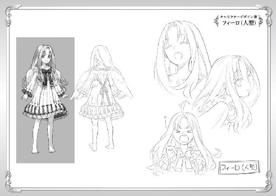

| 盾の勇者の成り上がり 2【電子版書き下ろし付】 (MFブックス) | |
| アネコ ユサギ | |
ＭＦブックス
盾の勇者の成り上がり２
アネコユサギ

その日、俺は城の倉庫で目を覚ました。
埃臭くてウンザリする。だけど......目覚めは悪くはない。
「すぅ......すぅ......」
俺の隣にある藁の束の中から寝息が聞こえてくる。そこにはラフタリアという少女が眠っていた。
まずは今までの出来事を反芻していこうと思う。
俺の名前は岩谷尚文。大学二年生だ。
普通に日本で生まれ、自分で言うのもなんだがオタク趣味にハマっていた日本人だった。
何の因果か図書館で見つけた本、四聖武器書という本を読んでいるうちに、気が付いたらその物語の登場人物、盾の勇者として召喚されていた。
この世界は波といわれる魔物が次元の裂け目から大量に現れる謎の災害に襲われており、その災害を乗り越えるために勇者を召喚したのだという。そして、俺の持つこの盾は、どんな呪いが掛けられているのかは不明だが装備を外すことができず、しかも守ることしかできないという大問題を抱えている。
だけど俺はネットゲームの経験を生かし、自分は守ることに重点を置き攻撃は仲間に頼ろうとした。
そんな大冒険が始まると胸を高鳴らせていたのだが、卑劣な罠に掛かり、あらぬ疑いによって冤罪を被ってしまった。その所為で俺は人間不信になり、仲間は出来ず、無一文で城を追い出されて生活する羽目になった。
じゃあ波と戦わなければ良いと思うだろうがそうはいかない。
勇者はこの異世界の波という災害によって大体一ヶ月毎に、その波に対処するため、強制的に召喚されてしまうという問題がある。
守りたくもない連中を命を懸けて守らねばならないという使命を無理やり与えられ、時に石を投げられつつ俺は必死に金を稼いだ。
で、俺の隣の藁の束で寝ている女の子......ラフタリアを亜人奴隷として購入した。
この世界では奴隷が存在し、この国メルロマルクでは亜人という、人間に似ているけれど動物の耳や尻尾がある者を奴隷として使役している。
買った当初は幼い女の子だったのだが、いつの間にか俺より若干若い程度の外見にまで成長してしまっていた。なんでもこの世界の亜人という種族は、急速にＬｖを上げるとそれに応じて幼い者が成長してしまうそうだ。
最初は奴隷としてコキ使ってやろうと思っていたが、自己満足な決闘を申し込んで来た元康との戦いで俺を信じてくれて、自分の利益を犠牲にして行動してくれた。そんなこともあり、今では大切な仲間として信頼することにしている。正直、この世界の連中なんて全員死んでしまえと思っていたけれど、少しだけ助けたいと思えるようになった。
「あ......」
ラフタリアが目をこすりながら起き上がる。
「おはようございます。ナオフミ様」
「ああ......おはよう」
ラフタリアはかなりの美少女だ。
顔のつくりは芸術品に匹敵するほど整っていて、美少女という言葉以外で表現するのも憚られる。
髪の色は茶色で、背中まで伸ばしており、長くて若干カールが掛かっている。瞳は大きく、澄んでいるように思える。色は綺麗な紅茶色。俺が今まで出会った女の子の中で、その瞳の美しさは他に類を見ない。
ここまで純粋そうな瞳を維持するのは難しい。外見年齢に不相応なピュアな瞳がラフタリアのチャームポイントだ。
このラフタリアと一緒に俺はＬｖ上げと金稼ぎを最初の波......この世界で二番目の波が発生するまで行い、幸いにも乗り切った波との戦いは後で説明しようと思う。問題は波の後のことだった。
「では朝食を頂きに行きましょう」
「そうだな、城の食堂で貰えるかな？」
「おそらくは......行ってみましょう」
と、今までの出来事を思い出すのは程々にして、俺達は食堂に向かった。
ちなみに俺の汚名はまだ雪がれておらず、国の連中の俺への態度はよくない。現に食堂に行くと兵士が俺達の行く手を遮り、勇者達が食事中だとほざいた挙句、兵士の食事が終わってからにしろと続ける。盾の力で攻撃することができないという制限が無かったら殴り飛ばしているところだ。
俺もその勇者の一人であるはずなのにもかかわらずな！
さて、食事を終えた俺達は謁見の間に通された。
今回、俺達が城に居るのは波から世界を守ったことの報酬を受け取るためだ。
たく、支払うのが翌日だったのならさっさと言えば良いものを......このクズは俺への嫌がらせに命でも懸けているのか。
ただでさえ顔を合わせるのも嫌な奴等と一緒に居るんだ。胃に穴が空いたらどうするんだ。
俺がクズと心の中で呼んでいるのは、この国の国王オルトクレイ＝メルロマルク......何世だったかな？ 覚えたくもない。ともかく、俺を召喚した国の王だ。
俺が冤罪の嫌疑を掛けられた時、真実の追究なんか放っておいて、俺に罪を被せやがった酷い王だ。挙句、昨夜は権力を使って無理やり騒ぎを起こしやがった。
「では今回の波までに対する報奨金と援助金を渡すとしよう」
次の波に備えるための金だ。クズ王は勇者全員に渡すことを約束していた。
ツカツカと金袋を持った側近が現れる。
「ではそれぞれの勇者達に」
金袋の方に視線が向く。
確か、月々の援助金として、最低でも銀貨五〇〇枚は貰えるはず。
今回の金で何を買うか。
とりあえずラフタリアの武器あたりが妥当か？
あるいは、この際だから良い防具を買うという選択もある。ああ、でもそろそろ薬の調合で使う機材の新調もしたいところだしなぁ。実はあの機材、盾が反応していて、吸わせたら何になるか興味があったんだよなぁ。ジャラジャラという金袋の音に、何を買おうかと夢が広がる。
俺の目の前に金袋の中身がわかるように見せられる。
ひーふーみー............うん、きっちり数えて五〇〇枚ある。
「モトヤス殿には、今回の活躍と依頼達成による期待とをあわせて銀貨四〇〇〇枚」
おい！
呆気に取られた俺は元康の持つ、重そうな袋に目を奪われた。文句を言ったらそれこそ、何倍もの嫌味を言われそうだから黙っているが、拳に力が集まるのを感じる。
このモトヤスと呼ばれた奴、本名は『北村元康』。俺と同じく異世界の日本から来た勇者で、選ばれた伝説の武器は槍。だから槍の勇者と呼ばれている。
年齢は二一歳。俺以外の勇者はこの世界によく似たゲームをプレイした経験と知識を持っているらしい。しかし、その知識を俺には教えず、俺以外の勇者は俺をハメて蹴落としたのだ。
で、この元康、何でも女関係で刺されてこの世界に飛んできたそうだ。あくまで本人談なので真偽は不明だ。
この元康、仲間は全員女、というハーレムパーティーを作っている無類の女好きだ。
昨夜の事、ラフタリアが俺の奴隷として戦いを強いられていると思いこんだコイツは、ラフタリアを救うと意気込んで強引に決闘を申し込んできた。
本来決闘とは双方が譲れないことを賭けて戦うものなのだが、コイツは俺にとって損にしかならない条件を提示し、俺に攻撃手段が無いことを知りながら決闘を仕掛けてきた。もちろん、受ける義理も無かったので断ったが、前述のクズ王が強引に決闘を行わせた。しかも俺が負ければラフタリアを解放するだけで、元康には何のデメリットも無い、不公平極まりない戦いをさせられた。
だからといって簡単に負けを認めるわけにはいかない。俺は無い知恵を絞って元康を追い詰めた。そこで卑怯な横やりが入り、俺は無理やり負けさせられてしまった。
最終的には、ラフタリアが自らの意思で元康の手を拒んで俺の元に戻ってくれたのが救いだ。
そんな感じでコイツは俺の不幸の元凶に一枚噛んでいる敵だ。
正直言えば女性経験が豊富そうなイケメンのナンパな男というのが元康の外見だ。
豪華な銀の胸当てを着け、まさしく勝ち組に乗った勇者と表現するのが正しいだろう。
「次にレン殿、やはり波に対する活躍と我が依頼を達成してくれた報酬をプラスして銀貨三八〇〇枚」
お前もか!?
クールを装っているが、元康に負けているのが悔しいような顔付きで錬が金袋を持っている。しかも小声で『王女のお気に入りだからだろ......』と、毒づいている。
この錬という奴は、本名は『天木錬』といい、俺と同じく異世界の日本から召喚された剣の勇者だ。歳は一六歳だったか。
但し、俺の知る日本ではなく異世界の日本......えっと具体的にいうとＶＲＭＭＯという架空の電脳世界に入ることができるほど科学の進んだ日本からこの世界に来たという経緯がある。
様々な日本があるようで、昔の俺だったら錬の世界にも行ってみたいとか思っただろう。
錬は年相応の身長で女顔の美少年剣士だ。性格はクールを演じている熱血......なのか？ 内心は他者を見下して、「俺の知るゲーム知識で世界を救う。本当の勇者は俺だ」とか思っていそう。
「そしてイツキ殿......貴殿の活躍は国中に響いている。よくあの困難な仕事を達成してくれた。銀貨三八〇〇枚だ」
樹に至っては『この辺りが妥当でしょう』と呟きつつ、元康の方へ羨ましそうな目を向けているのがわかった。
樹の本名は『川澄樹』、歳は錬より一つ上の一七歳。物腰の柔らかい少年というのが第一印象だ。ただ、なんていうか儚げだ。所持する伝説の武器は弓。
あまり接点がないからよく知らない。それでも元康や錬のようにゲームの知識を持っていて、俺とは違う世界の日本出身だ。
勇者の中じゃ一番幼く見えるだろうな。実年齢は錬が一番下だろうけど。
そんな事よりも、錬への依頼って何だよ？ 初めて聞いたぞ。
「ふん、盾にはもう少し頑張ってもらわねばならんな」
名前ですらない！ 誰が盾だ。
頭の血管が切れそうな苛立ちを感じる。昨日あれだけ我侭をほざいた貴様が言うのか!?
で、俺が金袋を受け取ろうとすると何故か引っ込められた。
「奴隷紋の解呪代として援助金はなしとさせてもらう！」
てめぇ！
「......あの、王様」
ラフタリアが手を上げる。
「なんだ？ 亜人」
「......その、依頼とはなんですか？」
ラフタリアも察しているのだろう。報酬が貰えないことに目を瞑って、別の観点から尋ねる。
「我が国で起こった問題を勇者殿に解決してもらっているのだ」
「......何故、ナオフミ様は依頼を受けていないのですか？ 初耳なのですが」
「フッ！ 盾に何ができる」
うぜぇ！
謁見の間が失笑に包まれる。
ああ、やばい。怒りで暴れだしそう。
「............」
そう思ったのだが、ラフタリアの方から拳をぎゅっと握り締める音が聞こえて来た。
見ると無言で怒りを押し殺して震えている。
......うん。堪えきれそう。
「ま、全然活躍しなかったもんな」
「そうですね。波では見掛けませんでしたが何をしていたのですか？」
「足手まといになるなんて勇者の風上にも置けない奴だ」
三勇者共がそれぞれ皮肉混じりに言った。
苛立ちも最高潮だ。せめて嫌味だけでも言っておくか。
「民間人を見殺しにしてボスだけと戦っていれば、そりゃあ大活躍だろうさ。勇者様」
そう、コイツ等は波で現れたボスにだけ目が行って、今にも死にそうな連中を無視して突撃していった。そのお鉢が回ってきて、俺達は村の連中を助けて歩くことになった。
「ハッ！ そんなのは騎士団に任せておけば良いんだよ」
「その騎士団がノロマだから問題なんだろ。あのままだったら何人の死人が出たことやら......ボスにしか目が行っていない奴にはそれがわからなかったんだな」
元康、錬、樹が騎士団の団長の方を向く。すると団長の奴、忌々しそうに頷いた。
「だが、勇者に波の根源を対処してもらわねば被害が増大するのも事実、うぬぼれるな！」
この野郎......お前がそれを言うのか？
城でふんぞり返っていただけの分際で偉そうに。そもそも勇者って俺も勇者だよ。それともアレか、盾は勇者じゃないってか？
「はいはい。じゃあ俺達は色々と忙しいんでね。行かせてもらいますヨー」
ここでムキになっても意味はない。この程度で立ち去るのが妥当だろう。
「まて、盾」
「あ？ なんだよ。俺は城でふんぞり返ってるだけのクズ王と違って暇じゃないんだ」
「お前は期待はずれもいいところだ。消え失せろ！ 二度と顔を見せるな」
くっ!? コイツはどこまでも俺を不快にさせる野郎だ！
「それは良かったですね、ナオフミ様」
満面の笑みでラフタリアが答える。
「......え？」
「もう、こんな無駄な場所へ来る必要がなくなりました。無意味に時間を浪費するよりも、もっと必要な事に貴重な時間を割きましょう」
「あ......ああ」
なんかラフタリアが頼りになってきている気がする。
ギュッとラフタリアに手を握られた。きっとラフタリアも怒っているんだろう。一人だけだと耐えられない怒りも鎮まっていくように感じた。
「ちょっと待ってください」
樹が手を上げてクズに異論を唱えた。
「なんじゃ弓の勇者殿？」
何を言うつもりだ？ どうせ碌な事を言わないんだろうけどさ。
「昨日の事なのですが、尚文さんに対して行った不正に関する問題をどう考えているのですか？ と、尋ねているのです」
一瞬で場の空気が固まった。
「どう、とは？」
「ですから、ラフタリアさんを賭けた勇者同士の戦いにおいて不正を行ったにもかかわらず、勝手に奴隷紋でしたっけ？ ......を、解いておきながら援助金を支給しないというのはどうなのですかと聞いているんです」
なんだ？ 樹の目が普段にも増して鋭く、クズを強く詰問しているようだった。
「そうだな、俺も見ていたが、明らかに尚文は元康にルール上では勝っていた」
「俺は負けてねぇ！」
元康が異議を唱えるが、錬と樹の目は冷たい。
「返答次第では尚文さんが本当に性犯罪を犯したのか？ という所まで遡ることになります」
「あ、う......」
クズの奴が視線を泳がせながら口をつむぐ。
「違いますわイツキ様、レン様！」
派手な装飾を身に付け、厚い化粧をしたビッチのような女がそこに割り込んで言い放った。
そう、コイツが諸悪の根源にして俺に犯罪者の汚名を着せた最低のビッチ女だ！
マイン＝スフィア。本名はマルティと言うらしいが、名前なんてどうでもいい。
性格を表した血のようにドス赤い髪、忌々しいが容姿だけは美しい。
国が用意した冒険者が誰一人として俺の仲間になろうとしなかった中で唯一俺の仲間になった。だが、支度金として支給された俺の金を全て奪った挙句元康の元へ下り、俺に性犯罪者の汚名を着せた、とんでもなく腹黒い女だ。
だからこれから俺は心の中でこのクソむかつく魔女をビッチと呼ぶことに決めた。
しかも事もあろうにこのビッチ、この国の王女だとか。
俺が異世界に飛ぶ前に読んでいた書物、四聖武器書にもビッチっぽい姫が出てきた。コイツの事なんじゃないかと睨んでいる。
「盾の勇者は一対一の決闘においてマントの下に魔物を隠し持っていたのです。ですから私の父である国王は采配として決着の判決を見送ったのです」
何を言ってやがる。攻撃の手段が無い俺に対して一対一で決闘を申し込んだ時点で勝敗も糞もないだろうが！ 当然それをわかっていて決闘させたんだろうがな。
「考えはわかりますけど......」
「納得は無理だろ」
樹と錬が不満気にしている。
ビッチの奴も忌々しげに言い訳を考えている。こういうビッチは悪知恵だけは働くからな。
「マインさん。それでもあなたが後ろから魔法を放ったことは反則です」
「仕事をしていないのは確かだろうが、見た感じだとギルドからの依頼も来ていないみたいだし、最低限の援助は必要なんじゃないか？ 実際、騎士団の代わりに村を守ったんだろ？」
ビッチが小さく舌打ちするのが聞こえてくる。
ざまあないな。権力で揉み消すにも、相手は勇者だから騙すに騙せないのはわかっているだろ。
現状証拠でこっちの方が優勢なんだよ。他に証人がいなかった冤罪の時と一緒にするな。
「......しょうがない。では最低限の援助金だけは支給してやろう。受け取るが良い」
クズが高らかに命令すると金袋が俺に受け渡される。
「では王様、私達はおいとまさせていただきますね。勇者様方、正しい判断に感謝いたします」
と軽やかな歩調でラフタリアは俺をリードし、城を後にする。
「負け犬の遠吠えが」
お前が言うなと言いたくなる元康と、無言で肩をすくめる錬と樹。
......うん。理不尽を共有するって、こんなにも気分が楽になるんだな。
錬も樹も、一応は元康への疑いを持ったようだ。ま、見て見ぬ振りをしているのだから許しはしないけど。
「では、あの奴隷商のテントに行って奴隷紋を掛けてもらいましょう」
「え？」
城を出るとラフタリアが振り向いて言った。
「じゃないとナオフミ様は私を心から信じてくれませんからね」
「いや......もう、別に奴隷とかじゃなくても良いんだぞ？」
「ダメです」
「はい？」
「ナオフミ様は奴隷以外を信じられない方です。嘘を吐いたってダメですよ」
......俺はラフタリアの育て方を間違えたのかもしれない。
確かに奴隷以外信じられないというのは事実だけど、ラフタリアは奴隷でなくたって信じても良い。
もしもラフタリアが自分の事だけを考えていたなら、決闘の時に元康の下へ行けば良かった。
現にこの国の連中に嫌われている俺と一緒にいて良い事なんて無いし。
「あのさ、ラフタリア」
「なんですか？」
「別に呪いを掛けなくても良いんだぞ？」
「いいえ、掛けてもらいます」
......何故、この子はこんなにもこだわるんだ？
「私もナオフミ様に信じてもらっている証が欲しいのです」
その言葉を聞いて、純粋にこの子を守りたいと思った。
俺の胸の中に湧いてくる思い、これが恋心かとも思うが、何か引っかかる。
外見こそ大人だが、ラフタリアはほんの少し前まで子供だった。というのも、亜人という種族はＬｖが上がると年齢以上に成熟していくという特徴があるのだ。
ラフタリアは親を波の災害に襲われて亡くしている。だから、守りたいと思う気持ちは恋心というよりは親心に近いのかも。幼いラフタリアが大きく育ったから......そうに違いない。
これが親心という物なのだろう。だから俺が親代わりにならねば。
「さ、行きましょう」
そこまで言うのなら止める必要は無い。好きなようにさせよう。
俺達は奴隷を扱っている、あのテントに顔を出すことにしたのだった。
「これはこれは勇者様。今日はどのような用件で？」
テントに顔を出すと、あの紳士の奴隷商がもったいぶったポーズで俺達を出迎える。
「おや？」
奴隷商はラフタリアをマジマジと見つめて感心したように声を漏らす。
「驚きの変化ですな。まさかこんなにも上玉に育つとは」
とか言いながら俺の方を見て、何かガックリと肩を落とす。
この奴隷商という人物は俺が人間不信になり、若干の金はあっても攻撃の手段がないと悩んでいたところに奴隷を買いませんか？ と勧めてきた奴だ。
外見は小太りの中年紳士。怪しいを絵に描いたような人物だ。
どうも俺の目付きが気に入って色々と良くしてくれるらしい。ここで俺はラフタリアを買った。
「......なんだよ」
「もっと私共のような方かと思っていたのですが期待はずれでしたな」
それはどういう意味だ？ とは言わず我慢しよう。
舐められると、以後の関係に支障が出るからな。それっぽい事でも言っておくか。
「生かさず殺さず、それでいて品質を上げるのが真なる奴隷使いだと答えてやる」
ドスの利いた声で奴隷商に返答する。
「お前の知る奴隷とは、使い捨てるものなんだろうな」
「な、ナオフミ様？」
ラフタリアが上目使いで心配そうにこちらを見上げた。
自分でもちょっと調子に乗っているという自覚はある。なんというか以前より少し余裕ができた。
「......ふふふ。そうでしたか、私ゾクゾクしてきましたよ」
奴隷商の奴、俺の答えが気に入ったのか、これでもかと笑みを浮かべる。
「して、この奴隷の査定ですな......ここまで上玉に育ったとなると、非処女だとして金貨二〇枚で、どうでしょうか？」
「なんで売ることが既に決定しているんですか！ それに私は処女です！」
ラフタリアの言葉に奴隷商は驚きの声を発する。
「なんと！ では金貨三五枚に致しましょう。本当に処女か確かめてよろしいですかな？」
「ナオフミ様！」
ラフタリアが金貨三五枚だと!?
「ナオフミ様!? ねえ、なんか言ってくださいよ」
金貨三五枚か、Ｌｖ75の狼男が余裕で買える金額だぞ！
そんな思案をしているとラフタリアが凄く怖い顔でガシッと俺の肩を掴む。
「ナオフミ様......お戯れは程々になさいませんと怒りますよ」
「どうしたんだ？ 怖い顔をして」
「私が査定されているにもかかわらず、全然拒否しないからです」
「余裕を見せないと舐められるからだ」
と、誤魔化すしかないだろう。ちょっと考えが脳裏に過ぎったのを見抜かれたら、ラフタリアに見限られかねない。さすがに俺をこの世界で唯一信じてくれた子を売るような真似はしない。
だが......。
「金貨三五枚か......」
小さく呟くとラフタリアの力が強くなる。
「いたい、いたい！」
ラフタリアの攻撃力って......俺の防御力を上回っているんだなぁ。
これは頼りになる。戦闘的な意味で。
「......このまま逃げてもよろしいでしょうか？」
「冗談だ。ラフタリアがそんなにも高く評価をされているんだなと思っただけだ」
「そ、そんな......ナオフミ様ったら......」
なんかラフタリアが大人しくなって照れている。
「まあ奴隷商、ラフタリアは売らないと決めているんだ。大事な娘を手放せるか」
「娘？」
「気にするな。こっちの話だ」
「はぁ......？」
たとえ親の真似事をするとしても、ラフタリアの親は世界に二人しかいない。ラフタリアも俺が突然親気取りを始めたら嫌だろう。
「そうですか......非常に残念です。して、何の御用で？」
「ああ、お前は聞いてないか？ 城での騒ぎ」
俺の問いに奴隷商はまたもニヤリと笑う。
「存じておりますぞ。奴隷の呪いが解かれてしまったのですね」
「知っているなら話は早いな......というか、何しに来たのかわかっているなら査定をするな」
俺がラフタリアに愛想を尽かされそうになっていたというのに。
「あの王の妄言程度でこの国の奴隷制度はなくなりませんよ。ハイ」
昨夜、あのクズは俺の奴隷であったラフタリアを国の法律を捻じ曲げてまで没収しようとした。それは元康が気に入らないからという理由だったようだが。
「ん？ 貴族は奴隷を買わないんだろ？」
「いえいえ、むしろ貴族の方々が買いに来ます。用途は色々ありますからね。ハイ」
「あのクズ、元康......槍の勇者に肩入れしてあんな事言って貴族が反感を抱いたりしないのか？」
そうなると滑稽なんだがな。というかむしろそうなってくれればこの国も良くなるのに。
「この国も一枚岩ではございませんので。そんな事をすれば手痛い目に遭うのは意見を掲げた貴族です。ハイ」
「あのクズがそんなに権力を持っているのか？」
独裁国家的な国なのだろうか。だとしたら一〇年持たないな。いずれ反乱でも起こって滅亡するだろう。なんせクズが国を治めて、ビッチが後継者だもんな。
「それはですね。この国では王より──」
「あの......奴隷紋の話はどうなったのですか？」
「そういえばそうだったな」
脱線してしまった。考えてみれば、もう会わないクズの事なんてどうでも良いな。
「で、奴隷紋を掛けてもらいに来たわけですね。ハイ」
「ああ、できるか？」
「いつでもできますよ」
パチンと奴隷商が指を鳴らすと、奴隷認証をした時の壷を部下が持って来た。
ラフタリアは恥ずかしそうに胸当てを外して胸を露出させる。
「ど、どうですか？」
「何が？」
「......はぁ」
ん？ 何をそんなに残念そうにしているのだろうか？
しかも溜息まで吐く始末。俺が何かしたのだろうか？
後は前やった時と同じように俺の血を混ぜたインクをラフタリアの奴隷紋があった場所に塗りつける。消えていた紋様が浮かび上がり、ラフタリアの胸で輝き始める。
「くっ......」
ラフタリアは痛みを堪えている。
俺の視界に奴隷のアイコンが復活した。命令や違約行為に対する該当項目をチェック。
......前よりは少なめにして大丈夫だ。ラフタリアは俺に信じてもらうために奴隷に戻ったのだ。俺もラフタリアを信じなければいけない。むしろ殆ど掛ける必要はない、形だけの印だ。
「さて」
どうするかと考えていると、不意に残ったインクの入っている皿が視界に入る。
触れてみると盾が反応していた。
「なあ、このインクを分けてもらえないか？ その分の金は払うから」
「ええ、良いですよ」
残ったインクを盾に掛ける。
スー......と盾はインクを吸い込んだ。
奴隷使いの盾の条件が解放されました。
奴隷使いの盾Ⅱの条件が解放されました。
奴隷使いの盾
能力未解放......装備ボーナス、奴隷成長補正（小）
奴隷使いの盾Ⅱ
能力未解放......装備ボーナス、奴隷ステータス補正（小）
奴隷使いの盾か......まあ、なんとなく頷ける結果だな。
ツリーは独自のものなのか新しく出現し、元はスモールシールドから派生している。その分あまり強くない。だけど、装備ボーナスがちょっと魅力的だ。
成長補正か。
というかインクを少し流しただけでなんで二つも開いたんだ？
この盾、伝説の武器であり、様々な素材を吸わせることで成長していく力を持っている。
そしてしばらくその盾の状態でいると能力解放というものが起こり、装備ボーナスが永続的に俺のステータスに付与されるという仕組みだ。つまり様々な盾を手に入れて装備ボーナスを重ねることで勇者は普通の人よりも遥かに強くなれるということなのだ。
スキルや技能、他にステータス自体を伸ばす装備ボーナスが今のところ確認されている。
まだまだ謎が多いが、この盾を使いこなしていかないとこれから生き残ることはできないだろう。
さてと、徐にラフタリアの顔を見る。
「なんですか？」
そういえば髪の毛を盾に吸わせたことがあったな。あの時はラクーンシールドに目が行ってたけど、こっちも満たしていたのかもしれない。おそらく奴隷使いの盾Ⅱがそれだったのだろう。ツリーを満たしたので一緒に解放された。そんなところだと推察する。
となると......。
「ラフタリア、ちょっと血をくれないか？」
「どうしたのですか？」
「いやな、少し実験してみたくてな」
首を傾げつつ、ラフタリアは俺がインクに血を入れた時と同じように指先をナイフで少しだけ切って血を滲ませ、俺が差し出した盾に落とす。
奴隷使いの盾Ⅲの条件が解放されました。
奴隷使いの盾Ⅲ
能力未解放......装備ボーナス、奴隷成長補正（中）
よし！ 推理は当たった！
「ナオフミ様？ なんか楽しそうですよ」
「ああ、面白い盾が出てきたんでな」
「それはよかったですね」
俺は盾を奴隷使いの盾に替えて解放を待つことにした。
「さてと......ん？」
ここでの用事も済んだし帰ろうとすると、テントの隅にある卵の入った木箱に目がいった。
見覚えがないものだ。何だろうか。
「あれは何だ？」
奴隷商に尋ねる。
「ああ、あれは私共の表の商売道具ですな」
「お前等の表の仕事ってなんだよ」
「魔物商ですよ」
なんかテンション高めに答えられた。
「魔物？ というとこの世界には魔物使いとかもいるのか」
「物わかりが良くて何よりです。勇者様はご存じないですか？」
「会ったことはない気がするが......」
「ナオフミ様」
ラフタリアが手を上げる。
「どうした？」
「フィロリアルは魔物使いが育てた魔物ですよ？」
聞いたこともない魔物の名前だ。一体何を指しているんだだろう。
「何だ、それは？」
「町で馬の代わりに馬車を引いている鳥ですよ」
「ああ、あれか」
馬車を引く大きな鳥ね。この世界独特の動物かと思ったら魔物だったのか。
「私の住んでいた村にも魔物育成を仕事にしている方がいましたよ。牧場に一杯食肉用の魔物を育てていました」
「へー......」
あれか？ この世界にとって牧場経営とかの類は魔物使いというカテゴリーに組み込まれているのかもしれない。動物という名称がなく、人以外の生物が魔物と呼ばれているならありえるな。
「で、あの卵は？」
「魔物は卵から育てないと人には懐きませんからねぇ。こうして卵を取引してるのですよ」
「そうなのか」
「魔物の檻を見ますか？」
欲しいのなら売る。奴隷商は商魂逞しいな。
「いや、今回はいい。で、あの卵の入った木箱の上に立てかけてある看板は何だ？」
なんと書いてあるのか読めないけど、木箱に矢印がついていて数字らしきものが書いてある。
「銀貨一〇〇枚で一回挑戦、魔物の卵くじですよ！」
「一〇〇枚とは高いな」
俺達の所持金は銀貨五〇八枚、かなりの大金だ。
「高価な魔物です故」
「一応参考に聞くが、フィロリアルだっけ？ それはお前の所じゃ平均幾らだ？」
「......成体で二〇〇枚からですかね。羽毛や品種などに左右されます。ハイ」
「成体ということはヒナはもっと安いのか。更に卵の値段だけで、育成費は除外だとすると......得なのか？」
「いえいえ、あそこにあるのは他の卵も一緒でございます」
「なるほど......くじと言っていたからな」
ハズレもあれば当たりもあると言う奴か。
ハズレを引けば目も当てられない。当たりを引けば元より高め。
「で、あの中には当たりが無いってところか」
「なんと！ 私達がそんな非道な商売をしていると勇者様はお思いで!?」
「違うのか？」
「私、商売にはプライドを持っております。虚言でお客様を騙すのは好きではありますが、売るものを詐称するのは嫌でございます」
「騙すのは好きだけど、詐称は嫌いって......」
どんな理屈だよ。と、半ば呆れつつ考える。
「それで？ 当たりは何なんだ？」
「勇者様がわかりやすいように説明しますと騎竜でございますね」
キリュウ、騎竜......たぶん、騎士団の将軍クラスが乗っていたドラゴンか？
「馬みたいなドラゴン？」
「いえ、今回は飛行タイプです。人気があります故......貴族のお客様が挑戦していきますよ」
飛ぶドラゴンかー......夢があるな。
「ナオフミ様？」
「相場ですと当たりを引いたら金貨二〇枚相当に匹敵します。ドラゴンの中では安めです。ハイ」
「ちなみに確率は？ その騎竜の卵の出る奴だけで良い」
「今回のくじで用意した卵は二五〇個でございます。その中で当たりは一個です」
二五〇分の一か。
「見た目や重さでわからないよう強い魔法を掛けております。ハズレを引く可能性を先に了承してからの購入です」
「良い商売をしているな」
「ええ、当たった方には名前を教えてもらい、宣伝にも参加していただいております」
「ふむ、確率がな......」
「一〇個お買い上げになると、必ず当たりの入っている、こちらの箱から一つ選べます。ハイ」
「さすがに騎竜とやらは入っていないのだろう？」
「ハイ。ですが、銀貨三〇〇枚相当の物は必ず当たります」
自然と笑みが零れる。
待てよ......コレってコンプガチャじゃねえか、コラ！
こういうのは大元が得をするように出来ているんだ。あと少しでまた騙されるところだった。
「うーむ......」
考えてみれば仲間がラフタリアだけではちょっと心許なくなってくるかもしれない。
奴隷を新しく買うのと魔物を買うのではどっちが得だ？
新しく出た奴隷の盾を試してみるのも面白いよな。ラフタリアはＬｖが上がっているから成長補正の恩恵が少し受けづらいし。
ただ......魔物の長所もある。ラフタリアと一緒に行動するようになって問題になったのは武器や防具だ。魔物はおそらく自前の体で戦うから武器や防具を買い与える必要がない。
その分をラフタリアに回せる。
「よし、じゃあ試しに一個買わせてもらうか」
「ありがとうございます！ 今回は奴隷紋の代金込みでご提供させていただきます」
「太っ腹じゃないか。俺はそういうの好きだぞ」
「ナオフミ様!?」
「どうした？」
「魔物の卵を買うのですか？」
「ああ、ラフタリアだけじゃこの先の戦いが厳しくなるだろうと思ってな。奴隷を買うのは装備代を考えると高くつくし、魔物辺りでも育ててみるのも一興かとね」
「はぁ......でも、魔物も大変ですよ」
「それくらいわかってる。ラフタリアもペットくらいは欲しいだろ？」
「......ドラゴンを狙っているのではないのですか？」
「最悪ウサピルでも問題は無い」
小動物は嫌いじゃない。ネットゲームでもテイミングペットがあるじゃないか。あれと同じ感覚で一種の清涼剤代わりになってくれれば良い。何より奴隷と同じく命令できるのなら俺よりは攻撃力があるはずだ。
金銭に余裕が少しだけあるからか財布の紐が緩んでいる自覚はある。だけど悪い投資ではないはずだ。何より奴隷に盾があるならば魔物にあっても不思議じゃない。
「育てて売れば奴隷より心が痛まないしな」
「ああ、なるほど。そういう事ですか」
愛着は湧くけれど、俺達には金が必要なんだ。我慢するしかない。
奴隷は相手が人故に売る時が一番厳しいと思う。なんだかんだでラフタリアが俺を慕ってくれるように、俺を慕う奴隷を売るとなると俺にはできるかわからない。その点、魔物には喋る口が無いからな。どんなに懐いていたって心が少し痛む程度で済む。
良い買い主に巡り合えよ。とか勝手な願望を押し付けられるし。
「そういう斡旋もやってるだろ？」
「勇者様の考えの深さに私、ゾクゾクしますよ！ ハイ！」
奴隷商のテンションも上昇中だ。
並んでいる卵を見る。サーチとかはできないようにしてあるような事を言っていたから適当に選べば良いだろう。
「じゃあこれだな」
なんとなくの直感で右側にある卵を一個選んで取り出す。
「では、その卵に記されている印に血を落としてくださいませ」
言われるまま、卵に塗られている紋様に血を塗りたくる。するとカッと赤く輝き、俺の視界に魔物使役のアイコンが現れる。奴隷と同じく禁止事項を設定できるようだ。
......俺の指示を無視すると罰が下るように設定する。ラフタリアに比べると厳しめにチェックしておく。所詮は魔物だ。こちらの言葉は理解できるのかよくわからないから、きつい口調の方が良いだろう。まだ孵化していないけどな。
奴隷商はニヤリと笑いながら孵化器らしき道具を開いている。俺はその卵を孵化器に入れた。
「もしも孵化しなかったら違約金とかを請求しに来るからな」
「ハズレを掴まされたとしてもタダでは転ばない勇者様に脱帽です！」
奴隷商の機嫌も最高潮に達している。まったく、潜在的な被虐願望でもあるんじゃないかコイツ？ 男を嬲る趣味は無いが......まあ、他のクソ勇者が苦しむ顔は見たいな。
「口約束でも、本当に来るからな。シラを切ったら乱暴な俺の奴隷が暴れだすぞ」
「私に何をさせるつもりですか！」
「心得ておりますとも！」
奴隷商の奴、すっげー機嫌が良い。
「いつ頃孵るんだこれ？」
銀貨一〇〇枚を奴隷商に渡してから尋ねる。
「孵化器に書いております」
「ふーん......」
なんか数字っぽいこの世界の文字が動いている。
「ラフタリアは読めるか？」
「えっと、少しだけなら......明日くらいに数字がなくなりそうです」
「早いな。まあ良いけど」
明日には何かの魔物が孵化するのか、楽しみになってきた。
「勇者様のご来店、いつでもお待ちしております」
こうして俺達は卵を持って、テントを後にするのだった。
さて、これからどうするか。
そう考えたところで波で余った回復薬を思い出す。念の為に常備していたんだが、使わないのだから薬屋に売った方が金になる。
「薬屋に行って、それから武器屋に行く」
「ナオフミ様、財布の紐はきつく結んでいてくださいね。今回のような事はご自身の首を絞めます」
「わかっている」
「今のところ装備に困ってはおりません。必要になってから購入をお考えください」
「......」
ふむ、これも理に適ってはいる。しかし、俺達が持っている装備は他の勇者達に比べれば安物だ。この際、より強い敵と戦うために良い武器をラフタリアに持たせるのが得策だと思うのだが......。
「それに武器を新調してからまだ数日ですよ？ 親父さんがどんな顔をするか考えてください」
「うーん......」
確かに武器屋の親父には色々とサービスしてもらっている。下取りを込みでサービスしてくれているのだから今の所持金ではあまり強さに差が出るとは思えないか。
武器屋の親父は俺が冤罪の嫌疑を掛けられても力を貸してくれた唯一の人で、気の良い親父さんだ。俺の持っている装備品やラフタリアの武器、鎧は全部武器屋で購入した物である。
できれば贔屓にしたいし、恩に報いたい。
「わかった。今は貯金しておこう」
「はい！」
ある程度、金に余裕ができてから買い揃えるのも悪い考えではない。
「じゃあ薬屋に行くぞ」
薬屋に顔を出すと店主が俺の顔を見るなり、親しげに微笑む。
「なんだ？ どうしたんだ？」
いつもは渋い顔をしながら薬を買い取るはずなのに、笑みを浮かべられると背筋に寒気が走る。
「いやね。アンタが来たら礼を言っておこうと思ってね」
「は？」
俺もラフタリアも首を傾げる。
「リユート村の親戚がアンタに助けてもらった。できれば力になってくれと言われているんだ」
「ああ......なるほど」
昨日起こった波は俺が拠点にしていたリユート村周辺で起こった。そこで俺達は住民の避難誘導を優先して行った。お陰で被害を最小限に留めることができた。波が終わった時、リユート村の連中は揃って俺に礼を述べていたが、あの中に薬屋の親戚がいたらしい。
「だから今回はその礼に──」
薬屋の店主は戸棚から一冊の本を取り出して俺に渡す。
「なんだ？」
「お前さんが作ってくる初級の薬より高位のレシピを集めた中級レシピの本だ。そろそろ挑戦するには良い頃合だと思ってね」
「......」
俺は徐に中級レシピの本を広げてみる。ややボロく、ちょっと古びた装丁ではあるが文字が書かれているのがわかる。
うん。読めない。
「か、感謝する。頑張ってみよう」
せっかくの好意なのだからお礼を言わねば悪いだろう。たぶん、この中には高値で売れる薬だってあるはずなのだ。
「そう言ってもらえて嬉しいよ」
う......人の善意に応えられないプレッシャーが俺を刺激する。この世界の文字は読めないからと諦めていたけど......覚えた方が良いんだろうなぁ。
「魔法屋の奴も来いと言っておったぞ」
「魔法屋？」
「ナオフミ様、魔法を覚えるための書物を扱っている店ですよ」
「ああ、なるほど」
本屋だと思っていたあそこは魔法屋か......思い出してみれば水晶玉が店の奥にあった。
「どこの店だ？」
「表通りの大きな所だよ」
......ああ、城下町で一番か二番に大きい本屋ね。じゃなくて魔法屋か。
「で、今日は何の用だ？」
「ああ、今回は──」
回復薬をいつもより高く買い取ってくれた。
そのお金で機材を新調し、言われた通り魔法屋に顔を出す。
「ああ、盾の勇者様ね。うちの孫がお世話になりまして」
「はぁ......」
誰の事を言っているかわからないけどリユート村の住民なのだろう。魔法屋のおばさんは俺達を丁重に出迎えてくれた。
おばさんはなんていうか、小太りで魔女みたいな衣装を着ている。
「で、俺に何の用だ？」
本屋だと思っていた魔法屋の店内を見る。古臭い本が並び、カウンターの奥には水晶玉が沢山置いてある。他に杖とか、なんていうか確かに魔法を扱っている雰囲気があった。
そういえば魔法ってどうやって覚えるんだ？
「その前に、盾の勇者様のお仲間は、このお嬢ちゃんだけで良いのかい？」
「ん？ ああ」
ラフタリアと顔を合わせてから頷く。
「じゃあちょっと待ってておくれ」
おばさんはそう言うとカウンターから水晶玉を持ち出して、なにやら呪文を唱えだした。
「よし、じゃあ盾の勇者様、水晶玉を覗いてみてくれるかい」
「あ、ああ」
一体なんだというんだ？ と、俺は思いつつ水晶玉を覗き込む。
......なんか光ってるけど、特に何か見えるわけじゃないな。
「そうだね......盾の勇者様は回復と援護の魔法に適性があるようだね」
「え？」
魔法の適性診断してくれてたのか!?
早く教えてくれれば理解できたというのに......まあ、文句を言うのは間違っているが、説明が飛んでるぞ。
「次は後ろのお嬢ちゃんね」
「あ、はい」
俺は横に退いて今度はラフタリアが水晶玉を覗き込む。
「うーん。やっぱりラクーン種のお嬢ちゃんは光と闇の魔法に適性が出ているようね」
「やっぱりという事は常識なのか？」
「そうねぇ......光の屈折と闇のあやふやさを利用した幻を使う魔法が得意な種族だから」
なるほど、ラクーン種はタヌキやアライグマ辺りに似ている。俺の世界の日本でもタヌキは人を化かす妖怪だと信じられていた。そういう点は、この世界でも似通っているのかもしれない。
「で、結局なんなんだ？」
「はい。これが魔法屋のおばちゃんが渡したかった物よ」
と、おばちゃんが俺達にくれたのは三冊の本だった。
また本か！ 俺は読めないというのに、どうしてこうも親切心で本をくれるかな。
「本当は水晶玉をあげたいのだけど、そうなるとおばちゃんの生活が大変でね」
「どういう意味だ？」
「盾の勇者様は知らないのかい？ 水晶玉に封じた魔法を解放すれば対応した魔法を一つ覚えられるんだよ」
何!? じゃあ文字が読めなくても魔法が使えるというのか？
「随分前に国が勇者様用に......大量発注して、それなりの数を出荷したのだけど、盾の勇者様は知らないのかい？」
「知らないな」
あのクズの事だ。大方、俺以外の勇者に後で渡していたのだろう。
まったく、意図的に仲間外れにするとは......殺意が湧いてくるな。
「魔法書はかなり大変だけど、真面目に取り組めば結果的に多くの魔法が覚えられるよ」
水晶玉は一つ、魔法書はもっと多いといったところか。読めればの話なんだろうが。
「ごめんねぇ」
「いえ、タダで魔法書を譲ってくださるだけで十分ですよ」
ラフタリアが微笑んで対応し、俺も頷く。
「大体どれくらいの魔法までが使えるんだ？」
「どれも初級の魔法だね。これより高位は......お金を出して買ってくれないかい？」
「あ、ああ」
「教えてあげられれば良いんだろうけど盾の勇者様は忙しいでしょ？ ずっと城下町にはいないわよね」
「そうだな」
あっちも商売だ。身を切る思いで俺達に本を譲ってくれているのだから我侭は言えない。
「感謝する」
難しい言い方をしてしまったけど、俺達は魔法屋から魔法書を貰った。
「はぁ......」
思わず溜息が出る。あんまり勉強が好きじゃなかった俺はどうしたら良いんだろう。
わかっている。この書物を必死に解読してレシピや魔法を覚えた方が良いという事くらい。
なんていうんだろう。
スキルの中に『異世界文字翻訳』とかないかと思ってしまう。薬の方のレシピとかは盾にある可能性は高い。探せば見つかるとも思う。だけど、対応する盾を探す労力と、文字を覚え、本を読んで作れるようになるのとでは、どちらに軍配が上がることやら......。
後者は値段が安い事も然ることながら、別の物にも挑戦できる利点がある。
だけどなぁ......やっぱ異世界文字翻訳とかが存在する可能性を考えてしまうと、無駄な労力になりそうで覚える気力が萎える。
「一緒に魔法を覚えましょう」
ラフタリアが元気に俺に話しかけてくる。
「俺はこの世界の文字が読めないんだよ......」
「ええ、ですから一緒に覚えていきましょうよ」
「まあ......そうなるよな」
薬作りの合間に覚えておいて損はない、か。
「そういえば次の波はいつ来るのでしょう？」
「ん？ ああ、ちょっと待ってろ」
視界の隅にあるアイコンを表示させる。
これはステータス魔法と言うらしく、この世界の連中なら誰でも使える。
俺の場合、攻撃を司るステータスが極端に低く、逆に防御力が高い。
その中に、勇者にしか表示されないアイコンがあり、それに意識を集中させる。そうして出てきたアイコンから波の襲来時期を呼び出す。
──あと、四五日と一四時間。
「四五日もあるぞ！」
一ヶ月毎じゃなかったのか！
いや、まあ、二ヶ月分ではないけど......ってよく考えたら波が起こってから俺達を召喚したんだよな、この国は。となると周期は思いのほか長いのかもしれない。ラフタリアが奴隷になって俺に会うまでの日数とかも考えると自然な結果か。
ひと月後とは......大きい範囲で言ったものだ。
「まあ、時間があるのは良い事だけどさ」
その間にできる限りの事をしていくと考えると、少ないのかもしれない。
「とりあえず、ここでの用事は済んだのか？」
「そうですねぇ......奴隷紋の再登録と薬の処分、そして本も貰いましたし、当面はありませんね」
ラフタリアに確認を取る。何か忘れ物をして戻ってくるのはタイムロスだからな。
「じゃあ、飯でも食ってからＬｖ上げに行くか」
「はい」
今日の朝食には驚いた。味覚が回復していたからな。
飯が美味いというのは活力を与えてくれる。
乳鉢の盾の条件が解放されました。
ビーカーの盾の条件が解放されました。
薬研の盾の条件が解放されました。
乳鉢の盾
能力未解放......装備ボーナス、新入り調合
ビーカーの盾
能力未解放......装備ボーナス、液体調合ボーナス
薬研の盾
能力未解放......装備ボーナス、採取技能２
食事を終えた俺達は、その足で城下町を後にし、リユート村の方へ行く。あの辺りから先の場所に手頃な魔物が生息しているからだ。俺は他の勇者が知っているような穴場の狩場は知らない。だから、この世界の住人から聞くか、自分の足で探すしかない。
地図を広げて、手頃な場所を見つけるというのもなかなか難しいが、それだけやり応えがあるとも言える。競っているわけじゃないが、あの勇者共に遅れているのは若干悔しい。だが、知らない魔物と戦って勝てば盾が成長するので悪い話ではない。
結構説明を省いているが、色々な能力を持つ盾が出ているのだ。大体が能力上昇系なのが困る点ではある。
防御力アップが多いのは盾だからだろう。他に敏捷性やスタミナ、魔力、ＳＰと攻撃以外のステータスは上がっている。このお陰で前回の波では殆ど無傷で済んだわけだしな。
その道中......。
「......そういえば波の敵は盾で吸えるのか？」
何もせず帰ってきたから忘れていたけど、盾の成長のためにもぜひ試してみたいと思う。
で、リユート村が見えてきた辺りで、波の化け物の死骸をかなり見つけた。
次元ノイナゴの盾の条件が解放されました。
次元ノ下級バチの盾の条件が解放されました。
次元ノ屍食鬼の盾の条件が解放されました。
次元ノイナゴの盾
能力未解放......装備ボーナス、防御力６
次元ノ下級バチの盾
能力未解放......装備ボーナス、敏捷６
次元ノ屍食鬼の盾
能力未解放......装備ボーナス、所持物腐敗防止（小）
ついでに分解して他の盾が出ないか挑戦してみた。
が、どうもこのシリーズでは満たせるものは殆ど無いようで一つしか解放できなかった。
ビーニードルシールドの条件が解放されました。
ビーニードルシールド
能力未解放......装備ボーナス、攻撃力１
専用効果 針の盾（小） ハチの毒（麻痺）
まあ、こんなものだろうと歩いて行くと、キメラの死骸を村人達が撤去中だった。
「よ」
「あ、盾の勇者様」
昨日の影響か、村の連中は俺を見ると快く歓迎してくれる。
「波のボスだったか、コイツは」
キメラの死骸を見て俺はポツリと零す。
なんていうか......よく見るとキメラとはいうが、この世界の魔物とは何か違うような印象がある。色合いなのか、それとも生物的特徴なのかを具体的に説明するのは難しいけど。
「恐ろしいものです」
「......そうだな」
村人の声に俺も同意する。というのも、他の勇者や騎士団が素材を剥いでいったのだろう。原形こそ留めているが皮や肉がごっそりと切り取られている。
「俺も少し貰って良いか？」
「どうぞどうぞ、処分に困っていたところですから、なんなら村で加工して装備にしますか？」
「それも悪くはないけど......使えそうな所はあんまり無いぞ」
皮は剥がされ、鎧などにはできない。肉と骨......後は尻尾の蛇の部分くらいか。
頭の部分は切り取られて無かった。見た感じ、三つくらいは生えていたと思われるが......。
まあいいや。俺はラフタリアと一緒にキメラの死骸を分解して盾に吸わせてみた。
キメラミートシールドの条件が解放されました。
キメラボーンシールドの条件が解放されました。
キメラレザーシールドの条件が解放されました。
キメラヴァイパーシールドの条件が解放されました。
キメラミートシールド
能力未解放......装備ボーナス、料理品質向上
キメラボーンシールド
能力未解放......装備ボーナス、闇耐性（中）
キメラレザーシールド
能力未解放......装備ボーナス、防御力10
キメラヴァイパーシールド
能力未解放......装備ボーナス、スキル「チェンジシールド」 解毒調合向上 毒耐性（中）
専用効果 蛇の毒牙（中） フック
最後のはなんか色々と便利なボーナスが付いている。防御力もかなり高い。
ただ、変化させるには必要Ｌｖがかなり高く、しかもキメラシリーズを何個か解放しないとできないみたいだ。後回しで良いだろうけど、次の波でのメインの盾になる可能性が高い。
「残りはどうするんだ？」
「どうせ埋めるだけですからご自由にお使いください」
「うーむ......」
些かもったいない気もするけど、残った部分は殆ど肉と骨しかない。骨はまあ、日持ちが良いけど、肉は干し肉にするとかしか考えが浮かばない。食用とは思えないけど。
あれだ。魔法薬の材料とかになりそうなイメージがある。......とはいえ、どこで誰が買い取ってくれるかわからないからなぁ......腐ると困るし、下手に保存して再生とかされたら恐ろしい。
骨でも同じ事が言えるけど、肉よりは安心できそうなイメージがある。だけど......さすがにそんなに警戒するのもどうかと思う。
「じゃ、できる限り頂いておこう」
「え、ですがかなりの量になりますよ？」
「この村で預かってくれるだろ？」
「え？ 盾の勇者様がそう言うのでしたら......」
「まあ、肉は干し肉にして、少し残してくれれば買いたい奴に売って良い。復興費くらいにはなるだろう。波の大物の肉とでも言えば研究材料目的で買う奴もいるだろ」
「確かにそれなら買う方もいらっしゃるかも」
村人も復興資金が欲しいらしく、俺の提案を受け入れる。
内臓とか腐りやすそうな部分は盾に吸わせて処分し、俺達がリユート村に辿り着いた頃には日も落ちかけていた。
村は半壊していて、生き残った人達は比較的破損が少なかった家に纏まって生活している。俺達は割と安全だった宿屋の一室を店主が空けてくれたおかげで、その日はゆっくりと休むことができた。
「......復興の手伝いとかはしてやりたいが、人の事を考えている余裕はないな」
今日はリユート村の連中に甘えっぱなしだった。キメラの死骸を肉や骨として処分したのは感謝されたが、食事と宿を無償で提供されるというのはどうだろう。
「そうですね。私達も得をして村の方々にも得になる事ができれば良いのですが」
村の連中で読み書きができる奴にこの世界の文字を読むための表を書いてもらった。
わかりやすく言うなら、あいうえお表みたいな奴。英語で言うとアルファベット表。
後は少しだけ文字が読めるラフタリアにどの文字が俺の世界の文字でいう何に当たるかを発音してもらって解読表に置き換える。
おそらくこれに単語とかも合わさるのだから解読は困難を要するだろう。だけど一応......覚えておくに越したことはない。
薬を作る合間に、俺は文字を覚えようと四苦八苦するのだった。
翌日の昼前、ラフタリアが昨日の夜更かしの所為で寝坊し、やっと起きた。魔法書片手にうんうん唸っていたからな。俺？ 薬草を煎じて薬にしていた。
寝坊の分も取り戻すために出かける準備をしていると。
「あ、孵るみたいですよ」
宿の部屋の窓際に置いておいた、昨日買った卵に亀裂が入っているのをラフタリアが気付いた。
何か生物の毛のような、羽のような柔らかい物体が隙間から覗いている。
「そうか」
何が生まれるのか興味がある。ヒビが入った卵を見に行く。
ピキピキと卵の亀裂は広がり、パリンと音を立てて、中から魔物の赤ん坊が顔を出した。
「ピイ！」
ふわふわの羽毛、頭に卵の欠片を乗っけたピンク色のヒヨコみたいな魔物と俺の視線が合う。
「ピイ！」
元気良く跳躍し、俺の顔にぶつかった。全然痛くなかったけど、生まれたばかりだというのに元気そうな魔物だ。
「これは何の魔物だ？ 鳥系ということはピキュピキュか？」
ピキュピキュはあまり高く飛べないデフォルメされたコンドルのような魔物だ。それの幼生体とかなら納得がいく姿をしている。バルーンなどと比べると体は俊敏で攻撃もクチバシがあるので成長すれば期待はできる。
「うーん......私も魔物に詳しいわけじゃないですから」
ラフタリアも困り顔で答えた。
「しょうがない。村の連中に聞いてみるか」
魔物商の扱っている魔物なのだから、そこまで危険な魔物ではないだろう。聞けば答えてくれるかもしれない。俺が魔物の雛に手を伸ばすと、雛は俺の手に乗っかり肩まで駆け上って跳躍し、頭に到達する。
「ピイイイ」
スリスリと頬擦りをしている。なんか......可愛らしい態度だな。
「ふふ、ナオフミ様を親だと思っているのですよ」
「まあ刷り込みだろうな」
事前に登録をしてあるし、初めて見る動く相手が俺だったから、親と思っているのだろう。
卵の欠片を片付けようとすると盾が反応した。よくよく考えてみれば、盾に卵の欠片を吸わせれば何の魔物かわかるかもしれない。ということで、卵の欠片を盾に吸わせてみた。
魔物使いの盾の条件が解放されました。
魔物の卵の盾の条件が解放されました。
魔物使いの盾
能力未解放......装備ボーナス、魔物成長補正（小）
魔物の卵の盾
能力未解放......装備ボーナス、料理技能２
......なんか予想とは違う盾が出た。でも便利そうだから解放中だった奴隷使いの盾Ⅱから魔物使いの盾に変化させる。
「何かわかりました？」
「いや、別の盾が出てわからなかった」
結局、この雛は何の魔物なのだろうか。村の奴等が知っているとありがたいのだが。
復興中の村の中を歩きながら、今日はどこでＬｖを上げるか考える。
やはり妥当なラインは村の西部にある沼地辺りだろうか？ 前回は北西部の山を探索したので、それ以外の手頃な魔物が居る場所を探したい。というところで村人と顔を合わせる。
「あ、盾の勇者様」
「おはよう」
「おはようございます」
ここには一週間くらい居たからな。波で守ったこともあって、顔馴染みは結構多い。
深々と頭を下げられてしまった。なんか恥ずかしい気持ちになってくる。
「ピイ！」
頭の雛が元気良く鳴く。
「おや？」
村人が俺の頭に乗っかっている雛に目を向ける。
「どうしたんですか？」
雛を指差して訪ねる。
「魔物商から卵を買ってね」
「ああ、なるほど」
「この魔物が何か知らないか？」
村人は雛をマジマジと見つめる。
「そうですねぇ......たぶん、フィロリアルの雛だと思いますよ？」
「あの馬車を引く鳥か？」
それなら元の金額より高いから若干お得だったことになるのだが......まあ、村人の話が本当ならの話だけど。
「ええ、なんなら村の外れに牧場がありますから見てもらうと良いですよ」
「じゃあ行ってみるよ」
俺はラフタリアと一緒にその牧場を経営している奴の家に顔を出す。
牧場は波の被害を結構受けていて、飼育していた魔物が半分くらい死んでしまっていたらしい。
「と言うわけで、この魔物はフィロリアルであっているのか？」
牧場主に聞くと、頷かれる。
「そうですね。見た感じ、フィロリアルの雌ですねぇ」
雛を持ち、マジマジと鑑定しながら牧場主は言った。
「品種はよくある種類フィロアリア種で、荷車を引かないと落ち着かない生態を持っています」
「......それは生き物としてどうなんだ？」
「何かおかしいところでも？」
ああ、この世界で生まれた時から当たり前のように生活していたら不思議とか思わないか。
うーむ......大方、卵とか巣など守らないといけない対象物を便利に運べる荷車のような何かを使って守る生態とかがあるのだろう。
「ま、外れではなく割と当たりってところか」
成体が銀貨二〇〇枚の魔物を一〇〇枚で買えたと考えれば悪くはない。
「ピイ！」
フィロリアルの雛は俺の頭の上で鳴いた。
「コイツは何を食うんだ？」
「最初は豆を煮溶かした柔らかい物ですね。大きくなると雑食ですから何でも食べますよ」
「なるほど、ありがとう」
自分でも驚くほどすんなり礼が言えた。正直、今まではこの世界の連中は全て敵だと考えていたからだ。もしかしたら、城での一件......ラフタリアに救われたおかげで心に余裕が出てきたのかもしれない。
とりあえず、村で売っている煮豆辺りで良いらしい。
「名前はどうしますか？」
ラフタリアが雛を撫でながら聞いてくる。
「売るかもしれないペットに名前を付けるのか？」
こういうのって、名前を付けると愛着が湧いて売れなくなると聞く。
「ずっと雛ちゃんとかフィロリアルって呼ぶんですか？」
「む......」
それは確かに面倒くさい。
「じゃあ......そうだな、フィーロとでも呼ぶか」
「......安直ですね」
「ほっとけ」
「ピイ！」
名前をつけられたのを理解したのか、雛は機嫌よく鳴いた。
礼を言った後、俺達はフィーロ用のエサを買い、ついでに朝昼兼用の食事を取ってから出かけた。
「今日はどこへいきますか？」
「ピイ？」
「そうだなぁ......どこが良い狩場なのかまだ知らないから自分の足で探すしかないだろ。いつも通りに行くぞ」
「はい」
ラフタリアが頼りになっているから、前よりは戦いやすくなっているはずだ。
フィーロは俺の頭の上でピイピイ鳴いていた。騒がしいが、ちょっと心地よい。
「デカ！ カエルでっか！」
リユート村の西にある小さな湿地帯で今日は魔物を倒すことにしたのだが、初めて会う魔物に俺は驚きを隠せなかった。
いや、ゲームとかだと大きなカエルとかそういった化け物と遭遇するけど現実で見ると驚くだろ。
俺の腰くらいまである大きさのカエル、ビッグフロッグと遭遇して、思わず叫んでしまった。
「では行きますね！」
「あ！ まてラフタリア！」
俺がビッグフロッグの足を止める前にラフタリアが前に出る。
打ち合わせでは基本的に俺が先行すると決めていた。ネットゲームとかだと知らない魔物との不用意な接近は危険を招く。俺達よりも格上の強力な魔物であるかもしれないからだ。
そうなったら怪我では済まない。最悪、命をもってツケを支払うことになってしまう。
「てい！」
ラフタリアは俺の制止を振り切って先にビッグフロッグに剣で切り掛かった。
ビッグフロッグはラフタリアの攻撃に興奮したように叫び声を上げる。
チッ！ 一体どうしたと言うんだろうか？ 俺が先行して動きを止めてから攻撃するという作戦を忘れてしまったのか？
ビッグフロッグが頬を大きく膨らまし、ラフタリアに向けて尖った舌を射出する。
「危ない！」
俺は咄嗟に前に出てビッグフロッグの攻撃を受け止める。
ラフタリアに怪我をさせるわけにはいかない。
「ピイ！」
フィーロが俺の頭の上で興奮しているのか、シャドーボクシングよろしく暴れまわる。
「とにかく動きを止めるから落ち着け！」
「ですが──」
「いいから！」
何だろうか、ラフタリアとの呼吸が合わない。波以前はそんなズレを感じたことは一度もなかったのに、これはどういう事だろうか。
ラフタリアに怪我なんてさせたら、死んでしまったラフタリアの両親に申し訳が立たないというのに。俺はラフタリアの親代わりになると決めたんだ。
ビッグフロッグが俺にターゲットを移して舌を再発射した。
よし！ 俺はその舌を無理やり掴む。ガキンと掴んだ手から音がした。
「今だ！」
「......わかりました！」
待ってましたと言わんばかりにラフタリアは目を白黒させるビッグフロッグに剣で切り掛かる。
アッサリとビッグフロッグは絶命し、俺達に経験値が入った。
ふむ......ヤマアラよりは高いようだ。
「ふう......」
ラフタリアはなんとなく不満そうに俺の顔を見ている。これはやる気が先行しているんだな。注意しないとな。こういう時こそ慢心が生まれて大怪我をしてしまうんだ。
「ラフタリア、できる限り注意して行こう」
「ですが次の波まで時間がないですよ？ 一匹でも多く魔物を倒し、強くなりたいです！」
「一ヶ月半もあるんだ。無理をして戦えなくなるよりは良いだろ」
「......そうですね。ですが私はもっと、強くなりたいのです！」
一応納得はしてくれた、か？
俺は他の勇者共みたいに、弱い魔物が生息している場所を知らない。だから地道に魔物を倒していくしかないのだ。
「グゲエエエエ！」
な!? おかしな鳴き声に振り返ると、ビッグフロッグを二倍にしたような、紫色のビッグフロッグと灰色のサンショウウオみたいな魔物がこっちに向かって来ているのが見えてくる。
「ピイ！」
フィーロがまたも俺の頭の上で戦闘態勢を取っている。
お前は戦力外だ。そんな所にいられると迷惑だからと、鎧の内側に押し込む。
「ピ──」
「行きます！」
「ダメだ！ 俺が前に出て行く！」
「ナオフミ様が怪我をしたらどうするのですか!? 私を戦わせるために買ったのではないのですか？」
「俺が怪我をするほどの相手ならラフタリアはもっと酷い怪我をする。そんな真似させるために買ったわけじゃないんだ！ 最初はそうだったけど今は違う......もっと自分を大事にしてくれ」
「ナオフミ様......」
と、俺は目の前の敵、アメジストビッグフロッグとグレーウーパルを相手に盾を構えて走り出した。幸いにして俺の防御力を突破することのできる攻撃ではない。ただ、見た感じ毒っぽい粘液をぶつけてきたので盾を使い、弾いて受け流した。
「よし！」
「はい！」
ラフタリアの剣が二匹の魔物を突き刺したり、斬り付けたりするとアッサリと魔物を倒すことができた。おそらく新調した武器のお陰だろう。鎧も期待よりも優秀だし、親父に感謝だ。
一応魔物を解体して盾に吸わせる。
カエルの肉は......なんか不味そうだし、毒もありそうだから売れないな。
「ピイ！」
鎧の隙間からフィーロが這い出て来て、魔物の死骸の上で勝利のポーズを取る。
お前は何もしてないだろと言いたくなったが、かわいい盛りだから許すとしよう。
今日は思いのほか魔物との遭遇が多く、しかも効率的に倒して回れた。
やがて夕方に差し掛かった頃、さすがの俺もフィーロの異変に気が付いた。
その日の結果はこうだ。
俺 Ｌｖ23
ラフタリア Ｌｖ27
フィーロ Ｌｖ12
フィーロは碌に戦っていなかったのに経験値が入ってＬｖが急上昇しており、外見が目に見えて変化していた。
それは良い。幼い亜人はＬｖが上がると肉体が急成長すると聞いていたし、魔物も同じ理屈で育ちが早くなるのだろう。
ただ......なぁ......。
小さなヒヨコみたいだったフィーロが今では両手で抱えて持っても重いほどに大きく成長し、なんていうか、丸くて、饅頭みたいな体形になっている。そしてパラパラと羽根が生え変わり、色も淡いピンクから桃色に変化していた。
徐に羽根を吸ってみる。
魔物使いの盾Ⅱの条件が解放されました。
魔物使いの盾Ⅱ
能力未解放......装備ボーナス、魔物ステータス補正（小）
さすがにラフタリアの成長に気付かない俺だってわかるほどの変化だ。
「ピヨ」
鳴き方まで変わっている。重いからと降ろしたら自分でトコトコと歩き出した。
ぐううう......。
先ほどからずっとフィーロより聞こえてくる音に嫌な予感がヒシヒシとする。一応多めにエサを買っておいたんだけど、とっくに底を尽き、雑食らしいので道端の野草とか牧草っぽいものを与えている。食わせても食わせても尽きぬ食欲......これは急成長の証なんだろうな。
「あの......ナオフミ様......」
「わかってる。魔物って凄いな」
一日でこんなに成長するとは......これなら足代わりになるのも時間の問題だ。
期待をするのは良いが、体だけデカくて精神が未熟な魔物になりそうで怖い。だからかなり厳しい制限を施しておいた。
宿に戻った俺は店主にフィーロを見せ、どこで寝かせれば良いかと尋ねる。すると宿の馬小屋に案内され、藁を巣の代わりにさせて寝かせることになった。
「ん？ ここにはキメラの肉と骨が置いてあるんだな」
まだ腐敗していないところを見るに、持ちは良いのか。それとも異界の化け物だから腐らないとか？
「とりあえず、加工しやすいように吊るして柔らかくなるのを待っているのですよ」
「へー......」
食用じゃないだろうに、一応扱いやすいように加工するのか。
「それから燻製や干し肉にしまして、購入者を募ろうと思っております。今でも欲しい方には売っています」
「良いんじゃないか？」
結構大きなキメラだったのでまだ在庫は結構あるようだ。牛二頭分くらいはあるだろうか。食用にするには厳しいし、かといって研究資料に持っていくには多い。
「ピヨ」
ぐうう......。
まだ腹が減っているのか。村で追加のエサを貰って与えていたんだが、あっという間に平らげてしまった。あの体のどこに入っているんだろうか......。
ビキ......ビキビキ......
骨と肉が軋む音？ まだ成長しているのか？
「一日でここまで育てるなんて......かなりのご無理をなさったのでは？」
店主が心配そうに俺の顔を見る。
「まだ、Ｌｖ12なんだがな」
「へ？ Ｌｖ12？」
俺の答えに、店主はフィーロを見て驚く。
「生後数日でここまで育つにはＬｖ20以上必要だったと思うのですが、さすがは勇者様の力ですね」
んー......まあ成長補正（小）があるし、影響を及ぼしている可能性は否定できないな。ステータスを確認すると、見る度に変動する。成長中なんだろう。
「ピヨ！」
元気に鳴いているフィーロに、スクスクと育てと思う。
フィーロの頭を撫で、寝息を立てるのを確認すると俺はラフタリアと部屋に戻った。その後はこの世界の文字を覚えるために勉強をする。やることが多くて困る。
翌朝、目が覚めた俺は夜遅くまで勉強していたラフタリアを起こさないように部屋を抜け出し、フィーロの様子を見に行く。
「グア！」
俺が馬小屋に来ると野太い声が聞こえる。見ると饅頭みたいだった体形が変わり、足が長く伸びて首も長くなっていた。なんていうかダチョウっぽい。凄い変化だ。俺の知る鳥類とは全く違う成長をしている。高さは俺の胸くらい。まだ人を乗せるのは無理だな。
ぐう......。
腹が減っているらしい。だから朝一で牧場からエサを買ってきた。
一日でここまで育つとか......なんかすさまじい気がしてくる。
「お前、生まれてまだ一日経ってないぞ」
「グア！」
スリスリと俺に懐くフィーロに自然と笑みが零れる。
別に動物に対する愛情が目覚めたわけではない。大きくなったら何をさせるか心が躍っているだけだ。馬車を引けるらしいから是非引かせてみたい。
と、またも羽根が生え変わっていて、よく見ると白と桜のまだら色になっている。
掃除がてらに羽根を盾に吸わせる。
魔物使いの盾Ⅲの条件が解放されました。
魔物使いの盾Ⅲ
能力未解放......装備ボーナス、成長補正（中）
む......血じゃなくても良かったのか。じゃあラフタリアの髪をもう一度切って吸わせてみるのも良いかもしれない。
フィーロはまだ生まれたばかりだと言うのに、元気に走り、じゃれてくる。
「グア！」
犬ではないが、木の枝を遠くに投げてフィーロに拾わせて戻ってくる遊びをする。足は速いようで、枝が地面に落ちる前より早くキャッチして戻ってきた。なかなか知能がある。とまあ、ラフタリアが起き出すまでフィーロと遊んでいた。一種の清涼剤だよな。こういうペットって。
考えてみれば犬猫って俺の世界でもいたし、可愛いとは思うよな。
昔、学校で野良猫とかって警戒心が強いからエサなしじゃ寄ってこないとか言ってた奴がいたが、俺には普通に寄って来たけどなぁ。小学生の頃に飼育係をやっていたんだが、ニワトリにつつかれるからイヤだって言う奴もいたが俺はつつかれたことがない。だからか動物は割と嫌いじゃない。
「む......ナオフミ様が今まで見せたことのないさわやかな笑顔をしています」
ラフタリアが起きて俺を探して来て、なんか不機嫌そうに呟く。
どちらかといえば邪悪な笑みだろ。
「どうした？」
「なんでもありません」
「グア？」
ちょんちょんとフィーロがラフタリアをくちばしで軽くつつく。
「はぁ......しょうがないですね」
ラフタリアは笑みを浮かべてフィーロの顔を両手で撫でる。
「グアァ......」
フィーロは気持ち良さそうに目を細めて撫でたラフタリアに擦り寄った。
「さて、今日はどの辺りを探索するかな」
「そうですねぇ、フィーロのエサ代の節約のために南の草原に行くのはどうでしょうか？」
「ふむ......そうだな」
あの辺りは雑草が生い茂っているし薬草類も豊富だ。ラフタリアの言う通り良い場所だと思う。目下の目的は良い装備を揃えるための金銭だからな。
「よし、じゃあ行くか」
「グア！」
「はい！」
まあこんな感じで気楽に草原へ行って魔物と戦い、Ｌｖも少し上がった。
俺 Ｌｖ25
ラフタリア Ｌｖ28
フィーロ Ｌｖ15
薬草の採取とかフィーロのエサとかを重点的に回っていたので今日の収穫はまちまちだ。色々と魔物を倒して盾の条件を解放しているけれど、精々ステータスボーナスが＋１か２程度だし。
......中級調合レシピが出る盾は未だ見つかっていない。
その日の夕方、フィーロが立派なフィロリアルに成長した。
「早いですなぁ......普通はここまで育つのに三ヶ月は掛かりますよ」
宿屋の店主も牧場主も驚いている。幾らなんでも早過ぎるとか。
おそらく成長補正（小）と（中）が掛かっているからだろう。
「......ラフタリアを買った時にインクに気付けばなぁ......」
「あはは......」
ラフタリアも、あんなふうに成長したいと思うのかな。
ビキ......。
何か骨が軋むような音が響いている。成長音という奴だろうか。
「グア！」
もう人を乗せられるくらいに成長したフィーロは俺の前で座る。
「乗せてくれるのか？」
「グア！」
当たり前だというかのようにフィーロは鳴いて背中に乗るよう頭を向ける。
「じゃあ失礼して」
手綱とか鞍とか付けてないけど大丈夫なのか？ とは思ったけど乗れと言うのなら乗る。盾のおかげで体も頑丈だし落ちても大丈夫だろう。
乗り心地は......羽毛のお陰で悪くない。バランスさえちゃんと取れば問題なさそうだ。
馬には乗ったことはないが犬になら乗ったことがある。子供の頃、近所の友人で大きな犬を飼っている奴に乗せてもらった。飼い主も乗った事がないとか言っていたが快く乗せてくれたぞ、あの犬。
「グア！」
ずいっとフィーロは立ち上がる。
「うわ！」
かなり視界が高くなった。そうかー......これがフィロリアルに乗って見える景色なのか。
「グアアア！」
機嫌よく鳴いたかと思うとフィーロは走り出した！
「お、おい！」
「な、ナオフミ様──」
ドタドタドタ！
速い！ 景色があっという間に後ろに通り過ぎていく。ラフタリアの声が一瞬で遠くなった。
ドタドタドタ！
村を軽く一周すると、馬小屋の前で止まった。そしてフィーロは座って俺を降ろす。
「だ、大丈夫でしたか！」
ラフタリアが心配そうに俺に駆け寄る。
「あ、ああ。大丈夫だ。しかし速いな」
大して疲れてもいない様子のフィーロは自らの羽の手入れを始めている。
思ったよりもスピードが出るのに驚いた。良い買い物をしたかもしれない。
「さてと、今日はこれくらいにして、部屋に戻るか」
ガシっと鎧の襟を誰かが掴む。見るとフィーロがくちばしで俺の襟を掴んでいた。
「どうした？」
「グアアア！」
何か泣いているような鳴き方で俺を呼び止める。
「ん？」
まあいいや、と立ち去ろうとするとまたも掴まれた。
「なんだよ」
「グアア！」
若干地団駄を踏みながら不機嫌そうにフィーロは鳴いた。
「えっと、遊び足りない？」
ラフタリアが尋ねるとフィーロは首を横に振る。言葉が通じるのか？
「寂しい？」
コクリと頷いた。
「グアア！」
翼を広げてアピールを始める。
「とは言ってもなぁ......」
馬小屋で寝るとか俺は嫌だし、こんな大きな魔物を宿の部屋には連れて行けない。
「寝入るまでここで相手をしてあげましょうよ」
「む......まあ、良いか」
コイツは体こそ大きいが生まれてまだ二日。幾らなんでも一匹、夜に馬小屋に放置するには早過ぎるか。その日はラフタリアと一緒にこの世界の文字の勉強を馬小屋でした。
フィーロは大人しく俺達を見ながら巣でジッとしている。
ビキ......。
「あー......ほんと楽に文字が読めるようにならないかな！」
「見つからないのですからしょうがないですよ。何でも伝説の盾に頼ってはナオフミ様のためにはならないと思います」
「......ラフタリア。言うようになったじゃないか」
「ええ、ですから一緒に、文字と魔法を覚えましょう」
......くそ。楽をして良い事なんてないか。こういう努力が水の泡にならないことを祈りながら、フィーロが寝息を立てるまで俺達は馬小屋で勉強を続けた。
その後、部屋に戻ると新しく手に入った薬草で薬作りに挑戦する。
......結果は、まあ、レシピの解読ができていないから想像の範疇だ。
翌朝、今日はラフタリアも早くに起き出したので一緒に馬小屋に顔を出す。
「グア！」
俺達が来るとフィーロは嬉しそうに声を出して駆け寄ってきた。
「もう、体は大人なのか？」
心なしか......昨日より頭一個分大きくなっている。
城下町や街道で見るフィロリアルの外見と殆ど変わらない姿だ。
色は白......で、少し桜色が混じっている。綺麗な色合いだ。
「腹は減ってないのか？」
「グア？」
フィーロは首を傾げて鳴く。うん。もう成長期は抜けたみたいだな。
ビキ......。
相変わらず変な音が響いている。急成長した所為でまだ体が追い付いていないのかも。
その後、朝食を終えた俺達はこれからどうするかを相談した。
村は現在復興作業で大忙しだ。
「グア......」
村の中を通っていく木製の荷車をフィーロは羨ましそうに見つめていた。
「やっぱアレを引きたいのか？」
「ですかねぇ」
「どうしたのですか、勇者様？」
俺が荷車を指差してラフタリアと雑談をしていると村の男が聞いてくる。
「ああ、俺のフィロリアルが荷車を見ていたから、引きたいのかって話をしてたんだ」
「まあ......フィロリアルはそういう習性がありますからね」
納得したように男は頷き、俺のフィロリアルに目を向ける。
「今この村の建物は修復中で人手が足りないのですよ。勇者様、なんなら荷車を一つ提供するのを条件に手伝ってくれませんか？」
「む......」
悪い話じゃない。せっかくそういう魔物が手に入ったのだから利用しない手はない。上手くいけば移動中に別の作業ができるようになる。
「何をすれば良いんだ？」
「近くの森で足りなくなった材木を切っていますので、村に持ってきて欲しいのですよ」
「森か......」
そういえばあの森には行ってなかった。
「帰りが遅くなるが良いか？」
「ええ」
なんて話をしていると、村の外から見覚えのある奴がこっちに向かって騎竜が引く馬車に乗って走ってきた。
くさりかたびらを着込んだ銀色の胸当て、そして目立つ槍。
そう、元康とビッチが馬車から降りて来た。
「おーい！ ここの村人達ー集まれー！」
そして復興中の村の真ん中で大々的に人を集め出した。そしてビッチが代表して羊皮紙を広げて大々的に宣言する。
「国民の皆さま。この度、波での功績を称え、槍の勇者であるモトヤス・キタムラ様が王からこの地の領主に任命されたことをここに伝えます」
はぁ？ 領主って元康が？
俺の疑問を余所に元康はしたり顔で言った。
「というわけでここの新たな領主になった槍の勇者である北村元康だ。村の復興を頼まれた！ 今後ともよろしくな！ まずは財源確保をしてから資材を購入するんだ！」
「「「は!?」」」
村人の殆どが眉を寄せて困惑の表情を浮かべた。
そりゃあそうだ。波での活躍を称えって言われても、村に被害が出ている時に何もしなかった槍の勇者が勝手にここの領主になったなんて話、受け入れられるはずもない。
というか功績で領主かよ。どんだけ優遇されてんだ。
「領主は私であるはずですが？」
この村の代表をしている奴が手を上げて質問している。当然だな。いきなりそんな事を言われても『はいそうですか』なんて納得できるはずもない。
いや、国の決定なら納得するしかないだろうが、それでも寝耳に水だろ。
「なんですか？ 村人風情が王の決定に異を唱えるの？」
「そう言うわけではありませんが突然の物言い、それに──」
「お黙りなさい！」
ビッチの奴は相変わらず偉そうだな。本当殴り飛ばしてやりたい。
と言うか、この村は元康の物になってしまう？ く......また移動しないといけないのかよ。ここは、宿代をオマケしてくれるからしばらく拠点にしたかったのに。
「なんだ？ なんで尚文がここに居るんだ？」
元康が俺を見つけて話しかけてくる。
「ここを拠点にしてんだよ」
「あら？ まだこんな所にいらしたの？ さすがは盾、随分と遅れてらっしゃるのね。でもこれからこの村はモトヤス様が統治なさるのよ。犯罪者はさっさと出て行きなさい」
うぜぇ！
実質ビッチが支配するような状況だろ？ 考えられるのは......。
「まずはこの村の出入りに税を掛けます。そうしなければ復興は遠くなりますからね。税は入るのに銀貨五〇枚、出るのに銀貨五〇枚。合計金貨一枚にしましょう」
「そんな！ そんな事をしたら生きていけません！」
「そこまでの大金か？」
元康の奴、金銭感覚が欠如してやがる。
金貨一枚って......相当な金だ。少なくともこの村で大人一人が一日を慎ましく生活するとして銅貨二〇枚もあれば十分だ。宿を取るとしたら銀貨一枚で食事が付く。
その一〇〇日分だぞ。正直、明日食うのも厳しくなるくらい重い税率だ。
「なんですか？ 私達の話が受け入れられないとでも？」
「そりゃあそうだろ」
俺が異を唱えるとビッチが俺を睨みつける。
「いきなり村にやってきてここの領主だ。税金を課すって......よく考えろ」
「そういえば、そうだよな。マイン、村の人が生活できる程度でいいんじゃないか？」
元康が頷いてビッチに尋ねる。
するとビッチの奴が一瞬だけ鬼の形相で俺を睨んだ後、元康に微笑む。
「こういう時は痛みを伴う改革を起こさねばいつまでも復興などしません。前の領主は王の権限で解雇します」
「そんな！ 横暴な！」
領主が解雇に対して異議を唱える。もちろん村の連中も同様だ。
「ふざけるなー！」
「お前達が俺達に何をしてくれたってんだ！」
「あらあら、国の決定に異議を唱えるとは......その身をもって知るしかないようね」
ビッチが手を上げると村の外れから騎士が騎竜に乗ってくる。
武力行使に出るつもりか？ どこの暴君だ。
元康の奴も、この事態に焦ったような顔をしている。犯人はお前だろうが！
「いい加減に──」
俺が怒鳴ろうとしたのとほぼ同時だったと思う。
ビッチの周りに忍者みたいな格好をした黒装束の集団が現れた。
「な──」
「マイン殿ですね。我等の事はご存じでしょう。一通の書状をお持ちいたしました」
「なんですって？」
そして忍者みたいな連中の一人がビッチに一枚の羊皮紙を渡す。
隠密とか、暗殺者って奴か？ この国にもいるんだな。
不機嫌そうにその羊皮紙を読んでいくビッチ。その顔色がみるみる青ざめていく。
なんだ？ 何が書かれているんだ？
「お前等は一体？」
「私達はとある方の命で動いております。いずれ、おわかりになるでしょう」
「いや......」
答えろよ。いずれってもったいぶるんじゃねえよ。と、言おうとしたその時。
「勝負よ！」
ビッチが高らかに宣言する。
「はぁ？」
いきなり勝負とか言われても訳がわからねー。元康も事態についていけずに首を傾げてんぞ。
「私達の所持するドラゴンとレースで村の権利を賭けて勝負なさい！」
「何言ってんだ、お前」
その羊皮紙の内容がどんなものかは知らないけど、そんな無茶が通るはずないだろ。
「じゃなきゃ譲らないわ！」
ビッチの宣言に忍者集団がヒソヒソと相談を始める。そして領主も加わるように指示して話し合う。
「では勝負で良いでしょう。では村で足の速い魔物を出すとしましょう」
「いいえ──」
何故かビッチは俺の方を指差し、俺が手綱を握っているフィーロを指差す。
「盾の勇者を指名します」
「な──」
事もあろうに部外者である俺を指名するってどういう事だよ！
領主が俺の方を見てニヤリと笑う。
「盾の勇者様、どうかご協力をお願いできないでしょうか？ 昨日拝見いたしましたところ、勇者様のフィロリアルは相当足に自信があると思うのですが？」
「断る！」
なんで俺がそんな面倒な事をしなきゃならん。
「勝った暁には色々と報奨を約束致しますので」
「負けた場合は？」
「特に何も......それに勇者様のフィロリアルはやる気があるようですし」
フィーロがなんか騎竜相手にバチバチと視線で応酬しているようだ。このまま手綱を放したら今にも飛びかかりそうな剣幕で元康の所持する騎竜と睨み合っている。
「フィロリアルとドラゴンは仲が悪い種族ゆえ、こういった勝負事だとやる気を出すのです」
なんとも面倒な事で。だが、一応負けても損はないか......。
「どうしますかナオフミ様？」
「うーむ......」
元康の領地になんて居たくないし、村の連中には悪いが拠点を移させてもらうしかない。
そうならないように勝って、しばらく滞在したいところだ。
「わかった。じゃあ相手をしようじゃないか」
俺は渋々フィーロの背中に乗って準備する。そして元康の方へと行く。
「ぶはっ！ やべ、ツボにはまった。ぶわははははははっはは！」
奴はそんな俺の姿を見るなり腹を抱えて笑い出した。
一体何がツボにはまったのかは知らんが、笑われているだけでムカムカしてくる。
「いきなりなんだ。元康」
「だ、だってよ！ 最初は変な鳥を連れてるなって思ったけど、まさかそれで勝負するなんて思わなかったんだよ！」
「何が？」
フィロリアルの乗り方に間違いはないだろ？ 俺が連れていたフィロリアルを何だと思っていたんだろうか？
「ダッセェエエエエエエ！ ドラゴンじゃなくて鳥だし、なんだよこの色、白にしては薄いピンクが混じっているし、純白だろ普通。思いっきり安物だな、おい！」
「何が普通かは知らんが......」
コイツの笑いのツボがわからん。
そう考えていると元康はフィーロを指差しながら近づいてきた。
「グアアアア！」
フィーロが元康の股間目掛けて強靭な足で蹴り上げた。
俺には見えた。ヘラヘラと笑っていた元康が顔を衝撃で変に歪ませながら後方に五メートルくらい錐揉み回転しながら飛んでいくのを。
「うげ......」
いやぁ......最高の瞬間。こんな場面に立ち会えるとは夢にも思わなかった。
「キ、キャアアアアアアアアアア！ モトヤス様！」
はは、アレは玉が潰れたな。
すっげえ爽快。これが見れただけでもフィーロを買った価値があるな。さすが俺の魔物だ。俺の代わりに復讐してくれたわけか。フィーロ、今夜は特別に美味い物を食わせてやるぞ。
「グアアアアアアアア！」
「卑怯よ！ モトヤス様を攻撃するなんて！」
「まだレースは始まってないだろ。そもそも不用意に近づくからこうなるんだろ」
「くう......てめぇ」
股間を押さえながら元康は立ち上がる。脂汗を噴き出しているところを見るに相当痛かったらしいな。
俺はフィーロの頭を撫でつつ答える。
「で？ レースを始めるか？」
「当たり前だ！」
卑怯な手段を講じられないか警戒しながら勝負に挑んだ方が良いな。
ビッチは馬車から騎竜を外し、その背中に元康が乗る。
「勝負は村の外周を三周！」
村人が地面に線を引いて即席のコースを作る。
「ナオフミ様、頑張ってくださいね。フィーロもナオフミ様を頼みましたよ？」
「ああ」
「グア！」
「絶対に勝ってやる！」
領主が俺達の前に立って手を高く上げる。あれを降ろしたら始まりの合図だ。
「それでは......始め！」
バッと降ろされた手に合わせて俺達は飛び出した！
よし！ スタートダッシュでは殆ど同時だ。
ドッドッドッドと、フィーロは軽快に走っていく。
ん？ 基本速度じゃ元康の騎竜よりも遥かに速いんじゃないか？
こりゃあ余裕だな。振り向いていられる余裕があるぞ。
「何してんだ！ ほら！ もっと速く走れ！」
元康が必死に騎竜に命じている。騎竜もフィーロに負けじと体を前に出すが、それでも敵わない。
スペック的には完全に有利だ。
あえて言うのならオートバイ相手に原付バイクで争っているような状態だ。もちろん俺がオートバイで元康が原付だ。それくらい速度に差がある。
「グアアアアアアアア！」
フィーロも余裕を見せて鳴きながら走っていく。文字通りバイクのように風を切り、辺りの景色が高速で流れている。そうして一周目は五馬身くらい引き離して終了した。
「くっ！」
ビッチが悔しそうに声を上げているのが見える。
ははは、爽快だな。余裕にも程がある。
と、村の外周で観衆の視界に入り掛かった頃。
『力の根源たる我が命ずる。理を今一度読み解き、我が前に穴を作れ』
「アースホール！」
城の騎士がコースアウトしないか見張っている所で、道に穴を開けやがった！
「卑怯だぞ！」
プイッと騎士は顔を逸らして素知らぬ顔をする。
ズルッとフィーロが転んで落馬しかける。
「グア!?」
「チャンス！」
「何がチャンスだ。ふざけんな！」
元康の野郎、知ったことではないというように走り去っていきやがる。
しかもだ。
『力の根源たる我が命ずる。理を今一度読み解き、彼の者の速度を上げよ』
「ファスト・スピード！」
速度アップの援護魔法をかけてもらってやがる。しかもフィーロがこけた穴は、証拠隠滅とばかりに魔法で隠しやがった。どこまで姑息なんだよ、この国の連中は！
「フィーロ、あんな奴に負けてたまるか！ いくぞ！」
「グアアアアアアアアアアア！」
俺の言葉にフィーロはぐぐぐっと立ち上がった。やがてまだ行けると口にするが如く闘志を燃やし、先ほどよりも遥かに速い速度で走り出した。
あっという間に元康の横を通り過ぎる。
「何!?」
卑怯な事をされたって、負けてたまるか！
俺の想いに応えるようにフィーロは力強く走り、援護魔法を受けた騎竜の速度をものともせず二周目に入り、どうにか遅れを取り戻す。
丁度、村人共が見える部分で抗議の意思を示しながら俺は騎士を指差す。
異変を察知した村人が回り込みを始めた。
『力の根源たる我が命ずる。理を今一度読み解き、彼の者の速度を落とせ！』
「ファスト・スピードダウン！」
「グア!?」
目に見えてフィーロの速度が下がる。
「いい加減にしろよ、お前！」
騎士を含めて関係者がそっぽを向く。
元康が遅れた俺達に追いついて通り過ぎていく。
幾らなんでも気付いてんだろ？ あの馬鹿。どこまで卑怯なんだよ！
くそ......このままやられっぱなしというのは非常に腹が立つ。どうにかする手段はないか？
「グアアアア！」
さすがにフィーロも腹が立ったのか怒りを露わにして深く頭を下げ、前傾姿勢で翼を広げる。
お！ 速度が上がった。その代わりに曲がるのが難しくなった。カーブで端の方へ寄ってしまう。
だが、俺のゲーム経験を侮ってもらっては困るな！ バイク系のゲームの体重を掛けて曲がるというのを再現しているんだよ！
俺はフィーロのコーナリングをアシストするため、コーナーの内側に向けて全体重を掛ける。フィーロの横っ腹にぶら下がっているように見えるだろうな。
だが、俺のお陰でフィーロは速度を維持したまま曲がることに成功した。
よし！ 三周目に入ると同時に元康の後ろに追いついた。
後は最高速で追い抜くだけ。
騎士の奴、村人に見張られて妨害ができそうにないし、これで勝つことができそう──というところで騎士が村人に剣を抜いて、逆切れして追い散らした。
もはや支離滅裂だな。また騎士が妨害をしようと魔法を唱え始めている。
そっちがその気ならこっちにも考えがある。
「エアストシールド！」
騎士が先ほどよりも大きな穴を作りだしたので、その場所に俺は盾を召喚した。
「行け！ フィーロ、そしてその速さを見せつけるんだ！」
「グアアアアアアアアアアアアアア！」
よし、余裕だな。そのついでに──。
「フィーロ！」
「グア！」
若干コースアウトして妨害した騎士の前に着地し、俺は騎士を睨みつける。
「う、あ......」
フィーロも妨害に怒りを露わにして騎士を睨む。騎士の目には、さながら俺が世紀末覇者に見えたかもしれんな。
ズルをした騎士をフィーロの後ろ足でゲシっと蹴り飛ばして昏倒させる。
「ゴー！」
フィーロが高らかに鳴き、俺達は圧勝という形でゴールした。
「ま、負けた......」
「卑怯よ！ 不正よ！ やり直しを要求するわ！」
「卑怯？ どっちがだよ。お前の指示じゃないのか？」
俺は昏倒させた騎士を指差して告げる。
「何の事よ？」
「そこにいる奴がレース中に妨害工作をしていやがったんだよ」
「そうだったのか!?」
元康が知らなかったかのように今更になって言い放つ。
チャンス！ って言ったのは忘れてないぞ！
「そんな事知らないわ。彼等が勝手にやったことだもの。そんな事よりも不正を罰しなきゃ！」
自分達が負けたらズルってか？ ふざけんな。
「......とてもそうは思えませんでした」
領主の言葉に、村人達が揃って頷く。
「盾の勇者様の証言通り、コース上に魔法の形跡があるぜ？ しかも俺達を騎士が追い払おうとしたから証言もバッチリだ」
そう、騎士を蹴り飛ばしたのは証拠隠滅を妨害するためだ。派手に吹き飛ばしたから、すぐに村人が駆けつけてきた。コース上にある大きな穴があれば誰だって犯人がわかるはずだ。
「た、盾の勇者が証拠をでっちあげたのよ！」
「それはないわね」
ん？ 魔法屋が人ごみから現れて注意する。そういやこの村に孫がいるんだったか。
「盾の勇者様の魔法適性は回復と援護よ？ 一緒にいる子だって光と闇の魔法系だし、土を弄る魔法はできないわね」
「たかが魔法屋が何を偉そうに！」
と、ビッチが言ったところで、忍者集団が取り囲む。
「......どうやら槍の勇者の支持者が不正を行ったのは明白。ご同行を願いましょう」
元康がビッチを宥めながら言い放つ。
「今回は俺達の負けだ。約束通りこの村を領地にするのは無しだな」
「ああ。さっさと出ていけ」
「次は負けない」
「負けっぱなしが言うな。卑怯者！」
「俺は卑怯者じゃない！」
「槍の勇者殿、喧嘩はおやめください。盾の勇者殿も」
忍者集団に諭され、元康達は去っていく。
いや、騎竜が置いていかれている。
「盾に負けた奴なんていらない。捨てていきなさい」
キュウ......と、悲しげな声を上げて騎竜はその場に放置された。
なんか、可哀想だな。別にコイツが悪いわけじゃないだろうに。
するとそこに村の連中が騎竜を宥めて手綱を持つ。
「一応、村で預かるとしましょう」
「そうですね」
負けた騎竜はトボトボと村の連中に連れていかれた。
「さて、勝った報酬を寄越せ」
「ナオフミ様、いきなりですか？」
「盾の勇者様はこの村の恩人です。あんな重税を掛けられればこの村は破滅してしまうところでした。しかし、数日待ってくださいませんか？ その他に金銭をお渡ししますので」
「復興に金を使っているんじゃないのか？」
「......痛いところを突きますね」
「復興費を削って渡されたら意味がないだろう。そっちは気持ちだけ受け取る」
変な因縁をつけられたら困る。タダでさえ悪名が轟いているんだ。この村から金を巻き上げたとか言われたらたまったものじゃない。
「では、確実に便利な物をお渡しするので......勇者様は行商に興味はありませんかな？」
「行商？」
「ええ、村から村、町から町へ商品を売り歩く商売です。勇者様は薬や素材を売って金銭を稼いでおられるご様子。興味がおありならその類でお手伝いできるかと思います」
「ふむ」
行商か。つまり薬を買い取ってもらうのではなく、売れるという利点があるのか。
これは考えなければいけないな。
今までは生産者側であったが、販売者側にも回れるようになる。これは大きな利点だろう。
「幸いにも盾の勇者様には俊足で健脚のフィロリアルがおります。馬車と、行商をする上で役に立つ商業通行手形を進呈致します」
「商業通行手形？」
「はい。この国では行商をする時、各々の村、町に着いたら一定の金銭をその地域の領主に支払わねばなりません。そこで私の判を押した商業通行手形の出番です。これさえあれば基本的には金銭を払う必要はなくなります。どうかお役に立ててください」
考えてみれば、ここはメルロマルク国の近くにある農村だ。交通の便も良いので、ここの領主をしているというのはそれだけ権力や威厳も必要となる。俺が波で被害を最小限に抑えたのはリユート村の連中の耳に入っている。悪名が響き、王様に睨まれても村人のために苦渋の決断を背負わされた。横暴な国からの暴挙を俺が撥ね除けたわけだから協力的にもなってくれるということか。
「......アナタの悪名が商売の障害にならないようにとの配慮です。これで金銭を稼ぎやすくなるかと」
善意的に受け取ってくれている。だから俺は素直に感謝する。
「感謝する。使わせてもらう」
確かにこれは相当便利な報酬だ。しかも近々フィーロに馬車を作ってくれるらしい。
良かったな。荷車じゃなくて。
「ま、とりあえずは復興作業に戻るか」
「はい」
村の連中はラフタリアと一緒に頷き、復興作業に戻っていった。
「グア♪」
自分用の荷車を用意されてフィーロは機嫌が良い。
「よし！ 今日は森へ出発だ！」
「はい！」
「グア！」
俺が行く方向を指差すと、フィーロは元気良く荷車を引き出した。
ゴトンゴトン！
と、のん気な......。
ゴトンゴトンゴトン！ ガラガラガラガラガラ！
徐々に車輪から大きな音を響かせ、景色が高速で通り過ぎていく。
「速い！ 速い！ スピード落とせ！」
「グア......」
速度を落とし、フィーロはトコトコと不満そうに鳴きながら歩く。
「なんか気持ち悪くなってきました......」
ラフタリアが乗り物酔いをしたのか、ぐったりして荷車で横になっている。
「大丈夫か？」
「ええ......でも、あんまり揺らさないで......」
「そうか、ラフタリアは乗り物酔いをするんだな」
「......みたいです。ナオフミ様は大丈夫なのですか？」
「俺は酔ったことがないんだよなぁ......」
酒も然ることながら乗り物酔いとも無縁だ。
小学生の頃、学校の遠足でバスに乗った時、リュックに入れた漫画とライトノベルを読んでいたら、隣の座席の奴が尽く気持ち悪いと俺の方を見ながら言って、席替えをさせられた覚えがある。その他、親戚に会いに行くために丸一日の船旅で家族全員が船酔いでダウンする中、船内で携帯ゲームをやっていた覚えもある。
「まあゆっくりとしていろ。フィーロと俺が目的地まで運んでやるから」
「お言葉に甘えて休ませてもらいます......」
「グアアアアアアアア！」
「あの......もっとゆっくり走ってください」
ラフタリアの声が耳に入らないくらい晴れやかな様子でフィーロは走っていくのだった。
その後、ラフタリアは道中でリバースし、森へ辿り着いた頃には限界を迎えていた。
「う......うう......」
青い顔をして唸るラフタリアにやりすぎたと反省する。
「すまん」
「グア......」
それはフィーロも同じようで、申し訳なさそうに意気消沈している。
「だ、大丈夫です......よ」
「とてもそうは見えない。どこかで休めると良いんだが」
「あ、盾の勇者様ですね」
森の近くには小屋があり、そこから木こりらしき村人が出てくる。
「ああ、村の連中に頼まれてな。木材を貰いにきたのだが」
「あの......お連れの方は大丈夫ですか？」
「たぶん、大丈夫じゃないと思う。休ませておきたいのだが良い場所はないか？」
「ではこちらに寝床があるので、寝かせましょう」
木こりが案内する小屋の方へ向かって、俺はラフタリアに肩を貸して歩き、ベッドに寝かせた。
「フィーロが戦える範囲の敵を軽く相手にする程度にして、今日は荷物運びに従事するとしよう」
ラフタリアは乗り物に弱いみたいだし、しばらく慣れるまでは荷車で爆走するのはやめよう。
「というわけだ。申し訳ないが荷車に材木を載せておいてくれ。しばらくしたらもう一度来る」
「あ、はい」
フィーロは荷車を外されて、小屋の外からこちらの様子を眺めていた。
「じゃあ行くぞ」
「グア！」
元康をアレだけ蹴り飛ばしたんだ。攻撃力は相当期待できる。
軽く森の中を回ってこよう。
森の中に入ると意外にも魔物とは遭遇しなかった。静かな森の中をフィーロと一緒に歩いて回る。森林浴とは言うけれど、なんとなく空気が澄んでいるような気がした。
そういえばこの世界に来て、こんなゆっくりと景色を見て回るような真似をした覚えがない。
原因は何だろう。あの元康が苦痛に歪む顔を見たら全てが吹き飛んでしまった。
......違う。
ラフタリアが信じてくれたからだと思う。
そのラフタリアが乗り物酔いでここにいない。
なんとなく寂しい。
考えてみればまだ半月、三週間くらいしか一緒にいないのに、もう一緒にいるのが当たり前のような関係になっている。小さかった頃のラフタリアがもう随分前のようにさえ感じる。
ラフタリアの親代わりになると決めたは良いが、何をすれば良いだろう。もちろん波の事もある。まだ一ヶ月以上先だが......どうしたものか。
「乗り物酔いに効く薬とかあれば良いんだけどな」
森の散策を終え、乗り物酔いでぐったりしているラフタリアを置いて先に村で荷物を降ろして戻ってくると、ラフタリアが元気になっていた。
「大丈夫だったか？」
「はい」
「は、はやいですね......」
木こりは俺達が戻ってくるのが早くて驚いている。
「コイツは健脚なんでな」
フィーロを撫でながら木こりに答える。
「グア！」
元気に答えるフィーロ。うん。お前は速いな。
「じゃあ本格的に森を探索するか」
「ええ」
「帰りはゆっくり走れよ」
「グア！」
ピキ......。
なんだ？ この音。成長は終わったはずだよな。変な音がフィーロから聞こえて来る。おかしな病気じゃないと良いんだけど。
その日の収穫はなかなかのものだった。ラフタリアの活躍も然ることながら、フィーロの動きや攻撃力は目を見張るものがある。正直速さと一撃の強さでは、ラフタリアに勝るかもしれない。
ただ、やっぱりラフタリアは前に出たがる傾向が目立つ。
俺 Ｌｖ26
ラフタリア Ｌｖ29
フィーロ Ｌｖ19
ホワイトウサピルシールドの条件が解放されました。
ダークヤマアラシールドの条件が解放されました。
ウサピルボーンシールドの条件が解放されました。
ヤマアラボーンシールドの条件が解放されました。
ホワイトウサピルシールド
能力未解放......装備ボーナス、防御力２
ダークヤマアラシールド
能力未解放......装備ボーナス、敏捷２
ウサピルボーンシールド
能力未解放......装備ボーナス、スタミナ上昇（小）
ヤマアラボーンシールド
能力未解放......装備ボーナス、ＳＰ上昇（小）
見事にステータスアップ系ばかりだ。
もっと効率が良ければ性能の高い盾を装備することができるのに、俺は金も経験値も効率良く稼げる場所を知らない。だから、地道に能力を解放して盾全体の底上げをするしかない。
解放した能力の合計はどれだけいったか......数が多すぎてわからない。そもそもオレンジスモールシールドなどの下級装備は解放してから一度も使っていない。精々砥石の盾などの専用効果がある盾を必要な時に使っているくらいだ。
まあ少なくとも今日見つけた四つは解放したらもう二度と使わない。
日が落ちだした頃、フィーロをゆっくりと歩かせて俺達はリユート村へ戻ってきた。
ラフタリアには乗り物に慣れる訓練が必要だ。途中何度か気持ちが悪くなったらしいので休み休み進む。結果、日が殆ど落ち切ってからの到着となった。
「もうしわけございません」
「気にするなって、徐々に慣れていけば良いさ」
自分でも不自然なほどに俺は酔うということがない。だけど、だからといって他人に根性が無いとか言う気はなかった。乗り物酔いというのは慣れれば大丈夫になると聞いたことがあるので、早くラフタリアには荷車に慣れてもらいたい。まあ、何かあると爆走するフィーロが悪いんだけど。
「グア！」
この時、異変は既に始まっていた。正確には遥か前からだったのだろうが、俺達はまだ気付かなかった。いや、気付いていたのに無視をしていたのだ。
翌朝。俺は異変に気が付き、ラフタリアも俺と同様に考え込む。
「グアア！」
馬小屋に顔を出した時には既に変化は極まっていた。
フィーロが......どう見ても、フィロリアルの平均から逸脱して大きくなっていたのだ。
フィロリアルの平均身長は、二メートル三〇センチ前後だ。これはダチョウの身長と殆ど同じ。ただ、フィロリアルの方が骨格がガッシリとしていて、顔や首が大きい。
だが......フィーロの身長は二メートル八〇センチにも達していた。
もはや立ち上がると馬小屋の天井に頭が届く程だ。
「俺は本当にフィロリアルの卵を買ったのか？ 別の何かを買ったのではないかと疑いたくなって来たぞ」
「ええ......私もそう思います」
「グア！」
パクっとフィーロが何かを飲み込んでいた。よく見たら、馬小屋に干していたキメラの肉が無い。牛二頭分くらいあったはずの肉が、跡形もなく消えていた。
今食べたのは最後の一切れか？
「食欲がなくなったのかと思っていたが......」
「食べてたんですねー！」
「グアー！」
「ハハハハハハハハ」
「笑い事じゃねえよ！」
さて、どうしたものか......とりあえず、外見に関して特別大きい奴なんですと誤魔化すか。
ピキ......。
相変わらず成長音が鳴り響いている。
「まだ音がしてるぞ！」
「あの、もしかしてナオフミ様の盾の力でこんなに成長をしているのではありませんか？」
「可能性は十分あるな。魔物使いの盾Ⅲにも成長補正（中）というボーナスがあった」
「な、ナオフミ様......確か奴隷の盾もありますよね？」
「ああ、奴隷使いの盾という似たボーナスの付いている盾がある」
「......その、力は私に？」
「ああ、とっくに解放済みだ。ラフタリアも少しは影響を受けている」
「いやああああああ！」
ラフタリアが叫びながら馬小屋から走り出した。
「ら、ラフタリア!?」
「最近、体が軽いなぁって思ってたんですよ。ナオフミ様の所為だったんですね！」
「お、落ち着け！」
「わ、私もフィーロみたいに大きくなっちゃうんですか!? 怖いです！」
「お前からは成長音がしないだろうが！」
「そ、そういえばそうでした。良かった、ほんとに良かった！」
......予断を許さない状況であるのは変わらないけどな。
ムキムキマッチョに育つラフタリアを想像しながらフィーロへ視線を向ける。
「なんか失礼な事、考えてませんか？」
「......どうしたものか」
ラフタリアの疑惑を無視して話を続行する。
「一度奴隷商さんの所に行って確認を取るのがよろしいかと」
「そうだな」
しょうがない。予定外で城下町に戻るのは嫌なのだが......行くしかないだろう。
「グア！」
荷車を引くフィーロと乗り物酔いと戦うラフタリアを心配しつつ、俺達はリユート村を後にした。途中フィーロが飢えを訴えるので、エサをやり、魔物と戦いながら、城下町に着いたのは昼過ぎだった。
「おい......」
気が付くとフィーロの外見がまたも変わっている。足と首が徐々に短くなり、短足胴長のペンギンのような、フクロウみたいな体形に変化していた。
それでも荷車を引くのが好きなのか楽しそうに引いている。
しかし、引き方に大きな変化が生まれていた。前は綱で荷車と胴を結んで引いていた。今は手のような翼で器用に荷車の取っ手を掴んで引いている。
「クエ！」
鳴き方まで変わり、色も真っ白になっている。
「ん？」
徐に荷車から降りてフィーロの身長を目視で測る。
縮んだ？
二メートル三〇センチくらいにまで身長が縮んでいる。だけど横幅が広がっていて前よりも威圧感が出ているかもしれない。悪く言えば遊園地のマスコットみたいで不自然に太っている。
「クエ？」
「いや、なんでもない」
フィーロは自身の変化に気付いているのか？ もはや何の生物かわからないぞ。
「いやぁ......どうしたのかと驚きの言葉しかありません。ハイ」
奴隷商の奴、冷や汗を何度も拭いながらフィーロをマジマジと観察している。
「クエ？」
縦にも横にも太くなったフィーロ。人懐っこいダチョウみたいな姿はどこへやら。
「で、正直に聞きたい。こいつはお前の所で買った卵が孵った魔物なんだが、俺に何の卵を渡したんだ？」
俺が詰め寄りながら指を鳴らすと、フィーロは今にも襲い掛かろうと威嚇する。
「クエエエエエエ！」
奴隷商の奴、なんか焦って何度も書類らしきものを確認している。
「お、おかしいですね。私共が提供したくじの内訳には、勇者様が購入した卵は、確かにフィロリアルだと記載されておりますが」
「これが？」
「クエエエ！」
俺が結構大きなエサを投げるとフィーロは器用にパクッと口で受け取って食べる。
「えーっと......」
そういえば、さっきからフィーロの方から成長音がしなくなったような気がする。
やっと身体的に大人になったということなのか？
「まだ数日しか経っていないのにここまで育つとは、さすが勇者様。私、脱帽です」
「世辞でごまかすな。さっさと何の卵を渡したか教えろ」
「その......最初からこの魔物はこの姿で？」
「いや」
俺は奴隷商にフィーロが生まれてから今までの成長のしかたを話した。
「では途中まではちゃんとフィロリアルだったのですね？」
「ああ、今は何の魔物かわからなくなっているがな」
「クエ？」
首を傾げながら、なんとなく可愛らしいポーズを決めるフィーロに若干の苛立ちを覚える。
誰の所為でこんな事をしなくちゃいけないと思っているんだ。
「クエエエ」
スリスリと俺に全身を使って擦り寄る。かなり大きな翼で抱きつかれるとフィーロ自身の体温が鳥故に高いからか正直熱い。
「む......」
ラフタリアが眉を寄せて俺の手をとって握る。
「クエ？」
なんかラフタリアとフィーロが見つめ合ってる。
「どうしたんだ、お前等？」
「いえ、なにも」
「クエクエ」
双方首を振って意思表示をしている。どうしたというんだ？
「で？ どうなんだ？」
「えっと......その」
奴隷商の奴、困ってる困ってる。
魔物を扱っているのにその魔物がどんな育ち方をするのか知らないのか？
「とりあえず、調べますので預からせてもらってもよろしいですか？ ハイ」
「ああ、間違ってもバラさないとわからないとか言って殺すなよ」
「クエ!?」
「わかっていますとも。少々お時間が必要なだけです。ハイ」
「......まあ、良いだろう。任せた。何かあったら慰謝料を要求するだけだ」
「クエエエ!?」
俺の返答にフィーロが異議を申し立てるように羽ばたく。しかし奴隷商の部下がフィーロに首輪を付けて檻に連行した。俺が近くにいることもあってか、意外にも素直に檻に入る。
「じゃあ明日には迎えに来る。それまでに答えを出しておけよ」
念のためにクギを刺し、俺はラフタリアを連れてテントを出る。
「クエエエエエエエ！」
フィーロのでっかい声がテントを出ても聞こえて来た。
その日の晩......宿に泊まっていると、急に宿の店主に呼ばれた。
「あの勇者様」
「ん？ どうした？」
「お客様がお見えになっています」
誰だ？ と思って店主が客を待たせているというカウンターに顔を出す。するとそこには見覚えのない男がいた。
「何の用だ？」
「あの、私......魔物商の使いの者です」
魔物商......ああ、奴隷商か。確かに表立って自己紹介できないもんな。
「どうしたんだ？」
「あの、お預かりしている魔物をお返ししたく主様に仰せつかってきました」
「はぁ!?」
あれから数時間しか経っていないというのに......どうしたというのだ。
ラフタリアを連れて奴隷商のテントに行くと、まだフィーロの鳴き声が木霊していた。
「いやはや、夜分遅く申し訳ありません。ハイ」
少々くたびれた様子の奴隷商が俺達を出迎える。
「どうしたんだよ。明日まで預ける約束だっただろ？」
「そのつもりだったのですが、勇者様の魔物が些か困り物でして」
「クエエエエエエ！」
バタバタと檻で暴れるフィーロは俺達を見つけるとやっと大人しくなった。
「鉄の檻を三つほど破壊し、取り押さえようとした部下五名を治療院送りにして、使役していた魔物三匹が重傷を負いました。ハイ」
「弁償はしないぞ」
「こんな時でも金銭を第一に考える勇者様に脱帽です。ハイ」
「で、どうなんだ？ わかったのか？」
「いえ......ただ、フィロリアルの主と思える個体がいるという目撃報告を見つけました」
「主？」
「正確にはフィロリアルの群れにはそれを取り仕切る主がいるとの話です。冒険者の中でも有名な話でありまして」
奴隷商の奴、どうも知る限りの情報網で何か引っかからないかを調べていたようだ。
野生のフィロリアルには大きな群れが存在し、それを取り仕切る主がいるらしい。
滅多に人前に現れないフィロリアルの主であり王が......フィーロなのではないかという話だ。
「ふーん」
伝承って奴か。
魔物紋を解除して、盾に吸わせれば本当なのかわかるかもしれないけど、それってフィーロを殺すことになるんだよな。羽根とか血とか吸わせても俺の魔物だからか魔物使いの盾しか出てこないし、何か点灯しても不明なんだよなぁ......。
必要Ｌｖとツリーが足りない。
「......クエ？」
仲間の魔物ってステータス魔法で種族名が出ないんだよなぁ......敵対関係の相手ならわかるんだけど。
「で、それは何と呼ばれているんだ？」
「フィロリアル・キング、もしくはクイーンと呼ばれております」
「フィーロは雌だからクイーンか」
「で、ですね......ここまで勇者様に懐いていますし、この状態で売買に出されると私、困ってしまいます」
「......さま」
「ん？ いま、聞き覚えのない声が聞こえなかったか？」
「はて？ 私もそのような声が聞こえた気が」
「あ、あの......」
ラフタリアが口元を押さえながらフィーロのいる檻を指差す。同様に奴隷商の部下も絶句したように指差していた。俺と奴隷商はどうしたんだと首を傾げつつ振り返った。
「ごしゅじんさまー」
淡い光を残滓に白い翼を持った裸の少女が、檻の間から俺に向けて手を伸ばしていた。
「親父親父親父親父！」
俺は閉店して閉まっている武器屋の扉を何度も叩く。するとやや不機嫌な様子で武器屋の親父が渋々扉を開けてくれた。
「いきなりどうしたんだアンちゃん。もうとっくに店仕舞いだぞ」
「そんな状況じゃねえんだよ！」
マントを羽織らせた少女の姿をしたフィーロを親父に見せる。
「アンちゃん。良い奴隷を買えたからって自慢に来るなよ」
「ちっげーよ！」
親父は俺を何だと思ってんだ！ 親父の中の俺に会ったら迷いなく殴り殺せそうだ。
「ごしゅじんさまー？ どうしたのー？」
「お前は黙ってろ」
「やだー」
クソ！ 一体どうなっているというんだ！
あの後の騒ぎは果てしなかった。奴隷商の奴がパクパクと俺を指差して驚くわ。その部下も驚いて言葉が出ないわ。ラフタリアだって絶句しているし。フィーロに至っては俺に近づきたいがために人の姿になるわで、気が付いたら親父の店にフィーロを担いでやって来ていた。
「へ......ヘックシュン！」
ボフン！ ビリイイイイ！
変身して、羽織らせていたマントが破れる音が響く。
一瞬にしてフィーロはフィロリアル・クイーン（仮）の姿になった。
この鳥が！ マントだってタダじゃないんだぞ。
「な......」
親父の奴も言葉を失い、フィーロを見上げる。フィーロはまた人型に戻って俺の手を握った。その頭の上には辛うじて原形をとどめているマントが落ちてくる。
「......事情はわかったか？」
「あ......ああ」
親父は凄い複雑な顔で俺を店内に案内した。
「で、俺に会いに来た理由は、その子の装備か？」
「変身しても破れない服はないか？ というか何故変身するんだ！」
「アンちゃん。少し落ち着け」
そうだ。よく考えてみれば、なんでフィーロは人型になっているんだ？
背中には名残なのか羽が生えていて、金髪碧眼の少女だからか天使っぽい。しかも可愛いというのを絵に描いたように顔が整っている。年齢は一〇歳前後。初めの頃のラフタリアより少し小さい背格好だ。
ぐうううう......。随分と古典的な腹の虫が、人型になったフィーロから響く。
「ごしゅじんさまーお腹空いた」
「我慢しなさい」
「やだー」
「とりあえず、うちの晩飯を食うか？」
そう言うと親父は店の奥から鍋を持ってくる。汁物っぽいな。
「やめ──」
「わぁああ、いただきまーす」
フィーロは親父から鍋を奪うと、中身を全部口に流し込んだ。
「んー......味はあんまりかなー」
鍋を親父に返す。親父も唖然として俺を見つめた。
「その、すまない」
「......アンちゃん。後で飯おごれよ」
どんどんドツボにはまっていく！
「そうだなぁ......変身技能持ちの亜人の服があったような気はするんだが......というか武器屋じゃなくて服屋に行けよアンちゃん」
「見知らぬ服屋にこんな夜中に全裸の女の子を連れて行けってか？ しかも魔物に変わる女の子をだぞ？」
「......それもそうか、ちょっと待ってな」
ゴソゴソと店の奥のほうに、親父は商品を漁りに行く。
「サイズが合うかわからないのと、かなりのキワモノの服だからあんまり期待するなよ」
「わかっている」
結局、親父が出てきたのはそれからしばらく経ってからだった。
「悪い。見た感じだと変身後のサイズに合う服がねえ」
「なん、だと！」
頼みの綱だったというのに......俺はどうしたら良いと言うんだ。こんないつ全裸になって俺に親しげに接してくるかわからない幼女に、服を着せられないというのか。やっと最近なんとか良く見てもらえるようになった俺への評価が、また急降下してしまう。
「ごしゅじんさまー」
「お前は変身するな！」
魔物紋を使ったとしても人に変身するのを禁止にするような項目は無い。さすがに魔物が人化すること自体が珍しいのだろう。
「やだー」
この子は一体何がしたいんだ！
しかも俺の言う事を尽く拒否する。反抗期か？ 生まれて数日で反抗期もないだろうに。
「だって......フィーロが本当の姿だとごしゅじんさま、一緒に寝てくれないもん」
ギュウっとフィーロは俺の手を握り締めて満面の笑みを浮かべる。
「......なんで一緒に寝なきゃいけないんだ？」
「寂しいんだもん」
「あー......なんていうか、アンちゃん。大変だな」
俺は子守をしにこの世界に来たわけじゃないのだが......まあ、ラフタリアの親代わりにはなってやりたいと思ってるけどさ。
「そういえばラフタリアはどこだ？」
「やっと追いつきました」
ラフタリアが肩で息をしながら店の中に入ってくる。
「いきなり走っていってしまうから......捜したんですよ」
「ああ、悪い」
「あーラフタリアお姉ちゃん」
フィーロが元気に手を振る。
「ごしゅじんさまはあげないよ？」
「何を言っているんですか、この子は！」
「あげないよって、俺はお前等のものじゃないぞ」
「だってごしゅじんさまはフィーロのお父さんでしょ？」
「違う......飼い主だ」
「違うの？ じゃあラフタリアお姉ちゃんは？」
「ラフタリアは俺の娘みたいなもんだ」
「違います！」
「んー？ よくわかんない......」
「とりあえず、ぴったりの服がないか探しておくから今日は帰ってくれ」
「ああ、すまなかったな」
「ごちそうさまー」
「まったく......アンちゃんにはいつも驚かされるな」
武器屋を後にして、ふらふらと宿の方へ歩いて行くとラフタリアが呼び止める。
「あ、奴隷......魔物商さんが呼んでましたよ」
「ん？ わかった」
テントに戻った俺達を、奴隷商は待っていたとばかりに出迎えた。
「いやぁ、驚きの展開でしたね。ハイ」
「ああ」
マントを羽織るフィーロを指差した。
「フィロリアルの王は高度な変身能力を持っているのですよ。ですから同類のフィロリアルに化けて人目を掻い潜っていた、というのが私共の認識です」
なるほど......一目でフィロリアルのボスであるのを見破らせないために化けて隠れる習性を持ち、その習性を利用して人型に変身した、というわけか。
「いやはや、研究が進んでいないフィロリアルの王をこの目にすることができるとは、私、勇者様の魔物育成能力の高さに感服です。ハイ」
「は？」
「ただのフィロリアルを女王にまで育て上げるとは......どのような育て方をすれば女王になるのでしょうか？」
......奴隷商の目的がわかったぞ。
こいつ、フィロリアルを王にする方法を俺から聞いて量産する気だ。かなり珍しい魔物に分類されるだろうし、変身能力を持っているんだ。高く売れば大儲けだ。
「たぶん、伝説の盾の力って奴だと思うぞ」
成長補正の力でここまで育ったのだろうと推理する。そうでもないと説明できない。
「そうやってうやむやにする勇者様に私、ゾクゾクしてきました。どれくらい金銭を積めば教えてくれますかな？」
「そういう意味じゃねえから！」
「では、もう一匹フィロリアルを進呈するので育ててみて──」
「結構だ！」
これ以上増えたら俺の財布が持たない。ただでさえフィーロの服とかどうするかを考えなきゃいけないのにこれ以上食い扶持が増えたら碌な事がない。
「はぁ......後は思い付く可能性というとアレだな」
「なんでございましょう」
う......奴隷商の奴、目を輝かせている！ 気持ち悪い。
「波で倒された大物の肉をコイツは食っていた。だからその影響を受けている可能性を否定できない」
まあ、自分でも無理やり捻り出した感はある。だけど実際フィーロはキメラの肉を食べていたからなぁ。間違った事も言ってない。
「ふむ......それではしょうがありませんね」
奴隷商の奴も信じていないが俺が嫌がっているのだからしょうがないって態度で引き下がる。
「いつでもフィロリアルはお譲りしますので試してください。ハイ」
「できれば断りたいがなぁ......」
「もしも扱いやすい個体に育ててくださったらお金は積みますよ」
「ふむ、余裕が出たら考えておこう」
自分でも守銭奴になってきた自覚があったけど、今の一言で確信に変わった。
「ところでどうしましょう」
「なにが？」
フィーロが会話に入り込んで疑問符を浮かべる。
「アナタの処遇ですよ」
「ごしゅじんさまと一緒にねるー」
「させません！」
「あーずるーい！ ラフタリアお姉ちゃんはごしゅじんさまを独り占めしてるー」
「してません！」
何を騒いでいるのやら......。
「さて、じゃあフィーロは宿に備え付けられている馬小屋で寝ような」
「やー！」
鳥の分際でハッキリと拒否しやがった。
「ごしゅじんさまとねるのー！」
......これは子供が親と一緒に寝たいとか言う駄々と同じだな。
「そうかそうか、しょうがない」
「ナオフミ様!?」
「ここで拒んだってワガママ言うんだからある程度合わせてやらなきゃいけないだろ？」
「まあ......そうですけど」
納得しかねるといった様子でラフタリアが呟く。
「でも、絶対人前で裸になるんじゃないぞ」
「はーい！」
本当にわかっているのか？ まあ良い。明日、武器屋の親父がどうにかしてくれることを祈るしかあるまい。
それから宿屋に戻り、店主に追加の宿泊代を払って部屋に帰って来た。
勉強とか調合をする余裕はフィーロが人型になった所為でなくなってしまったな。
「わぁ！ 柔らかい寝床ー！」
ポンポンとベッドに乗って跳ねるフィーロに注意を促しつつ、今日は早めに寝ることにした。
......暑い！ なんで暑いんだ!?
「うう......」
体が思い通りに動かない。どうなっているんだ？
恐る恐る目を開けると視界は白一色。羽毛に包まれていた。
「すー......すー......」
このベッド、呼吸しているぞ！
徐に顔を上げると寝ていたところはベッドではなく本当の姿に戻ったフィーロの腹の上だった。いつの間にか元の姿に戻ったフィーロがベッドから転げ落ちて俺を抱き枕にして寝入ったようだ。
「起きろ！ このデブ鳥！」
誰が本当の姿に戻って良いと言った！
「やーん」
こいつ、本当の姿でも喋れるようになってやがる。
「な、なにをしているんですか！」
ラフタリアが寝ぼけ眼で俺の方を見て叫ぶ。
「おお、ラフタリア、助けろ！」
殴ってもコイツは起きやしない。単純に俺の攻撃力が足りない所為だ。
「起きなさいフィーロ！」
「むにゃむにゃ......ごしゅじんさまー」
ごろんとフィーロは床を転がる。
ミシミシと嫌な音が床から聞こえてくる。木製の床じゃ耐久限界が近い。
「起きろ！」
しかしフィーロは俺を抱き締めたまま起きる気配がない。
「起きなさい！」
ラフタリアが俺を抱き締めるフィーロの腕を力技でどうにか開く。俺はその隙を逃さずにどうにか脱出した。
「ふう......朝から散々だ」
「んにゃ？」
抱いていた俺が居なくなったのを察知して、フィーロが目を覚ました。フィーロは俺とラフタリアが睨んでいるのに気付き首を傾げる。
「どうしたの？」
「まずは人型になれ！」
「えーおきていきなりー？」
くっ！ この手だけは使いたくなかったがしょうがない！
俺はステータス魔法から魔物のアイコンを選び、禁則事項の俺の言う事は絶対という部分にチェックを入れる。こうすればどんな命令でも従わざるを得ない。
「人型になれ！」
命令がフィーロに向かって響く。
「えー......もうちょっとごしゅじんさまと寝たいー」
俺の命令に背いた所為でフィーロの腹部に魔物紋が浮かび上がる。
「え？」
「聞かねば苦しくなるぞ」
赤く輝く魔物紋がフィーロの体を侵食していく。
「やーん」
フィーロの翼からなにやら幾何学模様が浮かび上がり魔物紋へ飛んでいく。
スーッと音を立てて魔物紋は沈黙した。
「は？」
俺は魔物のアイコンを確認する。何故か禁則事項に設定した項目が外されている。再度チェックを入れようとしたけれど、幾ら弄っても変わらない。言う事を聞かない魔物とはどういう事だ。
くそっ！ 俺は魔物が命令を聞くから買ったんだぞ。
奴隷商......今すぐ貴様の所に行くからな。首を洗って待っていろ。
「奴隷商！」
俺は朝一で奴隷商のテントに乗り込んでいた。
「朝からどうしたというのです勇者様。ハイ」
「お前の所の魔物紋が不良品だったぞ。返答しだいでは俺の危険な奴隷と魔物がここで暴れることになる。そうだろ？」
「フィーロ、お腹空いたから後でね」
「......いい加減にしないとお前を朝飯にするぞ」
フィーロに掛けた魔物紋がどうも思い通りに発動せず、しかも外せない。
「おや？ それはどういう事ですかな？」
奴隷商に俺は朝の出来事を説明する。あの後が大変だった。フィーロをどうにか宥めて人間の姿にさせてからテントにやってきた。ラフタリアに至っては、フィーロが変な事をしないか常時気を張っていて大変そうだ。
「どうやらフィロリアル・クイーンに普通の魔物紋では拘束を解かれてしまうようです。ハイ」
「というと？」
「高位の魔物は普通の魔物紋では縛れないのですよ。くじの景品である騎竜には特別な魔物紋を刻みます」
「つまりコイツには普通の魔物紋だと効かないと？」
「ええ」
奴隷商の奴、新たな事実にやや興奮気味となって手帳に何かをカリカリと書いている。
「で、その特別な魔物紋は施してくれるのか？」
「いやはや、それはサービスの適用外です。ハイ」
「なんだと」
「さすがに安くはない費用がかかりますので、サービスにするには厳しいところです。こちらの被害も限界に近いですので」
これ以上のサービスはさすがに出せないと言うわけか。まあ、あれだけの被害を出させてしまったのだからしょうがないか......。
「幾らだ？」
「勇者様の将来に期待して、大マケにまけて銀貨二〇〇枚でどうでしょう」
くうううう......高い。
「そこを──」
「ちなみに相場は安くて銀貨八〇〇枚です。私、勇者様には期待しておりますので嘘は吐いておりません」
ぐは！ 俺の精神に多大なダメージが与えられた。
敗北を認め、非常に遺憾ながらも奴隷商に銀貨二〇〇枚を渡す。
「......嘘だったら俺の危険な配下が貴様を血祭りにあげるからな」
「承知しておりますとも」
いつの間にかフィロリアル・クイーンの姿になっているフィーロ。その大きな翼を、ラフタリアが手で繋いで連れて来る。
「そこでジッとしていろよ、フィーロ」
「なんでー？」
「ジッとしていたら後で良い物を食べさせてやる」
「ホント？」
「ああ」
目を輝かせたフィーロは、奴隷商の指示する場所でジッとしている。
よし、魔法を施すなら今だ。俺が奴隷商に目で合図を送る。奴隷商も頷き、顔の見えないローブを着た部下を一二人も呼んでフィーロを取り囲む。そしてなにやら薬品を地面に流し、フィーロに向かって全員で魔法を唱えだした。やがて床が光り輝き、フィーロを中心に魔法陣が展開される。
「え、な、なーに」
バチバチとフィーロは抵抗を試みるがそれも叶わず、魔法陣がフィーロを侵食する。
「い、いった───い！ やめてー！」
魔物紋の更新に痛みを感じたフィーロが暴れ回り、その度にバチバチと魔法陣が揺らぐ。
奴隷商の部下から驚愕の声が発せられた。
「念には念を、多めの人数で魔法拘束をさせておりますが......この重圧の中で動けるとは、将来が末恐ろしいです。ハイ」
そういや、まだＬｖ19だもんな、これで70とか行ったらどれだけの強さを見せるのか。奴隷商の言葉にも頷ける。
やがて、魔法陣はフィーロの腹部に完全に刻み込まれ、静かになった。
「終わりです。ハイ」
俺の視界にも前よりも高度な指示を与えられるらしい魔物のアイコンが表示されている。俺は迷わず、俺の言う事は絶対とチェックを入れた。
「はぁ......はぁ......」
フィーロは肩で息をしながら俺の方に歩いてくる。
「ごしゅじんさまひどーい。すごく痛かったー」
俺は自分でも邪悪に笑っているのだろうなと思いながらフィーロに命令する。
「まずは人型になれ」
「えー痛かったからやだー。おいしいものちょうだい！」
舐めた口調で命令を拒否し、食べ物をねだるフィーロの魔物紋が輝く。
「え、いや！ 何、やだやだ」
フィーロは魔物紋に何か魔法を飛ばすが、今度は弾かれて呪いが発動した。
「いたい、いたい、いたい！」
フィーロは魔物紋の痛みで転がる。
「俺の言う事を聞かないともっと痛くなるぞ」
「いたい、いたい！ うう......」
嫌々ながら人型に変身するフィーロ。すると魔物紋の輝きは収まった。
「ふむ......今度はちゃんと発動したな。よくやったぞ、奴隷商」
「ええ、かなり強力な紋様なので、簡単には弄ることはできません。ハイ」
俺は倒れているフィーロの前に出て告げる。
「お前本体で銀貨一〇〇枚、次にその魔物紋で二〇〇枚。合計銀貨三〇〇枚の損失だ。その分は俺の指示に従って返してもらうからな」
「ご、ごしゅじんさまー」
フィーロがよろよろと俺に手を伸ばす。なんか純粋そうな顔をしている子供にこんな事を言うのも良心が痛むのだけど、俺だってワガママな奴を野ざらしにしておけない。
「言う事を聞け」
「や、やー」
「そうかそうか、どうしても俺の言う事に従えないのなら、ここであの怖いおじさんにお前を引き取ってもらおう」
「......!?」
フィーロの奴、やっと自分の立場がわかったのか、恐怖に顔が歪む。
奴隷商の奴、何か微妙に困ったような嬉しそうな表情で俺を見ているな......。
「幾らでコイツを買ってくれる？」
「そうですねぇ。珍しいので迷惑料込みとして金貨三〇枚出しても購入したいですな。重度の魔物紋を刻んでいるのでもう暴れることもできないでしょうし、使い道には事欠かないかと。ハイ」
奴隷商の奴、自分で売買されるのが困ると言っていたくせにここぞとばかりに値段を付けてきた。本音は知らないが、こいつの手に渡ればフィーロの一生は終わるな。
それにしてもフィーロの奴、凄く怯えた表情で俺を見上げている。
これはきつい......消えたはずの俺の良心が活性化している。だが、フィーロの態度次第では本当にそういう未来を選ばなければならない。
俺は優しいお兄ちゃんでもなければ、ペットを溺愛する飼い主でもない。
「だ、そうだ。今度はお前が暴れても俺は迎えに来ないぞ......にがーい薬を飲まされて、色々体を弄繰り回された挙句......死んじゃうんだろうなぁ？」
「や、や────！」
フィーロは大きな声で拒否する。
「ごしゅじんさまーフィーロを嫌いにならないでー！」
俺の足に縋って懇願するフィーロ。
くっ！ これは厳しい......。
「俺の言う事を素直に聞くなら嫌いにならない。これからはちゃんと聞くんだぞ」
「う、うん！」
「よしよし、じゃあ宿屋で寝るときは絶対に本当の姿になるな。これが最初の約束だ」
「うん！」
満面の笑みを浮かべるフィーロに俺の数少ない良心が疼く。
と、フィーロから視線を逸らすと、奴隷商がこれでもかというほど、楽しげな笑みを浮かべている。
「あっぱれなほどの外道っぷりに私、ゾクゾクしています。アナタこそ伝説の盾の勇者です！」
賞賛の観点が間違っている気がするが......文句を言うのもどうかなぁ。
「ナオフミ様......さすがにあんまりでは......」
「コイツはこうでもしないと言う事聞かないだろ。お前だって最初はそうだったろうが」
俺の返答にラフタリアも頷く。
「そういえばそうでしたね」
「ワガママは許せるところと許しちゃいけないところがあるんだ」
主に俺の本意で決まるとはあえて言わない。
「飴と鞭ですね、わかります。ハイ」
「奴隷商、貴様には言っていない」
しかも勝手に俺を理解するな。
「色々迷惑を掛けたな」
「そう思うのでしたら是非扱いやすいよう、私共が用意したフィロリアルの育成を──」
「さて、今日はまだ行く所があるんだ。行かせてもらおう」
「極力私共のペースに飲まれないようにしている勇者様の意志の強さに尊敬の念を抱きます」
こんな調子で話を終えた俺達はテントを後にした。
フィーロには一応俺のマントを羽織らせて武器屋に顔を出した。
「お、アンちゃん」
俺が来るのを待っていたと言わんばかりに親父は手を上げる。
「何かあったか？」
「おうよ。ちょっと待ってな」
そう言って武器屋の親父は店を一度閉めて俺達を案内する。すると俺達に魔法書をくれたあの魔法屋に辿り着いた。
「あらあら」
武器屋の親父と一緒に顔を出すと魔法屋のおばちゃんは朗らかに笑って出迎える。
「ちょっと店の奥に来てくれるかい？」
「フィーロ、俺が許可するまで本当の姿になるなよ」
「はーい」
魔法屋の奥に入るとそこは生活臭のする部屋と作業場らしき部屋があった。
俺達が案内されたのは作業場らしい部屋だ。
天井がやや高く三メートルくらいはある。床には魔法陣が描かれ、中央に水晶が鎮座している。
「ごめんねぇ。作業中だからちょっと狭くて」
「いや......それよりこの子の服はここで売っているのか？」
「朝一で知り合いに尋ねてみたら魔法屋のおばちゃんが良い物があるって言うからよ」
「そうなのよ～」
おばちゃんは水晶を外し、台座に古いデザインのミシンっぽい道具を載せる。
糸巻き機だっけ？ 眠り姫とかの童話で出てくるアレ。
「その子、本当に魔物なのかしら？」
「ああ、だから本当の姿に戻ると服が破ける。フィーロ、元に戻れ」
ここでなら本当の姿に戻しても大丈夫だろう。
「うん」
俺が指示を出すとフィーロはコクリと頷き、マントを外して元の姿に戻る。
「あらあら、まあまあ。盾の勇者様が連れていたフィロリアルちゃんね」
魔法屋のおばちゃんはフィロリアル・クイーンの姿に戻ったフィーロを驚きながら見上げる。
「これでいいの？」
声はフィーロのままだからなんとも異様な光景だ。こんな生き物と会話が成立するというのもファンタジーの世界に来た時のお約束だけど。
そこでふと、ラフタリアの方へ目を向ける。
「なんですか？」
「いや」
そういえばラフタリアも亜人だ。よくよく考えればロマンを感じていた頃の俺からすれば大興奮の相手だったかもしれない。そういう意味では決闘で元康のラフタリアに対するあの反応も合点がいく。
今の俺からすればもはや過去の話だがな。
「じゃあ服を作ろうかしらね」
「作れるのか？ 変身しても破れない服が」
「そうねえ......正確に言えば服と呼べるのかわからないけどね」
「は？」
「勇者様は私が何に見えるかしら？」
「魔法屋......魔女っぽい」
「そうよ。だから変身という事には多少の知識があるのよ」
この世界の常識っていうものには今一理解が及ばないが......俺の知るマンガやゲームでは、魔女には動物に変身することができる者もいた。
「まあ、動物に変身するというのは大体面倒な手順と多大な魔力、そしてリスクを伴うのだけどね。変身が解ける度に服を着るのは面倒でしょう？」
む？ 変身というのは魔法使いとかならできるらしいな。
魔法屋は裁縫用の木製の道具を弄りながら答える。
「自分の家とかで元に戻れるのなら良いけど、見知らぬ場所で変身が解けたらそれこそ大変よね」
「まあ、そうだよな」
主に服とかだろう。全裸で歩いていたらそれこそ目立つ。
「だから変身しても大丈夫なように、変身が解けて人になると元どおりに着ている便利な服があるのよ」
「なるほど」
「魔物の分類に入ってしまったりする亜人の一部にも伝わる技術なのよ。有名どころだと吸血鬼のマントとか」
あー......確かに蝙蝠に変身したり狼に変身したりとか昔の映画で見た。この世界にもいるのか。
「で、これがその服の材料を作ってくれる糸巻き機よ」
「へー......どういう理屈で変身すると服に？」
「服に見えるようにする力というのが正確ね」
俺は魔法屋のおばちゃんの返答に首を傾げる。
「この道具は魔力を糸に変える道具なの。そして所持者が任意のタイミングで糸か、魔力に変えられるわけ」
「わかりやすく言うと人型になった時、魔力を服に変えられるようになるってことさ」
「ああ、そういう事か」
武器屋の親父の補足でなんとなく理解した。
確かに服とは言いがたいかもしれない。人間の姿をしていない時は形の無い魔力となって所持者の体の中で循環し、人型の時には形を成して服となる。
「それじゃあフィーロちゃんかしら？ この道具のハンドルをゆっくりと回して」
「うん」
フィーロは糸巻き機のハンドルを回し始める。すぐに糸が出てきておばちゃんが糸巻き機の先で回転する棒に括り付ける。すると糸はそこに集まって巻かれていく。
「あれ？ なんか力が抜けるような感じがするよ」
「魔力を糸に変えているからね。疲れるはずよ。だけどもうちょっと頑張って。服を作るにはまだ足りないわ」
「うう......おもしろくなーい」
......本質的には子供だからだろう。生後一週間にも満たないからな。
フィーロはキョロキョロと糸巻き機を回しながらアッチを向いたりコッチを向いたりしている。
その途中で糸巻き機の上にあった宝石が砕けた。
「あらら、大事な宝石が壊れちゃったわ。これじゃあ作れないわね」
「なんだと？」
それは激しく困る。
フィーロが変身する度に服を着させるなんて面倒だし服の代金もバカにはならない。
「どうにかできないのか？」
「市場で鉱石が手に入らないわけじゃないけど......ちょっと高くなるわね」
「うぐ......」
ただでさえ金欠気味なんだ。
「自力で調達はできないのか？」
「そうねー」
魔法屋は棚の奥から一枚の地図を出して広げる。
「確かこの宝石が採れるのってメルロマルクじゃこの洞窟だったわよね」
メルロマルク南西部にある山を魔法屋は指差し、武器屋と一緒に俺も確認する。
「ここの遺跡の地下に鉱脈があるらしいのよ。上手く採ってこれたなら安くできるけど」
「その案で行こう」
危険が付きまとうが金が無いのだからやるしかない。
「じゃあ私もついて行ってあげるわね」
「良いのか？」
「どれが良い物かわかるのかしら？」
目利きのスキルがあるからできなくはないけど、魔法屋に直接見せた方が良いか。
希少なら集めて売るのも一つの手だし、良くしてくれるから良いよな。
「わかった。今からで良いのか？」
「ええ、大丈夫よ」
「じゃあ行こう。できるだけ早く」
こうして俺達は、メルロマルクの南西部にある洞窟に向けてフィーロに荷車を引かせて出発した。
「ここがその洞窟？」
俺は山岳地帯を進んだ先の物々しい神殿の入り口みたいな所を指差して、魔法屋に尋ねる。
赤茶けた岸壁に朽ちた神殿......なんて言うかＲＰＧとかだと大事なアイテムが眠っていそうな雰囲気がある。と、思うのはゲームに毒され過ぎだな。
「違うわ。そっちは近くの村の伝承だと邪悪な錬金術師が根城にしてたって所よ」
「へー......」
「噂だと錬金術師が研究していた危険な植物が封印されているって話。私達が行くのは根城の下にある横穴」
魔法屋と一緒に根城の横穴という場所を探す。
「ここか？」
岸壁を下っていると、真新しい亀裂が見つかった。俺でも中に入れそうだ。
「そうかしらね？」
「ナオフミ様、中に入って様子を見ましょうか？」
俺は頷いて内部を確認する。
見た感じ人工的に作られた部屋のようで、石造りのしっかりした内装をしている。
ん？ 豪華な宝箱が部屋の奥に置かれている。開けられていて中身は無い。
ま、現実のダンジョンってこんなもんだよな......既に誰かに盗掘されているようなもんだろ。
「まだ錬金術師の根城かしら？」
「そうみたいだな」
まあその錬金術師も今回俺が欲している宝石が手頃に手に入るからここに建てたのかもしれないけど。
で、宝箱の隣になんか石碑みたいな文字が刻まれた物を発見した。ただ、まだ勉強不足の俺は読むことができない。
「魔法屋、読めないか？」
「かなり古い文字ね。えっと『種子の封印を解こうとする者よ。願わくばこの種子が世に出ないことを切に願う。人々が飢えに困らないようにという願いは最悪の形で現れる。安易に封印を解くなかれ』だそうよ」
種子ねー......そんな物がこの宝箱に入っていたのか。ま、俺にはどうでもいい話だな。
どこぞの冒険者が盗掘でもして持って行ったんだろうし、未完成臭い錬金術師の遺産なんていらない。
「ここじゃないみたいだな」
「そうね」
俺達は一旦外に出て横穴を探すのを再開した。やがて目的の横穴を見つけて中に入る。
だが......。
「真新しい変わった魔物の足跡があるわね」
魔法屋が横穴に入る時に地面を見ながら呟いた。言われて俺も確認する。
......肉食獣くさい足跡だ。なんとなく似たような足跡を最近見た覚えがあるぞ？
確か波で出現した大ボスのキメラがこんな足の形状をしていたと思う。
「大丈夫か？」
「おばさんはあんまり行きたくないわね」
「我慢してくれ。行くしかない」
「盾の勇者様がそう言うのなら行くしかないわね」
「......」
フィーロがクンクンと足跡の匂いを嗅いでいる。
たらー......。
涎を垂らすな、気持ち悪い！
「行きますよ、フィーロ」
「うん！」
ラフタリアに言われてフィーロが頷いてついて行く。
先頭は俺、その次がラフタリア、魔法屋、フィーロと続く。
なんて言うか冒険しているような気分になってくるが、そんな気分は一瞬でぶち破られた。
『ナオフミ様、アナタをただ利用したいだけなんです。お金をください』
ラフタリアの声が壁に反響して聞こえた。
『奴隷になり直したのも信用を得るため、実は奴隷になってないんですよ。今なら後ろからブスリと刺せます。私自らの手で殺したかったんです』
俺が振り返ると、ラフタリアもなんか不快そうな顔をしている。
フィーロは『やー！ ごしゅじんさま捨てないでー！』って喚いている。
どうなってんだ？
「ここに居る魔物はその人にとってイヤな言葉に聞こえる声で挑発するわ。気を付けて」
「そういう魔物も居るのか！」
なんか昔のゲームで見た覚えがあるぞ。仲間が信用できなくなった人物を説得するためのアイテムがある洞窟に、そういった仲違いを起こさせるトラップがあった。
じゃあこの声はラフタリアが言ったモノではないんだな。
良かった。これがラフタリアの本心とかだったら落ち込むどころじゃ済まない。
「ごしゅじんさまはフィーロを必要としてくれるよね！」
「まあな」
「うん！ 信じる！」
「ナオフミ様はあのような事をおっしゃいません。まっすぐ行きましょう」
やがて蝙蝠みたいな魔物、ボイスゲンガーという、この声の正体だった奴と戦った。魔法屋が魔法で援護してくれたからかなり楽勝だった。フィーロに至っては壁走りを見せて蹴りで一撃という素晴らしい戦闘力を見せてくれた。一応ボイスゲンガーを盾に吸わせる。
ボイスゲンガー（蝙蝠型）シールドの条件が解放されました。
ボイスゲンガー（蝙蝠型）シールド
能力未開放......音波耐性（小）
専用効果 メガホン
専用効果のメガホン......まんま拡声器だった。
盾自体の効果は低いなぁ。まあそんなに強い魔物じゃなかったし、しょうがない。
しかし......蝙蝠型？
イヤな予感に耳を澄ますと、横穴の奥からまたも声が聞こえてくる。
......行くしかないんだろうな。
横穴が大分暗くなってきているので松明を片手に進む。だが、突然何も見えなくなった。
『ナオフミ様！ 覚悟！』
という声と共に痛みが走る。
「ラフタリア!?」
「ナオフミ様！ 大丈夫ですか！」
『死んでください！』
「や、やー！」
「落ちついて、これも魔物の攻撃よ！ 魔法でこの辺りを暗くしているの！」
く......だが、これは非常に厄介な攻撃だぞ。本当にラフタリアに切られているような錯覚を覚える。正直かなり痛い。
俺の防御力を超えた攻撃？ ラフタリアならありうる。だが、引っかき傷のような感覚だな。
「ごしゅじんさまはごはんー！」
フィーロの声まで聞こえる。おいおい、引っかき傷と思った途端にフィーロの声って、怪しさ抜群だろうが。どうにかする手段はないか？
「魔法屋、なんとかできないか？」
「今魔法を唱えているところよ、少し待って」
......これが本当の言葉なのかすらわからないな。下手に信用しても実は違いましたじゃ危ない。
厄介な洞窟だ。
......そうだ。さっき手に入れた盾があるじゃないか。
俺はボイスゲンガー（蝙蝠型）シールドに変化させ、専用効果であるメガホンを使う。
「わ！」
俺の声が反響して辺りに響き渡り、バタバタと変な音がする。
「ビックリしました」
「フィーロもー」
『力の根源たる我が命ずる。理を今一度読み解き、我等の視覚を戻せ』
「ファスト・アンチバインド！」
バシッと暗いと思っていた視界が明るくなる。
元に戻った目で見ると、足元にネズミみたいなものの群れが転がっていた。
そしてラフタリア達を見ると傷だらけだ。
目が見えない状態で攻撃を受け続けていたんだ。ボロボロになるのもしょうがないか。
もしかしたらこいつ等には不意打ちで攻撃力が上がるとかそんな力があったのかもしれない。
俺は手荷物からヒール丸薬を出してラフタリア達に手渡した。
「魔法屋、回復魔法は使えないのか？」
「残念ながら私は適性がないのよ」
「そうか」
これは厄介だぞ、受けたダメージは思いのほか大きい。
ああ、ちなみに先ほど倒したボイスゲンガー（ネズミ型）を盾に吸わせたところ、専用効果が同じで、能力解放効果が目つぶし耐性（小）だった。
警戒のためにアラートシールドを発動させる。これで半径二〇メートル圏内に魔物が近づくと盾が教えてくる。ダンジョンとかだと範囲が狭まるのは今回わかったけどさ。
そんなこんなでボロボロになりながら辿り着いたのは、淡く光る鉱石の鉱脈だった。
「ギュキィイイイイイ！」
変な鳴き声の......横穴の入り口にあった足跡の主がそこを牛耳っていた。
魔物名はヌエ。なるほど、キメラとの符合率が高いわけだ。
ヌエとは和風モノのファンタジーでキメラと同じポジションにいる魔物、妖怪に位置する化け物。
サルの頭にタヌキの胴、虎の手足にシッポは蛇。
そういえばラフタリアとライトメタルを発掘しにいった時も、波で遭遇したのによく似た魔物と遭ったのだったか。偶然の一致なんだろうけど怖いな。
他の勇者共三人とそれぞれの仲間が連携して倒した魔物に近い力の敵を今の俺達が倒せるのか？
「東方の地に生息する魔物がどうしてこんな所に？」
魔法屋がヌエを見てそう呟いた。生息図から外れた魔物ということか。
ここは撤退をするのも手だな。ラフタリア達に視線で合図を送る──はずだったのだが。
「いきます！」
「うん！」
「コラ！ 勝手に行くんじゃない！」
ここでまたラフタリアの突進が始まってしまった。最近は特に目立つ問題だ。
怪我をできる限りさせたくないのに、この子は......。
「私は後方援護するわね」
魔法屋は杖を前に向けて魔法を唱え始める。
俺はラフタリアとフィーロの後を追いかけた。
「てぇい！」
「うりゃああ！」
「ギュギイイ！」
ラフタリアが剣を振り回してヌエの腹を突き刺し、フィーロが顔面に蹴りを入れる。
だが、決定打になるには厳しく、若干の出血程度でヌエは虎のような四肢でラフタリアとフィーロに爪を向ける。
させるか！ 俺がラフタリアとフィーロを突き飛ばして前に出て庇う。
「少しは考えろ！」
気付かれる前なら撤退することもできたと言うのに、こいつ等は......。
「す、すいません。ですがやるしかないですよ」
「ごはん......」
「俺達はまだ弱いんだ！ 勝てる相手と勝てない相手の区別をつけなきゃ死ぬだろ！」
ぐ......ヌエの爪が俺の肩に食い込んで血が出てくる。
すごく痛い。なんでこんな事をやらなきゃならないのかウンザリしてくる。
ん!? ヌエの全身が淡く光り出した！
「今すぐ下がれ！」
「は、はい！」
「ごしゅじんさまは？」
「下がれるか！」
バチバチとヌエの全身から雷が巻き起こる。しかも俺に組み付いているんだ。
間違いなく必殺攻撃だろう。
耐えきれるか？ 正直自信がない。だが、ヌエは俺を放すつもりはないようだ。
「ダメ！」
フィーロがぐいっとヌエの顔面を蹴り飛ばし、俺を引き寄せる。
なんて力技。
「ギュギイイイイ！」
バチバチとヌエを中心に大きな稲光が巻き起こる。
受け止めなくてよかった......と見ていいだろうな。ヌエの方もこの攻撃を撃ったら動けないようだし。
『力の根源たる我が命ずる。理を今一度読み解き、彼の者を焼き払え』
「ツヴァイト・ファイアブラスト！」
その隙に、魔法屋が炎の魔法を放って攻撃する。
「ギュギイイイィイイ！」
やったか!?
そう思ったのだが、ヌエはこちらの攻撃が終わると、再び動き始める。
「く......」
逃げるにもかなり足が速そうだ。フィーロに乗ればどうにかできそうだけど......。
「ごしゅじんさま」
「なんだ？」
「さっきの大声を出すのってフィーロにもできる？」
「ああ」
ボイスゲンガーシールドの専用効果メガホンには、そのまま盾の後ろに拡声器みたいな音声を拾う部分がある。そこに声を出せば増幅した声が発せられるはずだ。
「じゃあ、ごしゅじんさまー。あの魔物の動きをさっきみたいに止めて、フィーロに声を出させて」
「それに何の意味があるんだ？」
「あの魔物、音に凄く敏感だよ？」
魔物だからわかる分析能力？ ここは信用してみるのも手か。モンスターをハンティングするゲームでも音を出すと隙を見せる敵がいたし、決定打を注ぎ込むのにも良いだろう。
「魔法屋は継続して魔法援護を、ラフタリアは警戒しながら魔法屋を守っていてくれ」
「ですがナオフミ様！」
「二人も守っていられるほど余裕はないんだ。お願いだから聞いてくれ」
「......わかりました」
俺は突進してくるヌエに向けて体を広げ攻撃を受け止める。
ぐ......サルの頭のくせに噛む力が強いじゃねえか。痛いっての！
「ギュギィイイ！」
盾の付いた左腕をヌエの頭に近づけ、右手で爪を受ける。
イヤになってくる。全身傷だらけ。日本でこんな化け物と戦ったら俺は今頃ミンチだな。伝説の盾に感謝だ。防御力が下がるからやりたくないがボイスゲンガーシールドに変える。
「ホラ！」
俺がやれと指示するとフィーロが思いっきり息を吸う。
「わあああああああああああああああああああああああああああ！」
やべ！ 鼓膜が破れる！
それくらいでっかい声でフィーロはメガホンに向けて声を出した。
遠くの方でガラガラと崩落するような音が聞こえた。
「ギュギ!?」
ブシュッとヌエの耳から血が噴き出し、昏倒する。
よし、隙だらけだ！
「ラフタリア、フィーロ！ 魔法屋も一緒に攻撃しろ」
「はい！」
「はーい！」
ラフタリアがヌエの胸に剣を突きさし、フィーロは......なんか思いっきり力を込めてうずくまっていて、ビキビキとフィーロの足辺りから不吉な音が響く。
『力の根源たる我が命ずる。理を今一度読み解き、彼の者を焼き払え』
「ツヴァイト・ファイアブラスト！」
魔法屋がヌエに火の魔法をぶつけ、その後だっただろうか。
「たああああ！」
ドバーンと、本当にそんな音が響くような蹴りをフィーロがヌエにかました。威力は相当なもので、フィーロに蹴られたヌエは、頭をコナゴナに消し飛ばされながら体を壁にぶつけた。
う......かなりスプラッターな光景だ。
「勝ったー！」
勝利を喜んで両腕を上げるフィーロだが、俺はあんまり嬉しくなかった。
消耗が激しくて痛えよ。ラフタリアとフィーロが無茶をしなきゃここまでは......なんて愚痴ってもダメだな。
「とりあえず勝ったわね。見たところ子供のヌエみたいだし、どこかの物好きの貴族が飼い切れず逃がしたのが野生化したのかしら」
厄介な貴族がいるようだな。まったく。
というかこれで子供かよ。そう言えば見た目の怖さの割に小さいもんな。
「ごっはんー」
フィーロがヌエを食べようと口を開く。丸ごと行く気か!?
「やめろ！」
「えー......」
せっかくの盾の材料が丸ごと食われて無くなるだろ！
ヌエを解体して盾に吸わせると程々に優秀な盾が解放された。
ただ、ステータス的にはキメラの方が優秀だったな。
「さて、少し休憩したら鉱石を採掘しよう」
なんか淡く光る綺麗な鉱脈があるし、あそこにツルハシを入れたら採れそうだ。
「そうね。持てる限り持っていくと良いと思うわ」
そんなわけで休憩した後、俺達は鉱石を採って帰ったのだった。
ああ、ちなみにその鉱石も盾には吸わせている。
まだ解放ツリーを満たしていなかった。どこかで繋がるツリーがあるだろう。
城下町に着いたところで魔法屋の勧めを受け、薬屋を経由して治療院へ行った。
幸いにして薬屋は治療院とのコネもあるらしく、格安で回復魔法を施してもらうに至る。
俺も回復魔法が使えるらしいので早く覚えたい。そんな日だった。
翌日、俺達と魔法屋が採掘した鉱石を宝石に加工して糸巻き機に設置した。フィーロが昨日と同じく、うんざりした様子でそれを回す。
「うー......」
「我慢しろ。それが終われば約束を守ってやるから」
正直昨日は疲れた。今日くらい休みたい。
「ごはん？ おいしいもの？」
「ああ」
俺は約束は守る男だ。フィーロには後で美味しいものを食べさせると約束していたことだしな。
「じゃあがんばる！」
ギュルギュルとフィーロが糸巻き機を回す。
「わぁ、がんばるわね」
「武器屋の親父、お前とも約束があったな。この後は暇か？」
「昼過ぎまでは閉店だと店には書き置きを残しておいたからな。何か奢ってくれるのか？」
「そんなところだ。それで、大きな鉄板とかを用意できないか？」
「ん？ そんなものを何に使うんだ？」
「料理に使うんだよ」
「アンちゃんの手料理か？ ちょっと期待しているのとは違うんだが」
「なんだよ」
ガッカリした表情の親父にちょっとムッとする。
「じゃあラフタリア、市場で炭と、適当に野菜、肉を買ってきてくれ、フィーロの食欲を考えて五人分くらいな」
「わかりました」
銀貨を渡し、ラフタリアに買い物に行かせる。
「ゴッハン～ゴッハン～」
フィーロのテンションも上がり、糸巻き機がグルグルと回っていく。
それからしばらくして魔法屋が回すのをやめさせる。
「そろそろ良いかしらね。回すのをやめて良いわよ」
「もっと回したらごはん増えるかな？」
「増えない。もう回すな」
「は～い」
フィーロは魔物の姿で俺の元へ戻ってくる。
「ごしゅじんさま～ごはん」
「まだだ。服が出来てないだろ」
「えー......」
フィーロは非常に残念そうな声を出す。そもそもラフタリアがまだ戻っていないのだから、ご飯もクソもない。というか......この無邪気さ、本当に子供みたいだな。
「店を出るときには人の姿に戻るんだぞ」
「はーい」
本当にわかっているのか？ 不安だ。これが子供を持った親の気持ちって奴？ まさか。
「後はこれを布にしてから服にすれば完成ね」
魔法屋は出来上がった糸を俺達に見せる。
「布の方は機織りをしてくれる人に頼めばなんとかなるだろ」
「そいつにはあてがある。付いてきな」
「じゃあ、買い物に出かけたお嬢ちゃんが戻ってきたらなんて言えば良いかしら？」
「城下町を出る所にある門で待っていてくれと伝えて欲しい」
「わかったわ」
武器屋の親父の先導で、俺達は魔法屋を後にする。
「料金は後で武器屋から頂くわよ～」
「......幾らくらいになりそうなんだ？」
非常に気になるので尋ねてみる。
「魔力の糸化の事？ 水晶がちょっと値が張るのよ。勇者様には手伝ってもらったし、素材も提供してもらったから今回はタダで良いわ」
「助かる」
これで銀貨五〇枚とかだったら割に合わないと思っただろうし。
で、武器屋と一緒に機織りをしてくれる人の所に行き、糸を布にしてくれるという話になった。
「珍しい素材だから、こっちも色々とやらなきゃダメっぽいなぁ......たぶん、今日の夕方には出来上がるから、今のうちに洋裁屋に行ってサイズを測ると良いよ。後で届けとく」
との事なので、俺達はそのまま洋裁屋に行く。
服一着が出来るのにこんなにも時間が掛かるとは......かなり大変だ。
「わぁ......凄くかわいい子ですね」
洋裁屋には頭にスカーフを巻いたメガネの女の子の店員がいた。
ちょっと地味な印象を受ける。なんていうのだろう。俺の世界だったら同人誌とか書いてそうなイメージの大人しい系、美少女って感じ。
「羽が生えていて天使みたい。亜人にも似たのがいるけど......それよりも整っているわね」
「そうなのか？」
親父に聞くと肩を上げられた。
「羽の生えた亜人さんは、足とか手とか、他の所にも鳥のような特徴があるのよ。だけどこの子は羽以外にそれらしいのは無くて凄いわ」
「ん～？」
フィーロは首を傾けて洋裁屋の女の子を見上げる。
「ああ、コイツは魔物なんだ。人に化けている。本当の姿だと普通の服じゃ破けるんだ」
「へぇ......じゃあ依頼は魔力化する布の洋裁ね。面白いわぁ」
なんかメガネが輝いてる。やっぱりこの子、俺のいた世界じゃオタクに該当するタイプだ。
似たような知り合いが同人誌即売会では販売する側にいるので懐かしい。
もちろん俺はその子からサークル参加の入場券をもらって度々入っていたので、親しみやすいタイプでもある。
「素材が良いからシンプルにワンピースとかが良いかも。後は魔力化しても影響を受けそうにないアクセントがあれば完璧！」
マントを羽織ったフィーロをメジャーで採寸していく。
「魔物化した時の姿が見たいわ！」
「へ？」
フィーロが困り顔で俺の方を見てくる。うん、俺もなんか空気に飲まれそう。
「ここじゃギリギリだな」
天井の高さが二メートル弱しかない洋裁屋じゃ、フィーロが元の姿に戻った時に天井に頭がぶつかる。
「座って戻る？」
「それで良いだろ」
フィーロは天井を気にしながら魔物の姿に戻り、洋裁屋の女の子を見つめる。
「ギャップが良いアクセントね！」
フィーロの本当の姿にも動じないとは......この洋裁屋、できる！
「となるとリボンを付けてアクセントにするわ」
フィーロの首回りを測り、洋裁屋は服の設計を始めた。
「じゃあ素材が届くのを待っているから！」
「コイツは良い職人なんだぜ」
「だろうな」
ああいうタイプは一度火が点くと凝るタイプだ。仕事は必ずやり遂げるだろう。
「ま、明日には完成しているだろうな」
「早いな。それよりも結局金額は幾らになるんだ？ 合計だ」
「アンちゃんにはどれも原価で提供したとして......銀貨四〇枚ってところだろうなぁ......」
「フィーロ、わかっているな。お前には銀貨三四〇枚もの大金を掛けたんだ。相応に働いて返してもらうぞ」
「はーい！」
本当にわかっているのか？
人型に戻ったフィーロと一緒に洋裁屋から出た。
とにかくやるべきことは大体終わったので、城下町の門で待っているラフタリアと合流しよう。
「ナオフミ様、言われた通りの食材を買ってきましたよ」
「フィーロには銀貨三四〇枚掛かった。ラフタリアはもっと安かった」
「私が安い女みたいな言い方しないでくださいよ」
はぁ......これでやっていくしかないか。
「じゃあ親父、鉄板を持ってきてくれ。フィーロ、お前は一緒に行って荷車を武器屋の前に付けて運んでくるんだ」
「うん！」
「おうよ」
フィーロはトテトテと武器屋の親父と一緒に行き、しばらくすると荷車を引いて帰って来た。
......なんで人の姿で引いてくるかな。
荷車には俺の想像の範囲内の鉄板が入れてある。
「よし、じゃあ城を出て、草原の方にある川原に行くぞ」
そうして川原に到着した。
俺は早速、石を積んで鉄板を置き、下に炭を敷いてから火を点ける。
「ラフタリアと親父は火を見ておいてくれ」
「あ、ああ......」
「はい」
曲がりなりにも武器屋の親父だ。火の管理はお手の物のはずだ。
「フィーロは？」
「お前はそうだな......バルーンが近寄ってこないか見張っていろ」
「はーい！」
変に好奇心を働かされてフィーロに参加されると失敗しそうだから、別の仕事をさせておく。
俺はラフタリアが調達した野菜や肉を適度な大きさにナイフで切り、鉄串を通す。
「アンちゃん、炭の準備ができたぞ」
「ああ」
親父とラフタリアが指示通りに鉄板を熱くしてくれたので、鉄板の上に脂身の肉を先に乗せて油を滲ませる。それから野菜や肉をばら撒き、隅の方で直火で鉄串に刺した物を焼いて転がす。
「アンちゃん器用だなー」
作業用のナイフや木の棒を使って肉や野菜を焦げないようにひっくり返す。
「まあ、こんなところだろう」
そう、川原でバーベキューが今日の昼飯兼フィーロへのご褒美だ。
「フィーロ、できたぞ」
「はーい」
匂いで既に涎を垂らしていたフィーロがやってきて俺の渡したフォークを使って肉を食べる。
「わぁ！ 凄く美味しい！」
パクパクとフィーロは焼き上がった肉や野菜を口に放り込んでいく。
「コラ、みんなの分もあるんだから全部食うなよ」
「ふぁーい」
頬張りながら頷くフィーロ。本当にわかっているのか？
「そんなわけだ。ラフタリアと親父も食え」
「はい」
「おうよ」
俺の渡した葉っぱを小皿代わりに、ラフタリアと親父も俺が焼く肉と野菜を食べ始める。
「お、こりゃあ美味い。ただの焼いた肉がこんなに美味しいなんて驚いた」
「何故かナオフミ様が作る料理は不思議と美味しいんですよね」
「世辞として受け取っておく」
「お世辞じゃねえよ。これ、店が開ける次元じゃないか？」
親父が首を傾げながら料理をついばむ。
「理由として考えられるのは習得した料理スキルの所為だろうな」
「盾の力か？」
「ま、そんなところだ」
「不思議な盾だよなぁ。本当に羨ましくなって来たぜ」
「外せねえし、かなり不便なんだぞ」
攻撃力無いし......。
「アンちゃんも大分強くなってきたんじゃないか？」
「どうだかな」
世界中を巡って、様々な魔物や素材を武器に吸わせ、成長させて強くなる。
正直なところ、どれだけの種類があるのか未だに見当がつかない。
盾をどこまで育てたら良いのかすらわからない。
だが、怠けていれば厄災の波がやってくる。それも何回来るかもわかっていないんだ。
既に二回。最終的に五回なのか、十回なのか、百回なのか、わからない事だらけだ。
どちらにしても今はやるべき事をやるしかない。
......そういえば、カースシリーズという盾についても気になるところだ。
ラフタリアが奪われそうになったあの時、盾を侵食して解放されたはずのカースシリーズという盾。あれから俺は何度もツリーを探してみた。
しかし、どれだけ探しても見つからない。
ヘルプで呼び出そうとする。
カースシリーズ
触れることさえ、はばかられる。
ただこの一文で終わっている。しかも何度も調べると、視界に電撃が走り文字が変わるのだ。
カースシリーズ
手を染めし者にそれ相応の力と呪いを授ける武具。勇者よ、触れることなかれ。
だから、探しても見つからないこの武器を俺は後回しにすることにした。
いずれ、必要になったときに出てくるのかもしれない。そんな限られた条件の盾なのだろう。
「ごしゅじんさまーお肉なくなった」
「なに！」
見ると既に肉がない。鉄串に刺した奴も既にみんなが食べ切っていた。
残っているのは野菜だけだ。
「もうお仕舞い？ フィーロ食べ足りない」
「はぁ......じゃあ草原を抜けた森にいるウサピルを五匹くらい獲って来い。追加で焼いてやる」
「はーい！」
フィーロは全速力で森にまで走って行った。
「いやぁ、美味い。こりゃあ得をしたな」
「そう思うなら服の代金を割り引け」
「これ以上割り引いたらこっちが大損だぞ、アンちゃん」
まあ、こんな感じで今日は夕方近くまで川原でバーベキューをして一日を終えた。
ちなみにフィーロはウサピルを一〇匹ほど捕獲してきた。
俺に至っては殆ど食べる暇もなく、ウサピルの解体と焼肉作りで終わった。
翌日、洋裁屋に顔を出すと、あのオタクっぽい子が笑顔で出迎えてくれた。
「はいはーい。服は出来てますよー。久々に徹夜しちゃった」
その割にギンギンとテンションが高い様子の洋裁屋。その洋裁屋は、店の奥からフィーロの服を持ってきた。
基本色が白のワンピースだった。真ん中には青いリボンが付いており、所々青い色を使ったコントラストが効いている。素材を活かして綺麗に作られているのがわかる。
着る相手を選びそうなシンプルイズベストという感じだ。
「ごしゅじんさまー、これを着るの？」
「ああ」
「わーい！」
今までマントを羽織っていたフィーロはその場で全裸になろうとする。
「ダメです」
「えー」
それをラフタリアが止めて、店の奥へと案内してもらう。
「じゃあ魔物の姿にも変わってね」
洋裁屋の声が店の奥から聞こえてくる。
「なんでー？」
「じゃないとリボンが肉に食い込みますよー」
「やー！」
微妙に怖い事を言うな。
「わかったー」
ボフンと変身する時に聞こえる音がして、そして。
「うん。やっぱり似合うわぁ......」
なんともうっとりするような声が聞こえた。
「じゃあ行きましょうね」
「うん！」
店の奥から女性陣が出てきた。そしてフィーロの方へ目を向けた。
......うん。元々の容姿が良いからか本格的に天使みたいになっている。
白いワンピースに、純白の羽......胸に青いリボンがアクセントとして飾られている。
なんていうか、二次元のお子様天使ヒロインみたいだ。
「ごしゅじんさまー」
「あ？」
「どう？ 似合う？」
「まあ、似合うんじゃないか」
ここまでフィーロの外見スペックを生かした服を作れるとは、オタクっぽい洋裁屋、お前もなかなかのやり手なのだろう。
「えへへ」
照れたフィーロが服をひらひらと靡かせて笑う。
洋服屋を出て、拠点にしているリユート村へ戻るために、フィーロに荷車を引かせる。
あの服はフィーロが魔物の姿になると消えて、リボンがフィーロの首輪に変わるという離れ業をかますようになっていた。高いだけあって便利な機能が備わっている。
「あ、盾の勇者様」
城下町を出る時に偶然魔法屋に会う。
「リユート村に行くのかい？」
「ああ」
「私もちょっと用事で行くんで。ついでに乗せてってくれないかい？」
魔法屋は笑顔で提案してきた。
どうせ目ざす方向は一緒だし、魔法屋には色々厄介になっているから断るのもどうかと思う。
「乗り心地は保証しないが良いか？」
「一昨日も乗ったじゃないの」
「そうだったな」
ラフタリアは既に乗り物酔いと戦うためになんか遠くを見ている。
「じゃあ失礼して」
魔法屋のおばちゃんは荷車に乗る。
「よし、フィーロ。あんまり速度を出さないように進めよ」
「はーい」
通りかかった通行人が、フィーロの方を見て驚いている。喋る魔物は珍しいのだろう。
トコトコと荷車は道を進んでいく。
ここ数日はとても忙しく感じた。いや、普段から忙しいけど特に忙しいというか。
その全てがフィーロに集約されているというのがなんとも。
魔法屋かー......魔法を覚えたいが、ここで聞いても何を言っているのかわからないだろう。
俺は自身の勉強不足を酷く嘆いた。
俺はやられた事はやり返す。良い意味でも悪い意味でもな。
だから魔法屋から善意を受けたならそれに報いたい。なるべく、覚えなくてはいけない。
あのクソ勇者共のような知識は俺には無いのだ。だからこそ、俺は常に学び続けなければいけないのだ。文字翻訳とかレシピの解放の可能性はこの際考えから外そう。
時間は掛かるだろうけど、覚えてみようと決めた。じゃないと不便だ。
「ふぁ......軽い」
トコトコと荷車を運びながら、フィーロは欠伸交じりに呟いた。
三人も乗っている荷車が軽いのか。
良い傾向だ。俺にはとある考えが既にある。フィーロがいなくてはできない事だ。
リユート村に到着すると魔法屋は俺に銅貨二五枚をくれた。
「これは？」
「運んでくれた料金よ」
「ああ、なるほど」
これも考えの一つに入れておこう。
リユート村は相も変わらず復興中だ。宿屋に顔を出すと店主が快く俺達を出迎えてくれる。
「さて、これからラフタリアの乗り物酔い克服訓練と材木運びに出かける」
肉の代償として復興の手伝いをすると約束したのだ。
「え!?」
ラフタリアが渋い顔をする。まあ、苦手の克服となったらしょうがないか。
「これから俺達の移動手段はフィーロの引く荷車になるんだぞ、慣れろ」
「は、はい」
「はーい！」
「フィーロ、お前は引く側だ」
「うん！」
フィロリアルは本当に荷車を引くのが好きなんだな。フィーロの目がメチャクチャ輝いてる。
「あの......何か考えが？」
「ああ、これから俺達は行商を始めようと思うんだ。ここの領主に勧められてな」
「行商、ですか？」
「あんまり品揃えは良くないが薬を基本にな。後は運び屋とかだな。手広く行きたい」
「はぁ......」
ラフタリアはピンと来ないようだ。俺自身も成功するのか見通しは立たない。けど、どうせそろそろ色々と回らなくちゃいけない頃合なのだ。
「と言うわけで、運び屋もするとなると、フィーロの最高速で荷車を引いていくこともあるだろう。その度に乗り物酔いで倒れられたら俺も困るんだ」
「理由はわかりましたけど......」
「何......酔いにくいと言われる場所を知っている。最初はそこで慣れるといいさ」
「そんな所があるんですか？」
「ああ」
と、本日の仕事を始める前に、俺はラフタリアを酔いにくい場所......フィーロの背中に乗せる。
「ごしゅじんさまが良いのに、なんでお姉ちゃんを背中に乗せなきゃいけないの......」
フィーロはラフタリアを背中に乗せてブツブツと呟く。
「それはこちらも同じです。これ、かなり恥ずかしいんですよ」
フクロウみたいな体形をしているフィーロが中腰でラフタリアを乗せるとなんか変な感じだな。
「きつくはないか？」
「うん。楽だよー」
元々の体形に近いからなのか、フィーロ自身は問題ないらしい。
「じゃあ行くか」
「うん！ フィーロの方が役に立つもん！ お姉ちゃんには負けないよー」
「何を競っているのですか！」
「ごしゅじんさまはフィーロの方が大事だもん！」
「負けません！」
フィーロはラフタリアを乗せながら荷車を引いて行く。
荷車と合わせて結構な重量があるはずなのに、本人曰くそこまで重くないとか。というか何を言い争っているのやら。俺はその間に、翻訳しながら中級レシピの本の解読を始めた。
......ゴトゴト。
............ゴトゴト。
心地の好い車輪音をバックミュージックに難解な異世界言語に集中していると。
「あの......何故その姿に？」
「えー？ こうした方がごしゅじんさま喜ぶでしょ？」
..................ゴトゴト。
「絶対に怒りますから、やめなさい」
「でもごしゅじんさま、お姉ちゃんみたいなのが好きなんでしょ？」
ん？ ふと気が付いてフィーロの方を見ると、何故か人型になってラフタリアを背負っている。ラフタリアが困り顔で話し掛けていたのだった。
ヒソヒソと通りすがりの冒険者が俺達を指差しながら囁き合っている。
「変な噂が出るような事をするんじゃない！」
奴隷の女の子に女の子を背負わせた挙句、荷車を引かせて強制労働させている......なんておかしな噂が流れたらやっと良くなってきた俺の風聞が、また悪くなる。
「えー......ダメなの？」
「荷車を引いている時も人化するな」
「はぁい」
不満そうにフィーロは頷き、魔物の姿に戻る。たぶん、退屈なんだろう。
ラフタリアもまだ乗り物酔いをしていないようだ。ならば少しハードにしても大丈夫か。
「よし、じゃあスピードアップだ」
「わーい！」
俺の指示にフィーロはテンションを上げて頷き、走り出す。
ガラガラと荷車の車輪が音を立てて回る。
「わ！」
ラフタリアが驚きの声を出し、フィーロにしがみつく。
まあ、目的地まで早く辿り着けるだろう。
このあとも、ラフタリアの乗り物酔い克服訓練はしばらく続いた。
数日後、村の領主が俺達に馬車をプレゼントしてくれた。村の代表である領主が村人を集めて俺達に贈り、祝う。
フィロリアルが動かすのに馬車......まあいいか。
「感謝する」
「勇者様には色々と協力して頂きましたのに、この程度しか力になれず申し訳ありません」
村の奴等、いい笑顔で俺に力を貸してくれていた。
恩人扱いされてもそれに甘えるわけにはいかない。だけど、ここは素直に感謝の気持ちを示す。
「そう言ってもらえると嬉しい」
「行商をするのですね」
「ああ」
成功する見通しは立っていない。だけどせっかくフィーロがいるのだから使わない手はない。
「ん？ 馬車ー」
人型で遊んでいたフィーロが驚いている。
「これをフィーロが引くの？」
目をキラキラと輝かせてフィーロは聞いてくる。
「ああ、そうだ。お前はこれからこの馬車を引いて、国中を走るんだ」
「ホント!?」
とても楽しげにフィーロは声を上げる。
俺だったら嫌気がさしそうな重労働だというのに......。
「本当にやるんですね」
ラフタリアが憂鬱気味に呟く。
未だに乗り物酔いを完全に克服してないラフタリアは、どうも馬車の旅に乗り気ではない。
「いずれ慣れる。それまでの辛抱だ」
「はい」
俺はフィーロに顔を向けて何度も確認する。
「フィーロ、お前の仕事は？」
「えっとね。フィーロの仕事は馬車を引いてごしゅじんさまの言うとおりの場所に行くこと」
「ああ」
「そして槍を持ったあの人を見つけたら蹴ること」
「正解だ」
「後半は違います！ なんですかそれは？」
ラフタリアが何かおかしい事でもあるかのように異議を唱える。
「なんですか......そのまるで私がおかしいみたいな目は」
元康を見つけたら蹴る。何がおかしいと言うのだ？
一々相手をしていたら限がない。
「さて、じゃあこれから行商の始まりだ。俺は馬車の中に隠れているから、ラフタリアお前が最初に村や町に着いたら物を売るんだ」
「はぁ......わかりました」
俺の悪名はリユート村以外では未だに轟いている。下手に俺が交渉に出たら売れるものも売れない。だからラフタリアが販売と交渉を担当することになっている。
ラフタリアは容姿に優れている。人見知りするわけでもないし、客商売に向いているだろう。
「では出発するとしよう」
準備を終えた俺達は荷車に荷物を載せて、フィーロに引かせる。
「あ、勇者様」
「ん？ どうした？」
「......これを」
領主はそう言って、一枚の羊皮紙を俺に手渡す。
「これは？」
「先日お話した商業通行手形です」
「ああ、そうだったな」
行商する上でこの手形があれば、通行税の類を払わずに済むんだったか。かなり便利な手形だよな。本来、勇者相手に金を請求することこそが間違っていそうだけど。
というか、元康達は当たり前のように持ってそう。
「いってらっしゃいませ」
「......ああ、行って来る」
「私達も勇者様の仕事の助けになるよう。色々とご協力させていただきます」
「自分達の生活に無理が出ない程度に頼む」
「はい！」
こうして俺達は何でも屋として旅立つことになった。
手始めに行ったのが薬の販売だ。
品は少ないけれど相場より安めに売る。
目玉は治療薬と栄養剤だ。これだけは初級よりも高位の薬なのでそれなりに高値で売れる。
そして立ち寄った村で知っている薬草などを買い取り、移動中に薬を調合しておく。
フィーロの足が速いので、一日のうちに次の村に辿り着けるのだが、稀に野宿になるときもある。そういう時は馬車を止めて、焚き火を起こして食事を取る。
「ごしゅじんさま！ フィーロの隣！ あいてるよ。一緒に寝ようよ！」
食事が終わると、パンパンと自分の隣を叩き、魔物の姿でここに座って欲しいと懇願するフィーロ。
「お前の隣は暑いんだよ......」
どうもフィーロは俺と一緒に寝たがる。宿屋で魔物の姿になるなと命令したからか、野宿だと尚の事ワガママを言う。
まあ、野宿なら迷惑を掛ける相手がいないから、時々なら良いんだけど......。
「フィーロは本当にナオフミ様が好きなんですね」
「うん！ ラフタリアお姉ちゃんには負けないよ」
「お姉ちゃんはやめてください！」
そっちなのか？
「じゃあなんて呼べばいいのー？」
「そ、そうですね......では、お母さんというのはどうでしょうか？ 私はフィーロが卵から孵った頃から知っているわけですし、おかしくはないはずです」
「やー！ お姉ちゃんだもん！」
なんか微妙に仲が悪いような良いような喧嘩をしている。
フィーロなんて子供と一緒なんだから、何をムキになっているというのだ。
あ、ラフタリアも実質子供だもんな。精神年齢では一緒か。
「はいはい。二人とも早く寝ような。交代の時刻になったら起こすぞー」
「あーまたフィーロをこども扱いするー！」
「そうです！ 私を子供扱いしないでください」
「そうだなーラフタリアもフィーロも大人だよなー」
「絶対にそう思ってないです！」
「うん！ ごしゅじんさまヒドーイ！」
子供みたいなもんだよ。俺は二人の親代わりなんだからさ。
「フィーロ、ごしゅじんさまのお手伝いしたい！」
と言いながらその辺りに生えている草を俺の真似をして石で揉みだす。
「うー......変なにおいがするー！」
「そりゃあそうだろ」
その辺りの草で薬が作れたら苦労しない。
「なんで上手くいかないの？」
「見よう見まねでできる事とできない事があるだろ」
「なんでごしゅじんさまは馬車を引かないの？」
「なんで俺が馬車を引かなきゃいけないんだよ」
「なんでごしゅじんさまとフィーロは違うの？」
「なんで違うことを嫌がるんだ？」
子供特有のなんでなんで攻撃だ。
こういう時には同じように質問を繰り返すことで煙に撒くことができる。
「むー......ごしゅじんさまのばかー！」
「誰が馬鹿だ！」
なんて会話をしつつ、俺達の行商は続いていく。
「ん？」
次の村まで大凡一時間ほどの馬車内で作業をしていた俺は、変な音に気が付いた。
馬車の隣でゼェゼェと息を切らした声が聞こえる。顔を出すと、なにやら焦った表情で男が手提げ袋を片手に走っていた。
「何を急いでいるんだ？」
こういう時には好奇心を働かせるのが良い商談を持ち出す秘訣だ。
ガタガタと揺れる馬車のスピードを緩めて男の事情を聞く。
「早く、山向こうの村に戻らないと......」
「急いで山向こうの村に行きたいのか？」
どうやら親が病で倒れて薬を買いに来ていた男が走っているのを、フィーロが追い抜いたようだ。
「はい。一刻を争う状態でして」
「フィーロ、最高速で走ったらすぐに到着するか？」
「うーんとね。馬車を引かずに走ったらもっと速く着くよ」
「わかった」
俺がラフタリアの方に視線を向けると、心を読み取ったのかラフタリアは頷いた。
「銀貨一枚で運んでやろうか？」
「え!?」
男は驚きの表情を浮かべる。
「ですが私には薬を買うだけで、もうお金が......」
「銀貨一枚相当の物でも良い。薬草とかを次に来た時に渡しても良い。シラを切ったら許さんが」
「そ、それなら......」
「よし、話は決まった。フィーロ！」
「はーい！」
俺はそのままフィーロの背中に乗り走らせて、男を拾い上げた。
「うわぁ！」
驚く男をフィーロは両手で担ぎ、全速力を出す。
ラフタリアが馬車で手を振っている。
「出発だ！」
「おー！」
フィーロの本気の走りはふざけた体形でも変わらず、かなり速い。
あっという間に、山向こうの村にある男の家に辿り着いた。
「な、なんて速さだ......」
「それよりも早く親に薬を飲ますんだろ？ 落とすなよ」
「は、はい！」
男は家に入る。俺はそれを追って中に入った。まだ報酬の話を終えてないからな。
至って普通の農村の民家だ。中に入ると、コホコホと咳き込む声が聞こえる。
「おふくろ、薬だ。我慢して飲んでくれ」
声の方に歩いて行くと、顔面蒼白の老婆に、男は薬を飲ませようとしている。
何の薬か、今の俺の知る薬よりも効果が高そうではある。
「おい。俺が飲ませてやるから、お前はお湯でも沸かして精の付くものでも作ったらどうだ？」
「いいのですか？」
「なに、成り行きのついでだ」
男から薬を受け取り、俺は老婆の体を支えながら飲ませる。
......前に習得した技能の薬効果上昇というスキルが上手く作動すれば良いのだが。
「ゴホ......ゴホ......」
老婆は俺が持つ薬をどうにか口に含み、飲み込む。
俺の視界に淡い光が生まれて散る。どうやら効果があったらしい。老婆の容態が目に見えてよくなっているように感じた。青かった顔色に赤みが差し、咳も心なしか少なくなったように感じる。
「ゆっくりと休むといい。すぐにお前の家族が食べ物を持ってくる」
老婆は震える表情で俺を見上げ、そして横になる。
「さて」
俺は老婆のいる部屋を後にして男のいる台所に向う。
「あ、飲んでくれました？」
「ああ、容態も落ち着いたようだ」
俺の返答に男はホッと一安心したように肩を降ろす。
「後で来るから金は払えよ」
「はい」
俺は男の家から出て、待っていたフィーロにまたがり、馬車を置いた場所に戻った。
そして村に到着するとなにやら男が緊迫した表情で出迎える。
「あの......」
「どうしたんだ？」
行商する品と積み荷を降ろしながら男に答える。
「おふくろの様子が目に見えてよくなっていたのですが、アナタは一体......」
「知る必要はない」
知ったら悪名の方が頭に浮かぶだろう。そして変な疑いの視線を向けてくるに決まっている。
「せめてお名前だけでも」
「答える義務はない。薬が特別効いたんだろう。それより銀貨一枚かそれ相応の物をもってこい」
「は、はい！」
男は家中から物をひっくり返して、食べ物を出してきた。
「まあ、こんなところか。じゃあ、また会ったらよろしくな」
「はい！ 本当にありがとうございました！」
男の顔が晴れやかだった。
ちなみに再度この村を来訪した時、この男の母親はかなり元気な......元気すぎるババアになっていたのは余計な話か。
そうして俺は馬車に隠れて薬の調合と中級レシピの解読を進めた。魔法書よりも解読がしやすそうな中級レシピの方が取り組みやすい。しかし、やっと解読ができたのが治療薬だった時はかなり脱力したものだ。
思えば俺は今まで、勉強を蔑ろにしていた。ここ一ヶ月色々あって忘れていたが、もしも受験疲れで不良になった弟に生きて会えたら何か言ってやるのも良いかもしれない。
「ナオフミ様、ここでの販売は終わりましたよ」
村に到着したのが昼過ぎ、現在の時刻は夕方になっていた。
「次の村へ持っていく荷物や手紙は？」
「承っていますよ」
馬車を降りて荷物を載せる。
見知らぬ行商に任せる荷物などタカが知れている。
盗まれても良い、安い物が多い。それでも小銭は稼げる。
こんな感じで村から村、町から町へと行商をする。
治療薬を欲する奴には俺が直接飲ませ、効果上昇を掛けてやった。
二週間くらい経った頃には、どうも珍しい魔物を連れた何でも屋として近隣では有名になり始めた。
有名になるというのは信用を得るという事であり、馬車に乗り込む客も増えてくる。
なので、結果的に収入も少しずつ上昇傾向になってきている。
行商の旅の長所をいくつか見つけた。
まずは移動中に作った薬が売れる。次に、移動中に出てくる魔物を倒して盾の種類が増える。まあ、大体がステータス上昇系なんだけど。
旅を始めてわかった事だが、地方によって魔物の種類はガラリと変わる。
弱い魔物でも盾に吸わせることで強くなる俺には、行商が結果的に正解だったと考えて良い。
次に、様々な情報が耳に入ってくる。
今まで知らなかったが俺以外の勇者、元康、錬、樹がどの辺りを拠点に活動しているのかが推測できるようになった。
元康は城から南西地域を重点的に回っているようで、話によると飢饉で苦しんでいた村を伝説上存在する作物の封印を解いて救ったとか聞く。大方、ゲームとかで知った知識を使っているのだろう。というか、ヌエと戦った時に見た遺跡にあった奴じゃないか？
錬は城から南東地域を拠点にしているらしいが、凶暴な魔物が生息する地域ならどこへでも行く傾向があるようだ。東の地で凶暴なドラゴンが暴れていたのを討伐したとか、様々な噂が流れてくる。
樹は......何がしたいのかよくわからないけど、メルロマルク国から来訪した冒険者として、北方にある小さな国の悪政を布く支配者をレジスタンスと一緒に倒した、とかいう噂が流れてくる。
ただ、樹だと特定する決定的な材料が欠けていてよくわからない。なんか弓を持った冒険者が一番強かったとか......樹を連想させるような、そんな曖昧な話しか聞かないのだ。
俺が異世界に来る前に読んだ四聖武器書と酷似した出来事が起こっているとも取れるが......。
まあ、そんな感じで馬車の旅は続いていく。
ここ二週間の成果として俺達のＬｖは、
俺 Ｌｖ34
ラフタリア Ｌｖ37
フィーロ Ｌｖ32
......魔物だからかフィーロの上がり方が異常だ。
この頃になるとフィーロの身体的能力の上昇が顕著になり、初めは馬車を両手（翼？）で引いていたのに、片手で欠伸交じりに引くようになった。
もちろん注意するのだが、本人曰く、
「馬車が軽すぎてやる気が落ちるのー」
だそうだ。
あと、行商中に出た盾はやはりステータスアップ系と耐性系が多い。
他の目立つ変化というと、
水晶鉱石の盾
能力解放済み......装備ボーナス、細工技能１
丁度、鉱山で栄えている町に着いた時に、質が悪くて捨てられていた水晶鉱石を盾に吸わせて出た盾だ。
金を稼ぐのには良いスキルなんだろうけど、今一踏み込むにはまだ情報が足りない。
落ちてた水晶鉱石を適当に磨いたら壊れてクズ石になったので、やっぱり何かレシピ的な物が必要なんだろう。もしくは俺のやり方が悪かったか。
そもそも俺は薬屋から貰った中級レシピを読み解かねばならなかった。
さすがに二週間も経てば解読は終わる。元々三週間近くにらめっこしていたのだからわからないはずもない。
解毒剤、除草剤、ヒール軟膏、治療薬（既に作れた）、栄養剤（既に作れた）、火薬、強酸水、魔力水、魂癒薬、殺虫剤。
ここまで解読したところで本は終わった。これが中級の基礎で薬の効果の上下は混ぜるもので変わるらしい。なんともあやふやなものだが、あの薬屋がオマケしてくれた部位で平均的なレシピは理解している。
そこにまで至ったところで、俺は徐に薬の中級レシピ本を盾に吸わせた。
それで出た盾がこれだ。
ブックシールド
能力解放済み......装備ボーナス、魔力上昇（小）
下手に薬の中級レシピが自然と出ると思って吸ったら危なかった。
しかも、防御力が凄く低い。
話は中級レシピの解読が終わった翌日の事だった。
トレントという魔物が現れ、俺達は早速倒して盾に吸わせた。
トレントシールドの条件が解放されました。
ブルートレントシールドの条件が解放されました。
ブラックトレントシールドの条件が解放されました。
トレントシールド
能力未解放......装備ボーナス、植物鑑定２
ブルートレントシールド
能力未解放......装備ボーナス、中級調合レシピ１
ブラックトレントシールド
能力未解放......装備ボーナス、半人前調合
中級調合レシピだと!? これは何のいじめだ。解読が終わってから出るとか酷いだろ！
唯一の救いはヒール軟膏までだったところか。おそらく前回がマッシュだったので、植物系の魔物がレシピの出る盾の材料なのだろう。やっとのことで解読したレシピ全てが早急に出たら泣く。
解毒剤に除草剤、ヒール軟膏は知っている草から作れたけれど、火薬から下は素材自体がどこにあるのかわからない。
薬屋の補足によると火薬は代用可能とのこと。だからパチパチ草とかいう燃えやすい草を代用して火薬は作ってみた。
やはり粉末のような......燃える灰みたいな物で、試しに小さな袋に纏めて爆弾にしてみた。
火を点けて敵に投げつけようとしたら、バチンという音がして、足元に落としたときは焦った。まあ、爆弾と呼ぶにはお粗末な程度の火だったけど。
爆弾のような道具を使う攻撃すら許されていないのは、呆れを通り越して感心した。
強酸水はガラス製のビンに詰める、硫酸より酸性度が若干低い水のようだ。
これは薬草ではなく、この世界独自の鉱石を組み合わせて水を加えると出来る......らしい。まだ作っていないから一概に言えないけど、これを欲しがる奴はどうかしてる──ので盾用にだけ作るか考え中だ。
魔力水は飲むと急速に魔力が回復するアイテムだ。ただ、材料が希少で入手が難しい。
売っている薬草で作るには高い。これを作るくらいなら売る方が良いかもしれない。同様に魂癒水も同じでＳＰを回復させる効果がある。やはり材料が希少で揃えるのは難しい。ただ、ＳＰという概念はラフタリア達には無いらしく、魂癒水は味の良い水のような扱いだ。
殺虫剤は簡単だった。虫除けの草同士を混ぜて固めるか水に溶かすだけ。
新しく作れるようになったアイテムで売れるのは解毒剤、ヒール軟膏、殺虫剤といったところだ。
ただ......除草剤は少量の材料で随分大量に作れるところを見るに、売る場所を考えさえすればいいかもしれない。これも余ったのを少し盾に吸わせる。
アンチポイズンシールドの条件が解放されました。
グリホサートシールドの条件が解放されました。
メディシンシールドの条件が解放されました。
プラントファイアシールドの条件が解放されました。
キラーインセクトシールドαの条件が解放されました。
アンチポイズンシールド
能力未解放......装備ボーナス、防御力５
グリホサートシールド
能力未解放......装備ボーナス、植物系からの攻撃５％カット
メディシンシールド
能力未解放......装備ボーナス、薬効果範囲拡大（小）
プラントファイアシールド
能力未解放......装備ボーナス、火耐性（小）
キラーインセクトシールドα
能力未解放......装備ボーナス、昆虫系から攻撃３％カット
アンチポイズンシールドの本来の習得技能はおそらく毒耐性（中）。これはキメラヴァイパーシールドによって先に習得してしまったことによる変化だと思う。
どうも習得している技能で重複する物は、置き換わるようなのだ。
メディシンシールドはなんか範囲拡大と出ているが、これは何の範囲なのか不明だ。
一つの薬の効く範囲が増えるのか、それとも周りが薬の効果を受けることができるのか。
後者は幾らなんでも便利すぎるような気がする。
グリホサートって何だ？ 除草剤に使われる薬品名っぽいな。キラーインセクトシールドαは多分、混ぜる薬草によってβとか種類が増えると予想している。
効果は敵の種類による攻撃の３％ダメージカット。便利な能力だとは思う。
問題は魔法書の解読だ。これはかなり困難を要する。
最近ではラフタリアはコツがわかって来たらしくてそれらしい現象ができるようになっている。
光の玉がラフタリアの前に数秒だけ浮かぶのだ。これでは勇者の面目が潰れかねない。
だからフィーロが変身の魔法を使えるので、ラフタリアが寝た後に尋ねてみた。
あれを魔法と呼ぶかは非常に難しいが、藁にも縋る気持ちで聞いたのだ。
「えっとねー。体の底から力をねーぎゅっと入れてバッと考えてね、なりたい自分にね、なるの」
うん。わからん。考えてやっているわけではないのがわかった。
書いてある文字を読み解けば、必ず使えるわけではないのが魔法のようだ。
俺は魔法の無い異世界から来た人間なんだから使えないと逃げる気持ちが湧いてくる。
それでも......俺は魔法を覚えねばならない。
魔法屋のおばちゃんの期待だけではなく、生きるために。
波の戦いには基本的に不参加で問題はないだろう。敵前逃亡なんてした日には何をされるかわかったもんじゃないので、近隣の村や町の守護が俺の仕事にピッタリだ。そうなると魔法が使えるのと使えないのとではいずれ大きな差が出てくる。
水晶玉を買うという選択もあるけれど、安く覚えられるのなら本で覚えるに越したことはない。だから、最近は馬車の中で魔法書を片手にうんうん唸っている。
ラフタリア曰く、書いてある文字に魔力を反応させ、魂に同調させる。とかフィーロと同じく、感覚的で難しい説明をされた。
フィーロよりは理解できそうなものだけど、魔力って何だよ？ そんな感覚があるのか？
と、疑問が頭をぐるぐる回ってしょうがない。
まあ、こんな感じが二週間の成果だ。
「いやぁ......神鳥の馬車に乗れるとは私も幸運でした」
「神鳥ですか？」
その日は隣の町に行きたいという商人が馬車に乗せてくれと言ったので、乗せていた。
「ご存じない？ えっと、アナタが馬車の持ち主ですよね？ 隠してもわかりますよ」
商人は世間話をしていたラフタリアではなく、俺を指差す。
一応ラフタリアに馬車の主を装わせ、俺は薬の調合役のフリをしていたのだが。
「そうだが......」
「巷で有名になっていますよ。神の鳥が引く馬車が奇跡を振りまいて各地で商売をしていると」
ゴトゴトと揺れる車内から、俺はフィーロに視線を向ける。
随分高く見られているんだな。本人はただの食いしん坊の甘えたがりだ。
しかし、奇跡とは何の事を指しているのかよくわからん。
ん？
「クエエエエエエエエエエエ！」
そのフィーロが、突然奇声を上げて爆走し始める。
「うわ！」
車内にいた俺とラフタリアと商人は、転がらないように馬車の手すりにしがみ付く。
「──ギャアアァァァァァ......」
「──ヤス様ああぁぁぁぁぁ......」
ガラララララララ！
車輪が大きな音を立てていたので外の状況がよく聞こえない。たまにこういう爆走をフィーロはするんだよなぁ。行商を始めてもう四回目か。気まぐれな奴だ。
「俺達だけじゃないんだから気を付けろよ」
「はーい、じゃなくて......クエ！」
商人に聞かれないように小声でやり取りする。なんだかんだで喋る魔物では注目を浴びてしまうし、いらぬ厄介事を招きかねない。......既に注目は浴びているような気もするけど。
現に商人の奴、俺の方を見てビックリしている。
「人語を解するとは聞きましたが凄いですね」
「俺もそう思う」
考えてみれば人の話を理解するのは良いとしても、喋れるとかどれだけハイスペックなんだ。
魔物の可能性の高さと見れば良いのだろう。そういう意味では凄く珍しいかもしれない。
「俺達は普通に薬の行商やこうして乗り合い馬車代わりの仕事を何でもこなしているだけなのだがな」
話を戻し、商人に答える。
「病で苦しむ人々を馬車に乗った聖人が特別な薬を飲ませて救ったと話題になっていますよ」
「へー......」
あれってちょっと高いけど、一般人でも手が届く金額の治療薬なんだがな。
ちなみに症状に合わせて薬草を変えることも可能だ。俺が最初に作った治療薬はその中でも万能タイプで効能が低く、呼吸器系に若干効果がある程度だ。今は多種多様な薬草が手に入っているので、用途に合わせて作っている。
熱病、肺病、消化器系、皮膚病と使う薬草によって効果が変わる。一応は治療薬の一括りで纏められているだけだ。
中級レシピの本にはその辺りが事細かに記載されていた。一応盾で出た技能にも混ぜる薬草の種類によるアシストが表示される。
「ただの治療薬だぞ？」
俺は商人に商品箱から出した治療薬を見せる。
「これが奇跡の薬ですか」
商人は治療薬の蓋を外して匂いを嗅ぐ。
「確かに......昔服用した薬と同じ匂いがしますね」
「......わかるのか？」
こいつも薬屋なのか？ と、疑問に思い尋ねると、商人は首を横に振る。
「いえ、ただなんとなくですよ」
わからないのかよ。
「で、お前は何の商人なんだ？」
「私は宝石商ですよ」
宝石というとアレだよな。この世界にもいるんだな。
大方貴族のアクセサリーとかを商売にしているというところか。
「宝石商ね......そんな金持ち御用達の商人が一人？」
金持ち相手の商人が商売をするのなら、それ相応の護衛が必要だ。なのに一人旅とは怪しい。
「痛いところを突きますね」
ハハハと軽く笑いながら商人は答える。
「ピンからキリまでいますよ。厳密に言うのなら私はアクセサリー商とでも言うべきでしょうか」
「どこが違うんだ？」
「では私の商品を見てみますか？」
そう言ってアクセサリー商は自身の荷物袋を俺に見せてくれた。
中を見ると、確かにブローチとかネックレスとかが入っている。他にブレスレットか。
しかし、使っている金属はどうも鉄や銅が目立つ。そして嵌っている宝石も......なんていうか、宝石と呼ぶには些か貧弱だ。
「基本的に安物しかありません」
「はぁ......商売で失敗でもしたのか？」
「いえ、今回扱っているのが稼ぎの低い冒険者用のアクセサリーでして」
「へー......」
アクセサリー商の話によると、アクセサリーには魔法の付加を与えて能力を補佐する効果があるらしい。
「ちなみに一個どれくらいの金額で売れるんだ？」
「そうですねぇ......この攻撃力増強の鉄製ブレスレット一つで銀貨三〇枚程度でしょうか」
う......結構高めだ。俺の薬は治療薬でもそこまで高く売れない。
「魔力を付与すれば一個あたり銀貨一〇〇枚はするでしょうね」
「そうなのか」
「ええ」
ふむ......これは考える余地がある。
薬の販売は現在、頭打ちにある。一応は完売に近く、反響は得ているものの、薬草の買い取りも行っているので利益がそこまで出ない。もう一々採取していては間に合わない。
行商をする前なら良かったかもしれないが、採取しつつ作るのでは効率が悪い。
「そういうのは細工を施しているのか？」
「そうですねぇ......形を作るのは良いですが、私はこれに魔力付与を行いますので、そこまで含めれば細工でしょうかね」
......なるほど、アクセサリーの形を作り、魔法を付与して初めて効果を発揮するわけか。
魔力付与......これが曲者だ。
嫌な響きでもある。なんていうのだろう。薬の調合にも時々混じる単語でもあるのだ。
魔力水と魂癒水の作り方にも、この言葉がよく使われている。
これは魔法が使えなければ作れないことを意味しているのだ。
「ごしゅじんさまー、なんか来るよ」
フィーロが若干緊迫した声を出して俺に注意し、足を止める。
俺とラフタリアは、止まった馬車から急いで外の様子を確認した。
すると森の奥深くから人影が現れた。
全員がそれぞれ武器を持ち、好意的な歓迎とは反対の態度でこちらに向かってくる。
格好はかなりばらばらだが、それぞれ鎧を着込み、野蛮そうだ。どうも山賊とかそういう類の連中に見える。
「盗賊だ！」
アクセサリー商が焦ったように叫ぶ。
「へへへ......お前等、金目の物を置いていきな」
なんともありがちな常套句に半ば呆れる。
こういうのはアレだよな。無言で襲撃することに意味があるんじゃないか？
あ、フィーロが先に気付いたから、そのまま襲撃したのか。勝てるとか舐めたこと考えているような顔している。もしくは何か裏があるな。
そう言えばさっきの村で凶悪な盗賊団が徒党を組んだとか危ない話を耳にしたなぁ。
「知っているんだぞ！ この馬車に宝石商が乗っていることくらい！」
盗賊の連中が、俺達の方に怒鳴り散らす。俺は馬車内でアクセサリー商に顔を向ける。
「高値で売れる代物はないとか言ってなかったか？」
「はい......今回の売り物にはありませんが......」
恐る恐るアクセサリー商は懐に手を入れて、何か大事そうに押さえている。
「高額で取り引きされるアクセサリーがありましてね」
「なるほど......それが目当てか」
厄介な客を乗せてしまったもんだ。
「安物しか扱っていない商人というふれ込みなら襲われるはずもないと護衛費をケチりまして」
「馬鹿かお前は！ はぁ......後で迷惑料を請求するからな」
「......わかりました」
アクセサリー商は渋い顔をしながら頷く。
「ラフタリア、フィーロ、敵だ」
「はい！」
「うん！」
俺の指示にラフタリアは馬車から飛び出して臨戦態勢を取る。
アクセサリー商を引きずるようにして、俺も後を追う。
「絶対に俺から離れるなよ」
「は、はい！」
能力解放中の盾から戦闘用の盾に変化させる。
「あ、あなたは盾の？」
「ああ......」
神鳥の馬車の持ち主が悪名高い盾の勇者だと知って、アクセサリー商の奴は驚いている。
「なんだ？ 俺達とやろうってのか？」
「ああ、降りかかる火の粉は払わねばやっていけないのでね」
俺は盗賊を睨み付けながら答える。
今回の戦闘において重要なのは、敵の目的を達成させないこと。それはすなわち、アクセサリー商の所持する物を奪われないようにすることだ。
「ラフタリア、フィーロ、やれるか？」
「ええ、やらねばやられます」
「丁度退屈だったの」
「そうか、じゃあ......ヤレ！」
俺の命令と同時に盗賊も武器を振りかざして襲い掛かってくる。
敵の数は見た感じで一五人前後。それなりの人数だ。
「エアストシールド！」
走り抜けてくる敵にこれ見よがしに空中に盾を出す。そして俺は徐に次のスキルを発動させた。
「チェンジシールド！」
チェンジシールドは、エアストシールドとシールドプリズンで出現している盾を俺の知る盾に変化させるスキルだ。
俺が指示したのはビーニードルシールド。
ビーニードルシールドの専用効果は針の盾（小）とハチの毒（麻痺）。
「な、突然盾が！ ガハ──」
走ってくる盗賊の一人の顔面に突然現れた盾にぶつかり、盗賊は転び、痺れて痙攣する。上手く専用効果が作動してくれて助かった。
「シールドプリズン！」
「なんだこ──」
そして盾の檻で他の盗賊を一人拘束した。
それぞれ制限時間はある。
チェンジシールドのクールタイムは三〇秒。連続で使用するのは厳しい。
けれど、数はそれだけ削れるので効果は高い。
盗賊が三名ほど俺の目の前に立ちはだかる。護衛のくせに盾しか持っていないバカとでも思ったのだろう。
俺は商人の前に立ち、攻撃に備える。
盾を構えた所に火花が散り、盗賊の攻撃は金属音と共に跳ね返される。どうやら俺の防御力を上回る攻撃力が無いらしい。
今装備している盾はキメラヴァイパーシールド。
専用効果は蛇の毒牙（中）とフック。
盾に施されている蛇の彫刻が動き出し、俺に攻撃を仕掛けた盗賊達に噛み付く。蛇の毒牙は俺を攻撃した敵に反撃する毒の攻撃だ。
「グアアア！」
「く、この程度──ガハ！」
「き、気分が......」
蛇の毒牙はそのまま攻撃してきた相手を毒にする。耐性のある奴には効果が薄い。
人間に効果があるか試していないけれど、威力はやはり高いようだ。決定打にはならないけど。
俺は盾からフックを指示。盾に施された蛇の装飾が盗賊の一人を縛り上げた。
このフックという効果、攻撃能力は無いがフックを掛けられる範囲は二メートル以内、物を引っ掛けたり崖を上るときに役立つ。実際盗賊の動きが見る見る悪くなり倒れる者まで出てきた。
「こ、こいつ、盾の勇者だ！」
盗賊の連中に緊張が走る。
曲がりなりにもこの国では有名である勇者と遭遇してしまったことに今更気付いたのだろう。しかもその戦慄は自分達の不利を招くことにつながると盗賊達は即座に理解する。
「てえい！」
「えーい！」
ラフタリアが剣を使い、隙を見せた盗賊に斬り掛かる。防具で受け止めはしたがラフタリアの攻撃が強かったのか、吹っ飛んで盗賊は頭を打ち付けて倒れた。
フィーロに至っては高速で動き回り、一人、また一人と強靭な足で蹴り飛ばしていく。その度に盗賊が元康のように五メートル......違う。二〇メートルは飛んで転がる。
......あれは死んだんじゃないか？
あっという間に盗賊の数は減り、満足に立っているのは六名にまで減っていた。
だが、盗賊は余裕を見せている。状況的に不利だろうに。撤退を指示しないとは何かあるな。
「でてこい！ お前等！」
「「「おう！」」」
盗賊に増援が掛かる。その数一五人。
すっげー面倒くさいな。一人一人は弱いけど、数が出てくるから厄介だ。
しかも前方ではなく後方から不意に現れた。
「ヒィ！」
と叫ぶアクセサリー商を守るようにマントを広げて、盗賊の放った弓の矢を受ける。
幸いにして俺の防御力を突破できるほどの者はいないらしい。
「まだだ！」
ぞろぞろとラフタリアの方にも湧いて出てくる。
面倒くせぇな、もう！ どこからこんなに湧いてくるんだよ！
俺達には、全員をなぎ払うような決定打が無いからな......最悪馬車に戻ってフィーロに跳ね飛ばさせながら逃げるのも手か？
「く......！」
ガキンと一人だけ、ラフタリアの剣を正面から受け止めて平然としている奴がいる。
なんだ？ 盗賊のくせに妙に身なりが良い。同じ剣だけど、あっちの方が素材が良いのがわかる。
見た目は若干老け気味で、三〇代のおっさん風。和風だったら野武士って感じの奴。まあ、洋風の鎧を着ているから武士じゃないんだろうけど、なんというか強そう。
「......コイツか」
「ああ、盾の勇者を用心棒にしたみたいだが、アンタなら勝てるだろ？」
「そうだな」
俺はアクセサリー商に目を向ける。するとアクセサリー商は焦ったように顔を曇らせる。
「おそらく、私を殺すように雇われた用心棒かと」
「へへ、このお方はクラスアップをなさっているんだ！ 盾の勇者といえど勝てると思うなよ！」
クラスアップ？ また知らない単語が出てきたな。
おそらく何か強力なパワーアップの方法なのだろう。一般人ではできないような奴。
「負けません！」
「ラフタリア！ 先走るな！」
「その程度か！」
用心棒の剣技にラフタリアの剣が弾かれる。
く......実力の差が出てしまったか。
最近のラフタリアは無謀な所が目立ってきている。どうにか抑えて欲しいところなんだがなぁ。
「あ──」
用心棒はラフタリアの腕を掴み、剣で脅す。
「さあ、盾の勇者。そこにいる商人を引き渡さねばコイツを殺す」
どっちにしても殺すつもりだろうに、取引なんて成立してないっての。
だがどうする？ ラフタリアを人質に取られてしまっては動くことができない。
「ラフタリアお姉ちゃんを放せ！」
その直後だったと思う。凄い速度でフィーロが用心棒に突進した。
「な──」
用心棒もフィーロの速度に対応できず、辛うじて防御することで受け身を取った。
用心棒の注意がフィーロに向けられたため、ラフタリアは自由になった。
が、フィーロが突進をした所為で足がもつれて転び、ラフタリアも剣を拾いに行った所為で俺の方へ用心棒と盗賊が群がってくる。
「死ねー！」
「喰らえ！」
ガギン！ と、盾が音を立てて、俺は盗賊達と用心棒の攻撃を受ける。
ぐ......用心棒の攻撃は俺の防御を突破するほどの攻撃力があったらしい。肩に痛みが走る。
「ヒ、ヒィイイ！」
「絶対に動くんじゃないぞ！」
アクセサリー商を片手で抱き寄せて攻撃を受け止めているんだけど、どこまで持つやら。
そもそもラフタリアの攻撃を跳ね飛ばし、フィーロの攻撃でもよろめく程度の相手に勝つ手段があるのか？
シールドプリズンで籠城するにも効果時間に問題がある。
他の盗賊共は雑魚だから蹴散らせるが、この用心棒をどう抑えるかがネックだ。
盾の檻で閉じ込めて他の連中を倒してからゆっくりと仕留めるのが妥当か？ 逃げられるリスクが付きまとうけど。
そう思っていたところ、ラフタリアが剣を拾い上げ、何か構える。
なんだ？ シッポが膨れ上がっている。
『力の根源たる我が命ずる。理を今一度読み解き、陽炎を起こして我を隠せ』
「ハイド・ミラージュ」
ゆらぁ......っとラフタリアの姿が掻き消えた。
「き、消えた！」
ラフタリアを狙っていた盗賊がラフタリアの姿が消失したことに驚く。
「馬鹿！ 魔法で隠れただけだ！」
ラフタリアは実戦で魔法を使うことができるようになったのか！
くそ......俺はまだ使うことができない。なんか出遅れた気分だ。
「むー......フィーロもー！」
ん!? フィーロが手を交差させて意識を集中させてる？
『力の根源たるフィーロが命ずる。理を今一度読み解き、彼の者を吹き飛ばせ』
「ファスト・トルネイド！」
フィーロを中心につむじ風が巻き起こり、盗賊達を吹き飛ばす。
「な!?」
さすがの用心棒も魔法攻撃に驚いて俺から距離を取るために下がった。
──それが運の尽き。
自分から、後方で剣を構えるラフタリアに刺さりに行った。
「ぐふ......」
「とても強い方なのでしょうが、私も手段を選んでなどいられないので」
言い終わるとラフタリアは用心棒の後頭部に手刀を浴びせ、気絶させた。
どうにか抑えることができたか。まさか二人とも魔法が使えるようになっているとは思わなかった。というかフィーロは魔法が使えるならちゃんと言えっての。まあ魔物だから本能で使えるのかもしれないけどさ。
「チッ！ 撤退だ！」
用心棒が倒れ、不利を悟った盗賊のリーダーが言い放つ。
「させるか！」
この盗賊のリーダーをシールドプリズンで拘束、逃げる盗賊をフィーロに乗ったラフタリアが捕獲した。
「さて」
俺は縛り上げた盗賊達を見定める。
「コイツ等、どこかの町の自警団とかに出せば報奨金とか出るか？」
「今のご時世、そこまでお金を出しているか......」
ラフタリアが困った表情を浮かべて答える。
「お前は知ってるか？」
アクセサリー商に尋ねるが、やはり首を振る。
「だけど、やはり自警団に渡すべきかと」
「ふむ......そうなんだが......」
盗賊団のリーダーっぽい奴が俺を見てヘラヘラしている。
大方、考えているシナリオの想像がつく。
「『盾の勇者に襲われた。俺達はただの冒険者だ』か？」
リーダーの顔が不快に歪む。
「そうだ！ なに、自警団の連中も悪名高い盾の勇者より俺達を信じるさ」
「ま、その可能性も確かにあるだろうなぁ......」
どうしてこうも俺の悪名は轟いているのやら......よくよく考えてみれば納得行かないよなぁ。
あのクソ王女とクソ王の所為で正しい行いをしても周りが信じてくれない。
はぁ......。
「しょうがない。死んでもらうか」
俺がその言葉を選ばないと思っていたのか、盗賊の連中......途端に顔色を青くした。中には必死に縄を解こうとしている奴もいるが、速攻でフィーロに蹴られて悶絶している。
「俺の危険な魔物に人間の味を覚えさせるのもいいなぁ......」
威圧を込めた声を出しながら、俺は盗賊団に呟く。
「ごはん？」
フィーロが涎を垂らしながら盗賊団を凝視する。
「ヒ、ヒィイイイイ!?」
「どうするかな」
「し、神鳥の馬車なんだろ！ 奇跡を振りまくくせに人殺しをするのか！」
「別に自称した覚えはない。降りかかる火の粉は自分で払うのが当たり前だろ？ お前らは今まで他人のうまい汁を啜ってきたんだ。今度は自分の番になったと思って諦めてくれ」
「い、命ばかりは助けてくれ！」
「じゃあ、金目の物と装備を寄越せ、お前等のアジトの場所も教えろ。幾らでも嘘を吐いていいぞ。ただし俺は騙されるのが死ぬほど嫌いだ。一度でも嘘を吐けば、神鳥がお前等の四肢を一個一個引き千切って食べるからな」
震え上がる盗賊達に軽い口調で答える。悪名高い盾の勇者だからか、非常に効果的だ。
「わ、わかった！ 俺達のアジトの場所は──」
地図上でどこにあるかを確認した。
近いな。
「よし、交渉成立だ」
俺が手を下げると、フィーロが盗賊全員に失神するくらいの力を込めて一撃を加えた。
「とりあえず、金目の物を剥ぎ取れ。お？ コイツ良い装備しているな。ラフタリア、お前の装備にするぞ」
ついでに用心棒からも身ぐるみを剥ぐ。なかなか良い装備を所持しているようだし、臨時収入としてはもってこいだ。
「盗賊の身ぐるみを剥ぐなんて......やってることが盗賊と変わらないですよ」
そう言うラフタリアは俺の指示に従ってテキパキと盗賊から装備を奪っていく。
「後は毒を与えた奴に解毒剤を飲ませて馬車に乗せろ。早くしろ、こいつらのアジトにも寄るぞ」
「はーい！」
盗賊達から聞いたアジトの場所が本当かを確認し、見張りをしていた奴等も同様の手口で身ぐるみを剥ぐ。そしてたんまりと溜め込んでいた盗賊達の宝を馬車に詰め込んだ後、全員アジトに縛って捨てといた。
宝の種類は豊富だ。
単純に金、食料、酒、武器防具、貴金属、ヒール丸薬などの安い薬、などなど。
想像よりも随分と持っていたので思い掛けない臨時収入だ。
「なんて......したたかさだ」
アクセサリー商の奴、今までの出来事に半ば放心して、俺を見つめていた。
「で、お前はどれくらい迷惑料を払うんだ？」
俺の問いにアクセサリー商の奴、我に返る。
「用心棒がいるような盗賊団だからな。それから守ったんだ。銀貨数枚じゃ怒るぞ」
一応脅しを掛ける。
お前の所為でこんな面倒な事になっているのだ。その程度で済んだら苦労しない。
品物のアクセサリー一個を譲り受けるという条件で了承した。時価銀貨二〇枚相当らしい。
「......盗賊に襲われてもタダじゃ転ばないその精神......感銘を受けました」
なんか感激されている。アクセサリー商の奴、先ほどより俺を見る目が熱い。
嘘は言ってない気がした。
「いいでしょう。私が秘蔵にしていた細工と魔力付与。そして流通ルートを斡旋させて頂きます」
「......些か多くないか？ それ」
幾らなんでも報酬が大き過ぎる。逆に怪しいな。
アクセサリー一個を奪われた腹いせに騙している可能性が高い。
「いえいえ、昨今アナタのような貪欲でタダでは転ばない商人が少なくなっているのです」
「欲が深い連中は幾らでもいるんじゃないか？」
「意味が違いますよ。誰かから利益を搾り取り、使い捨てるのではなく、生かしながら搾るという塩梅を見極めている者が必要なのです」
「生かしながら搾る、ねぇ......」
俺から搾り取られて縛られている盗賊達に目をやる。
羽振りが良かったのか、衣類も良い物を着ていたので装備も含め全部奪ったんだが......自業自得とはいえ、すべてを奪われた奴の末路って感じだ。
「あれでか？」
「彼等は私とアナタから金銭と命を奪い取ろうとしました。ですがアナタは妥協し、生かして身ぐるみを剥ぐだけで抑えたじゃないですか。命あっての物種、本来なら殺されても仕方ないはずです。アナタの身分を考えれば、彼等には最高の結果でしょう」
まあ、俺は悪名が轟いているので、自警団が盗賊の証言を信じる可能性は十分にある。信じない可能性もあるけど。
「彼らは全財産で自らの命をアナタから買ったのです」
「そういう表現もできるが......」
「そして......アナタに復讐しようと財産を増やした彼等から、アナタはまた搾り取る！」
アクセサリー商が残忍に笑っている。
なんだコイツ!? とてもおぞましい奴に見えてきたぞ！
「ま、まあ、次の町で降ろしてやるから」
「いえ、色々と教えます。それまでは降りませんからね」
このアクセサリー商、俺に何を教え込むつもりだ！
アクセサリー商が妙にやる気なのが不安だが......。
ともあれ、こうして盗賊から奪った宝で懐を温めた俺達の行商は続いていく。
どうでも良い補足かもしれないが、アクセサリー商が俺達の馬車に乗っているという情報を盗賊に売った商人組合員がいたそうなのだが、後に粛清されたらしい。
あれから俺達の行商に何故かアクセサリー商が同行していた。
乗車賃はもらっているので文句は言わないが、こいつの行動理由がわからない。
どうやら盗賊の一件でえらく俺を気に入ったのか、アクセサリー商は自身の身分を明かして、降りるまでずっと俺にレクチャーするとか言い出した。
なんでも、この辺りを荒らしている行商の顔を覚え、注意を促すために乗り込んだのが目的だったらしい。商人組合の刺客って奴だ。
それが俺の資質を見出し、磨きたくなったとか......。
しかもこのアクセサリー商、組合内でかなりの権力を持っている商人で、表面上は優しいけど、弟子とかに教えるような人じゃないと有名だったと、後に知り合った商人仲間に愚痴られた。
教えられた内容は、まずは宝石等の付与に使う物の調達について。これはこのアクセサリー商の知り合いが居る採掘場を斡旋してくれた。
次に貴金属をアクセサリーに加工する作業。色々と凝ったデザインが今は受けるらしい。絵は俺自身がオタクが故に多少心得があるので、なんとなくそれっぽいものを作ったら気に入られた。
さらに加工するための道具を安く売ってくれた。
この世界にしかない魔法道具で、燃料は石炭に似た魔法石という物だ。
やはり盾が反応しているけれど、原価はかなり高いので吸わせるわけにはいかない。
俺の世界で研磨機という奴やバーナーみたいな物が数点ある。これを使ってアクセサリーを加工するらしい。鉄とかの硬い金属の加工は製鉄所に金型を作って持っていくのが当たり前なのだとか。まあ、ここまで来ると細工技能のお陰で補正が発動する。
高度な物を作るのに必要な道具があるらしいが、高くて手が出せない、というのが実情だ。
そして本題はこれからだ。
魔力付与という作業。これはやはり魔法が使えなければいけない。
俺が魔法を使えず魔法書片手に唸っているとアクセサリー商が話しかけてくる。
「勇者様は魔法が使えないので？」
「ああ、配下の奴からは魔力を同調させると言われたのだが、その魔力というのがよくわからなくてな」
「ああ、なるほど......そういう事でしたか」
アクセサリー商は何やら懐から透明で小さな破片を俺に持たせた。
「何だこれは？」
「とある珍しい鉱石の欠片です。高いんですよ」
「へー......」
「文字は読めるのですよね」
「一応......簡単な奴なら」
一ヶ月近くこの世界の文字に触れ、真面目に取り組んでいれば覚えてくる。まだ難しい言い回しとかは読めないけれど、簡単な物なら読めるようになった。
「なら後は魔法の習得だけです。魔力を感じ取れれば十分です」
うーむ......なかなか難しい事を言う。
そう思いながら、俺が渡された欠片を手で転がすと、ぼんやりと輝きだした。
それは......なんていうのだろう。今まで知らなかった俺自身にある、もう一つの手が動き出すかのような感覚とでもいうのだろうか。
飛ぶことを知らなかった鳥が初めて羽ばたきを知ったような......そんな感覚。。
「なんか変な感じだ」
「本当はそんな物はなくても魔力を感じることができるのですが、アナタはそれを知らずに育ったようで、試しにと思って渡してみましたが成功のようですね」
「......そうなのか」
俺は魔法書に書かれている解読済みの概念を開きながら暗唱する。
魔力というもう一つの腕を自身の腕に合わせて意識した。
文字が輝きだす。これは俺にしか読めない俺自身に刻まれる魔法。
『力の根源たる盾の勇者が命ずる。理を今一度読み解き、彼の者を守れ！』
「ファスト・ガード！」
ターゲットマークが視界に浮かぶ。試しに自分を選んでみた。
淡い輝きが俺に宿った。
ステータスをチェックするとその分が上昇している。
「おお......」
「どうやら習得できたようですね。では魔力付与を教えますよ」
アクセサリー商の奴、俺の感動を聞き流してレクチャーを始めた。
せっかく覚えたのにあっさり流されるというのはなんだかな。
で、アクセサリー商に教えられるまま、俺は魔力付与を覚えた。
加工した宝石に魔力を与え、宝石に備わっている力の方向性を制御する物だ。
最初は手間取ったが、魔法が使えるようになった今、盾からの補正もあって数回である程度の物ができるようになった。難しい物となると別の宝石の力を混合させたり、別の、例えば薬から魔力を吸い出して付与することだってできるらしい。
「まあ、基本はこんなところでしょう。では後は自力で覚え、商売の役に立ててください」
そう言ってアクセサリー商は馬車を降りていった。
こうして俺は薬の調合以外に宝石の細工技術も覚えることができたのだった。
細工用の鉱石が必要になったので、斡旋された採掘場のある町に行った。
「へー......あの方の紹介ですか」
炭鉱夫みたいな体つきの良い男が怪しむように俺を見ているが、アクセサリー商の紹介状を見せると驚きながら聞いてきた。
「確かに、あの方の証文ですね。あのお金に厳しい方の紹介とは......」
「どういう意味だ？」
話によると、アクセサリー商は非常にケチで知られる商人なのだそうだ。
炭鉱夫はそんなケチからの紹介状を持ってやって来た俺を怪しんだらしいが、本物を見て驚いた、というのだ。
「あの方の紹介ですからいいですよ。幾らで買いますか？ 紹介状もありますし、融通しますが」
「あのさ、俺にも掘らしてくれないか？ それならもっと安くできるだろ？」
「え？ あ、まあ......それなら殆どタダでお譲りできますが......」
俺はラフタリアとフィーロに商売を任せて、採掘場のある洞窟にツルハシを持って入った。
カンカンとツルハシで叩く音が洞窟内で木霊している。正直、騒がしいな。
何か空気が篭もって暑苦しい。
壁に水晶が露出していて淡い光を放っている。前に行った廃坑とは違う感じだ。
「この洞窟内なら、余程の事がない限り安全なので、どこを掘っても問題はありませんが、崩落の危険性はゼロではないので注意してください」
そうだろうなぁ。
炭鉱夫の言葉からすると、何個かある洞窟の中で頑丈な場所を案内してくれたのだろう。
徐に俺はツルハシを振り上げて、岩壁に振り下ろす。すると、壁に十字に輝くポイントが浮かび上がる。
ライトメタルの時と同じだな。
「てい！」
勢いをつけて、俺はツルハシを振るった。
ガツンという音と共に壁にヒビが入る。その亀裂がメキメキと広がって崩れた。
「は？」
炭鉱夫の奴、俺の方を見て惚けている。
「あの固い岩盤を一振り......？」
......固いのか？
採掘技能のおかげか一振りするごとにどんどん壁が崩れ、あっという間に宝石の原石がごろごろと出てきた。ただ、やはり技能のＬｖが低い所為か、幾ら打っても掘れない壁がある。
「じゃあこれだけ貰っていくぞ」
「は、はい」
宝石の原石を袋に詰めて足早に採掘場を後にした。
ちなみに採掘場の近くなら、クワで畑を耕すかのように掘っても宝石の原石が採掘できた。案外、この辺りは出やすい傾向があるようだ。
問題は地表近くの原石は魔力的には質が悪い傾向があることだけど。
俺の世界の知識によると、宝石掘りで有名な場所では畑で掘るかのようにごろごろと宝石が採れたらしい。この辺りは異世界だからだろう。質の良い宝石は地中深くに埋まっているそうだ。
ルビーブレスレットが出来ました！
品質 良い→高品質
試しに作ってみたところ、元々の質が良いのでかなりの一品が作れた。
魔力付与もついでに行ってみる。
ルビーブレスレット（火耐性+）
品質 高品質→普通
う......魔力付与で品質が随分下がった。
こんな感じで装飾品にも手を出しつつ、俺の行商の旅は続いていく。
ちなみに馬車の中でアクセサリー作りをするのはかなり難しく、薬の調合との時間単価を比べると割に合うか微妙なところだった。しかも......原石にしろ完成品にしろ、盾に吸わせてもツリーとＬｖが足りなくて変化できやしない。
売る専門だな。
ちなみに先ほどのブレスレットは製作日数二日で銀貨八〇枚で売れたが、土台の腕輪を作るのに時間が掛かる。
この世界での宝石の価値は俺の世界より低い。
どれだけ流行に乗った斬新なデザインであるかによって値打ちが変わるとか。些か矛盾した題材だな。
なんでも今はそういうブームらしい。異世界でも流行りすたりがあるみたいだ。
というか、高価な宝石はどうも俺の知らない宝石らしい。とはいえ大分金も稼げている。そろそろ本格的に装備の新調をするのも悪くはない。
鉄鉱石の盾の条件が解放されました。
銅鉱石の盾の条件が解放されました。
銀鉱石の盾の条件が解放されました。
鉛鉱石の盾の条件が解放されました。
鉄鉱石の盾
能力未解放......装備ボーナス、製錬技能２
銅鉱石の盾
能力未解放......装備ボーナス、製錬技能１
銀鉱石の盾
能力未解放......装備ボーナス、悪魔系からの攻撃２％カット
鉛鉱石の盾
能力未解放......装備ボーナス、防御力１
武器屋の親父に任せておけば良いだろって技能が出てくる。何でもやればいいってものじゃない。
鉛鉱石の盾は何かが置き換わっているようだ。
この技能は使わないだろう。
そんな感じで行商の日々を続けていたある日、丁度南方の街へ寄った時のこと。
アクセサリー商から、ある地方で除草剤を大量に欲しているいう情報を耳に入れた。
なんでも速度からして納品期日に間に合うのは神鳥......フィーロくらいなものらしい。
大金が手に入るならと、俺達は南西にあるという村へ急行した。
大量の除草剤を欲していると聞き、急いでその村へ向かった。
「ごしゅじんさまー」
「どうした？」
「えっとねー植物が凄いのー」
「はぁ？」
ラフタリアと一緒に馬車の外を見る。すると、道を埋め尽くすばかりの蔓のような植物が蠢いていた。
「な、なんだぁ!?」
進行は遅いが少しずつ、確実に植物の支配領域は増えていっている。
「村は......」
辺りを確認すると、難民キャンプみたいに人が寄り集まっている所を発見した。
「フィーロ、あそこへ行け」
「うん」
俺達はキャンプをしている所に辿り着き、行商を始める。
「さて、いくらくらいで除草剤を売るか」
きっとあの侵食する蔓を駆除するために欲しているんだろう。
なるほど、あれならアクセサリー商が大金になると断言したのも頷ける。
はてさて、どれくらいの金額になるか。
「もしかしたら、専門の買取業者がいるかもしれませんよ」
「そうだな」
馬車から降りて、事情を尋ねる。
ちなみに、盾はブックシールドに変えている。それを腕の裏側に回して本を持っている行商人のふりをしている。目立つ盾がなければ盾の勇者だと気付かれない。
「除草剤を高く買い取ってくれると聞いてやってきた者だが」
キャンプの中で偉そうな装飾をしている人に尋ねる。
「おお......行商の方ですか。助かります」
「しかし一体どうしたんだ、これは？」
俺は植物が侵食する大地の方を見ながら問う。
「その......私達の村は飢饉だったのです」
ああ、そういえばそんな噂があったな。でもあれは元康が解決したんじゃなかったのか？
「槍の勇者様の来訪によって古に封印された奇跡の種を入手し、飢饉は解消されましたが......」
「まさかその奇跡の種が？」
俺は侵食する蔓の方を見る。よく見ると様々な果物や野菜が蔓に実っていた。
このキャンプの連中は、食料には困っていないようで、炊き出しとかは行われていない。根っこからは芋が取れるようで、農民が侵食する蔓の方へ行って、土を掘っている。
つまり、植物から食べ物は得られるが、繁殖のし過ぎで自分達の住処を追われたという事か。
馬鹿じゃないのか？
よくよく考えてみれば、封印されているにはそれ相応の理由があるよな。問題がなければ残っているはずだし。
元康の奴、何を思ってこんな真似をしたんだ。
というかこの近くというと魔法屋と一度行ったな。
『種子の封印を解こうとする者よ。願わくばこの種子が世に出ないことを切に願う。人々が飢えに困らないようにという願いは最悪の形で現れる。安易に封印を解くなかれ』
だったか。元康は何を考えて封印を解いて渡したんだ？
絶対読んでないだろ。ゲーム知識にはなかったのか。
「しかも外周はまだ問題がないのですが、村の方へ行きますと植物が魔物化しておりまして」
変異性の植物って奴か。
本当に馬鹿じゃないのか？
なんで俺がこの短時間にこんな気分にならなくてはいけない。
あいつは俺を不快にする天才だな。
「だから除草剤が欲しいと？」
「はい」
農民とかなら植物の駆除方法とかを熟知していそうなものだが......。
「最初は豊かでみんな喜んでいたんです。ですけど、畑から家にまで生えてきて......頑張って村中で刈り取っていたのですが、それも追いつかなくなり......」
「ちなみに......いつからだ？」
「勇者様が去った後、二週間は問題なかったのです。ですが半月ほど前から......」
「へぇ。国には報告したのか？」
「はい。ですがお忙しい勇者様が来るのにもうしばらく掛かるようで、除草剤でこれ以上の侵食を抑えている状況です」
はぁ......思わず溜息が出る。
「火で焼き払えば良いのではないですか？」
「考えうる全てを試したのですが......」
「ああ、既にやったわけね」
おそらく冒険者にも駆除を頼んでいたのだろう。
現に周りを見ると明らかに村人ではない、武器などを持った連中も見かける。
「うわぁああああああああああああ！」
村のある方向から叫び声が聞こえてくる。
「なんだ!?」
「止めたのにもかかわらず冒険者がＬｖ上げに行くと村に入って行きましたので、その声かと」
半ば諦めたかのように村人は答える。
「チッ！ フィーロ！」
「はーい！」
俺が村の方を指差すと、植物から実った食べ物を頬張っていたフィーロが走り出す。
植物地帯を高速で駆け抜けて、フィーロは三人のボロボロの冒険者を担いで戻ってくる。
「村の方はどうだった？」
「えっとね。植物の魔物がぐねぐねと動いてたよ。毒とか酸とか吐いてくる面白いのもいたの。弱いのにあんな所へ行くなんてバカだねー」
「最後の一言は余計だ」
「はーい！」
フィーロが流暢に喋るので村人は驚いている。
「あ、アナタは最近噂になっている神鳥の馬車に乗る聖人様ですか？」
今更になって村人は俺に手を合わせて尋ねる。
「まあ......聖人かどうかは知らんが、馬車と鳥の持ち主だな」
「お願いします！ どうか私達をお救いください！ ここには植物に侵食された者もいるのです！」
「寄生能力まで持っているのかよ......」
俺は治療薬と除草剤を片手に案内されたテントに入る。するとそこには体の半分が植物になっている人が数名横になっていた。
「治るかわからないからな。あと、俺は慈善家じゃないから治療費は寄越せよ」
「はい......」
とりあえず一番近くに居た息苦しそうに寝ている子供に近づき、治療薬を飲ませる。
淡い光が宿り、子供の呼吸が静かになる。俺は除草剤を患部に撒いた。
子供はしばらく苦しんだが、植物が枯れてハラハラと落ち、見た感じ全快した。
「おお......」
「さすが聖人様だ」
感嘆の声が漏れる。他の患者にも同様に薬を飲ませて除草剤を撒く。
全員の治療が終わったところで、キャンプ中の雰囲気が明るくなっていった。まあ、多少なりとも改善の兆しがあれば明るくもなるか。
「ありがとうございます！ ありがとうございます！」
人々が俺に礼を述べた。
「まずは治療費だ」
俺は相場より若干高めの代金を要求する。
ここはアレだ。既に国に救助を申請しているのなら、他の勇者と出遭う危険性があるからだ。そうなれば俺の正体が判明して、コイツ等の態度が悪くなる可能性が高い。
村の連中は笑顔で俺に金を渡してきた。計画通りだ。
「さて、じゃあ後は除草剤を売るから買ってくれ、そしたら、もうここには用がない」
「あの......聖人様、どうかこの村を救って頂けないでしょうか？」
「ああ!? 国の勇者に頼むんだろ？」
「その......」
う......なんか村人の奴等、全員が集まって俺に祈るように懇願してきやがる。
俺は何でもできるような人間じゃない。ましてや義理もない。
「断る」
「お願いします。お金ならどうにか工面するので」
「......先払いだぞ。あと......何があっても後から苦情は聞かないからな。他に槍の勇者が解いた封印の概要とかを、知ってる範囲で答えろ」
俺の返答に、村人の連中は寄付を呼びかけ始める。皆、自らの懐から金を出し、その間に俺は情報を最大限集めた。
話によると、今回撒かれたのは近くの遺跡に封印されていた植物の種子で、強い守護者が守っていたらしい。
そんな守護者が守っていた種なら何か問題があったのではないかとか疑わなかったのか？
あの碑文くらい読める奴がいても良いだろと半ば呆れる。
村人の調査によると、大昔にこの辺りを根城にしていた錬金術師が作った傑作の一つだったのだが、その後なぜか封印された物だという。記述では一時期この近隣が植物によって支配されていたとか。
「そんな伝承があるのなら封印を解くなよ！ 誰も気付かなかったのか？」
皆一斉に視線を逸らした。
どうせ勇者が持ってきたから安全な物とでも思っていたのだろう。
そうしてしばらく話していると、寄付金がこちらの要求額分集まった。
......結構な金額だ。先払いなら俺の正体を知られても逃げ切れるな。
「わかった。じゃあやってみるとするか」
そして盾を戦闘用であるキメラヴァイパーシールドに変化させる。
「た、盾の勇者!?」
村人の奴等の声を無視して蔓の中を進む。俺の後をラフタリアとフィーロが付き従う。
受け取った金のたっぷり入った袋を腰に下げて、植物が侵食する大地に歩いて行く。
「ラフタリア、フィーロ、気を付けろよ」
さて、今回の敵は植物と来たものだ。
普段薬草とかによく触れる俺からしても、目の前にある植物は異色だ。
蔓には様々な果実が実っていて、根には芋が出来ている。それだけではなく、人体に寄生する能力を持ち、酸や毒を吐くそうだ。
効果がありそうなのは除草剤か......物理的に倒せば効果があるのか否かわからないな。
しばらく進むと蔓が蠢き、俺達に襲い掛かってきた。
「ハァ！」
「やあ！」
ラフタリアとフィーロが蔓をなぎ払う。
しかし一向に植物は減らず、逆に周り中の蔓が俺達に向かって来る。
一応......魔法を使うか。
『力の根源たる盾の勇者が命ずる。理を今一度読み解き、彼の者を守れ！』
「ファスト・ガード！」
ラフタリアとフィーロに防御魔法を掛ける。
対象の防御力がアップする。元々防御力の高い俺に使うと効果が高い補助魔法だ。
「ナオフミ様、ありがとうございます」
「ありがとーう」
二人は俺に礼を言うと各々襲い掛かる蔓に攻撃を続行した。
まあ、このまま進んで行くのは良いけれど、どうすればこの植物を除去できることやら。
強力な魔法で焼き飛ばすとか、専用の除草剤、魔法がなければ抑えられないとなると、今は撤退しかない。だけど、とにかくここの敵を殲滅していくのも一応は手だ。
村の方に居る魔物に何かしらのヒントが隠されている可能性は高い。
伝承の類に駆除をどう行ったか明らかにされていないので、具体的な方法は見つかっていない。ならば正攻法で攻めて、無理なら何かしら別の手を考えるしかない。
あの遺跡にまた行く羽目になるのか。面倒だな。
蔓の攻撃は俺の防御力を突破するのはできないようで、進みを妨害されてはいない。
「とりあえず、調査するために進むぞ！」
「はい！」
「はーい！」
俺は走り出し、村にある植物の根元であろう中枢部に進む。
そこには植物型の魔物が溢れかえっていた。
敵の強さは俺を始め、ラフタリアやフィーロで処理できる程度だ。ただ、ラフタリアとフィーロには防御面で不安が残る。
「えっと......」
魔物の名前はバイオプラント、プラントリウェ、マンドラゴラ。
バイオプラントはこの植物の全ての総称で、プラントリウェは、蔓で構築された人型の魔物。マンドラゴラはウツボカズラのような非移動型の魔物だ。
フィーロの言っていた毒を吐く奴はプラントリウェで、頭に位置する大きな花から毒の花粉をばら撒く。次にマンドラゴラは蔓から酸性の溶解液を吹きかけ、弱らせた獲物を蔓で本体まで引き寄せて捕食するようだ。
バイオプラントはこの二種の魔物を生産している大本の魔物だ。時折膨れ上がった蔓が弾けて、中からこの二種の魔物が出てくる。
試しに除草剤を撒くと、とどめの一撃でも受けたかのように枯れる。
盾の攻撃判定に違反しないらしい。まあ、感覚で言えば魔物というより植物でしかないからか。
どういう基準なんだろうか？
あれか、アンデッドモンスターに聖水や回復魔法を掛けるみたいな、本来の用途と違うからだろうか。あるいは寄生状態を回復させる薬だから、とも考えられる。
わからん。
「どうしたものかな」
ガンガンと俺に無意味な攻撃をマンドラゴラやプラントリウェは続けている。
敵の攻撃に意味はないが、毒の花粉の所為で若干息苦しい。同様に酸も厄介だ。どうも防御力低下の効果があるようで、ステータスを見るとかなりの低下が起こっている。
それでも突破されないのは良いのだけど、蛇の毒牙（中）が全く効果を発揮しない。
当たり前か。敵も毒を使うし、植物だ。
「ラフタリア」
「ゲホ......！ なんですか？」
空気が悪いからかラフタリアが若干咽ている。
完治したとはいえ、ラフタリアは以前呼吸器系を傷めているから弱いのかもしれない。
「一応、お前も除草剤を持っていろ」
「あ、はい！」
俺は除草剤をラフタリアに投げ渡す。いざという時に使わせるとしよう。
ピュルルと蔓がラフタリアに絡みつくけど、平然とラフタリアは引きちぎる。
思いのほか耐久力は無いらしい。
「ナオフミ様？ 早く行きますよ！」
「お、おう」
先に進んでいくと村の中心に大木があった。
いや、よく見ると木ではなく大きな蔓の集合体だ。
「あれが本体......だといいなぁ」
と、思って集合体に近づくと、集合体の幹から巨大な目のような器官が俺達を凝視してくる。
「！！！！！！！！！！！！！！！！！！」
不気味だな。だけどあれが本体っぽい。
「ごしゅじんさまーフィーロいくねー！」
フィーロが駆け出して本体の目玉に向けて跳躍する。しかし途中で巨大な蔓が襲い掛かる。
「えい！」
ゲシっとフィーロは強靭な足で蔓を蹴り飛ばしてそのまま飛び上がる......しかし悲しいかな、距離が足りない。
「ごしゅじんさまー」
「わかってる！ エアストシールド！」
俺は落下するフィーロの足元にエアストシールドを出して、足場として使わせる。
盾の上に一度着地したフィーロは、もう一度飛び上がって目玉の目の前に到達した。
「てい！」
ビチャ！ っと音を立てて目玉がフィーロの蹴りで消し飛ぶ。
う......かなりグロイ。
「！！！！！！！！！！！！！！」
蔓がメチャクチャ暴れ出して大地が揺らぐ。やはり目玉を破壊した程度で倒せはしないか。
うーむ......どうしたものか。
「倒れないねー」
「そうだな」
目玉がシュウシュウと音を立てて再生していく。
その最中......ふと、目玉の中に植物の種のような何かが見えた。
「ラフタリア、フィーロ。あの本体っぽい目玉の中に何かがある。そこに渡した除草剤を流し込んでみてくれ」
クールタイムは終了している。次のエアストシールドは放てる。ちなみに俺はプラントリウェとマンドラゴラから総出で攻撃を受けている。上から無限に思えるほど降ってくるんだ。
「わかりました！」
「りょうかーい！」
ラフタリアはフィーロの背中に乗り、再生中の目玉に向かって跳躍する。
目玉は脅威を悟ったのか、何本もの蔓が二人に向って雨のように降り注いだ。
「シールドプリズン！」
咄嗟に二人を守る盾の檻を出現させる。空中に存在する盾の檻、その中なら攻撃を凌げる。
効果時間は一五秒だ。
その間に降りかかる蔓は全てプリズンで跳ね返せる。
ゲ......蔓がプリズンを取り囲む。
一五秒経過し、プリズンが消える。その瞬間に俺はフィーロの足場になるエアストシールドを展開させる。
「てえい！」
足場に乗ったフィーロに群がる蔓をラフタリアが剣で一閃する。
見事に蔓は切断され、フィーロの二段目の跳躍は成功。
徐に二撃目の蹴りを目玉に加える。
「！？？？？？」
目玉は再生中だった部分に追撃を受けて動きが一瞬止まった。
その隙を突いて、目玉の中にあった種っぽい部分にラフタリアが除草剤を振り掛ける。
「！！！！？？？？？」
凄い声とも音とも言い得ない振動が辺りに響き渡り、バイオプラントの動きがピタリと止まる。
「やったか？」
自分でも死亡フラグな気もするが、別に俺は攻撃を受けても痛くも痒くもないので問題ない。
しかし、それだけでバイオプラントはまた動き出した。
「すいません。上手く撒けなかったようです」
「いや、ちゃんと掛かっていた。どうやら薬としての効果が枯らすに至らなかったのだろう」
となると打つ手がないなぁ......。
と、考えたところで閃く。
俺には薬効果上昇の技能がある。さっきだってその技能で人を助けたわけだし。
という事は俺が使ったらどうなるんだ？
「じゃあ次は俺が使ってみるとしよう」
除草剤を片手に、群がる敵を無視して歩く。
最近、気付いたのだけど、俺の防御力は敵の力に対しても及んでいるらしく、大量に敵にしがみ付かれても進める。だから大量の魔物を抱えても全く問題なく歩ける。ただ、攻撃となるとてんで効果を発揮しないようだ。
で、先ほどのバイオプラントの根元に辿り着いた。
「本当ならフィーロに乗って患部に撒いた方が効果が高いのだろうけど」
俺は根元に除草剤を何個も撒く。
「！！！！！！！！！！！！！！！！！！！！？？？？？？？？？？？」
先ほどよりバイオプラントの動きが強まる。まるで断末魔の叫びのような振動だ。
そしてバイオプラントは目玉の部分から茶色に染まり枯れていく。
スーッと音を立てるかのように全てが枯れ始めた。
バキバキと音を立てバイオプラントの本体が崩れ落ち、俺達は急いで避難する。
「おお......」
見れば他の魔物も全てが茶色に染まっている。実った果実以外の全てが茶色一色になり、辺りで動くのは俺達だけになった。
そして......バイオプラントが聳え立っていた場所に光り輝く種が降り注ぐ。
......あれ、放置していたらやばそうだな。
「後は掃除だな。盾にも吸わせられるかもしれない。集めておくぞ」
「はい」
「ごっはん！」
種などを集めている俺達を余所にフィーロは残った果実と芋を頬張っていた。
「こんなもんか？」
「はい、後は村の方に頼めば良いかと」
奇跡の種......もとい元康の失敗であるバイオプラントを討伐した俺達は種子を集めていた。
拳大の光る種を集め、ついでに枯れた植物を盾に吸わせてみた。
バイオプラントシールドの条件が解放されました！
プラントリウェシールドの条件が解放されました！
マンドラゴラシールドの条件が解放されました！
バイオプラントシールド
能力未解放......装備ボーナス、植物改造
専用効果 フック
プラントリウェシールド
能力未解放......装備ボーナス、中級調合レシピ２
マンドラゴラシールド
能力未解放......装備ボーナス、植物解析
植物系の盾から繋がるツリーで出てきた。他にも開くようだけどツリーが足りない。
「植物改造？」
俺はバイオプラントシールドに変えて植物改造とは何なのかを実験してみる。
視界に魔力付与を行いたい植物の種に使用してくださいとアイコンが表れる。
とりあえず、先ほど拾ったバイオプラントの種に魔力付与をしてみる。
ふわりと種が空中に浮かぶ。
繁殖力９ 生産力９ 生命力９ 免疫力４ 知能１ 成長力９ 変異性９
特殊能力
何だろうか。とりあえず下げてみる。
ピピピと音を立てて数字が低下する。うーむ......わからん。
試しに他の項目も下げて、一つの項目だけを伸ばしてみた。
繁殖力１ 生産力１ 生命力１ 免疫力１ 知能１ 成長力43 変異性１
特殊能力
ああ、成長力だけ増やしてみれば良いか。
あ、この技能を使うと魔力がごっそり減る。
「ナオフミ様？」
成長力だけに特化したバイオプラントの種を枯れた所に落としてみた。
「おお！」
ぶわっと緑が地面に生い茂る。
しかし......。
「あれ？」
三メートルほど緑が生い茂ったかと思うと一瞬で枯れた。
「何をしているんですか？」
「ああ、なんか植物改造って技能が出たからこの種を使って実験してみた」
「危ない事をしないでください！」
ラフタリアに怒られた。まあ、他人だったら俺も怒ると思う。
しかし、これは面白そうな技能だ。使い方を考えれば新たな金の種になりそうだ。
「ナオフミ様、なんか凄くいやな笑みをしてますよ」
おっと、顔に出ていたか。
「ともかく、村に戻るか」
「ええ」
静まり返った茶色の植物地帯から、俺達はキャンプに戻った。
「ありがとうございます、勇者様！」
人間というのは現金なものだ。俺が村を救った途端、連中は快く歓迎してくれる。
まあ、村の掃除をしなきゃ住めないから色々と大変だろう。その日は枯れた植物の片付けで終わってしまった。
なんか本体は枯れても実と根の芋は残っているらしく、しばらく食料は問題ないらしい。
ただ......大地が枯れたりしないのか些か不安だ。
「飢饉に逆戻りなんじゃないか？」
「まあ......そうなんですけどね」
近い未来、この村は別の所へ移動するかもしれないな。
そう思いながら植物改造を進めていた。特殊能力が何なのかがまだわからないのだ。
調べても植物解析が必要とアイコンが出る。
マンドラゴラシールドにそれがあったので、解放するのを待つ。
......どちらかといえばマンドラゴラシールドの方が解放が早そうなので、その日はマンドラゴラシールドに変化させたまま寝る。翌朝には解放されたので、バイオプラントシールドに変えて改良を続行した。
繁殖力９ 生産力９ 生命力９ 免疫力４ 知能１ 成長力９ 変異性９
特殊能力
枯れた時種子生産、変異範囲拡大
なるほどなぁ......つまりこれがバイオプラントの能力だったわけか。
元々は食糧生産が目的だったのだけど変異性が高くて、魔物化してしまうという問題を抱えていたという事なのだろう。
あんな碑文を残していたくらいだし、大昔の錬金術師とやらも、根っからの悪人ではなかったのかもしれない。
免疫力が低いから除草剤が効くんだな。
特殊能力のアイコンを調べる。すると色々な項目が現れた。同様に特殊指示も色々と項目が出現する。どうもステータスを犠牲に能力と指示を選べるみたいだ。
この村の連中もこのままじゃ飢饉の再来で困るよな。
そんなわけで実験的に弄ってみようと考えた。
繁殖力......４ これは単純に増える力だ。些か多過ぎるので下げておこう。
生産力......15 そのまま実とかを宿す能力だろう。飢饉が無くなる程度には欲しい。
生命力......６ どんな大地でも芽吹く力かな。少し落とそう。
免疫力......４ これは病に抵抗する力。これは除草剤の効き目があるのでそのまま。
知能......１ なんだよこれ。魔物の知能か？ 増やす意味がわからない。
成長力......15 植えてすぐに育つ値だ。ここの部分は多めにしよう。
変異性......１ たぶん、これが魔物化の原因だ。
特殊能力 変異範囲拡大を解除して出たポイントと一緒に作物の品質向上を入れる。
枯れた時種子生産、品質向上
「完成だ」
「どうしたんですか？」
眠そうに起きたラフタリアが俺の方を見ながら尋ねてくる。
「ああ、昨日の続きをちょっとな」
「まだやっていたんですか......」
「このままじゃいけないってわかっているだろ？」
ここは、いずれ飢饉が訪れる。だからどうにかして止めなくてはいけない。他の地域へ買い出しに行けば良いという考えもあるだろうが、人口が多いので量的に無理だ。昔から住んでいる人がよそへ移り住む事も難しいと思う。
「さて」
徐に馬車から降りて枯れた大地に種を落とす。
ぶわぁ......と、種から植物が成長し、枯れた茶色に染まっていた村の跡地の一角を覆っていく。
「な、何が起こっているんだ！」
キャンプで休んでいた連中が驚いて駆け寄ってくる。
「ああ、悪い。実験をちょっとな」
「何をしているんですか？」
植物への恐怖か、村人は恐れながら尋ねる。
「安全な植物に変える実験......かな」
繁殖力が低いので、一定の範囲まで伸びた植物はそれ以上の成長をしなくなる。
そして......。
ポンポンと赤いトマトのような瑞々しい実を宿した。大本はトマトっぽい植物だったようだ。
「一応、成功だと思う」
「おお......」
「問題は一種類ってところか。使うかはお前等次第だけどな。もしもダメだったら今回のようになる前に手を打てよ」
変異範囲拡大と変異性は、様々な植物の実を生産する代わりに魔物化する危険性を持っていたという事か。
除草剤を撒いて、植物を枯らして種に戻す。そしてその種をそこの領主らしき男に渡した。
「と言うわけで俺達は行く、じゃあな」
起き出したフィーロは、まだ残っているトマトみたいな実を頬張って馬車を引き出した。
「お待ちください！」
「ん？ なんだ」
「まだお礼を渡していません。是非──」
「あいつ等、在庫処理に困ったから俺に押し付けたんじゃないのか？」
「ど、どうでしょう......」
現在、俺の馬車は三車両になっていた。
先頭の馬車の後ろに二台の荷車がバイオプラントの実らせた作物を積載している。
荷車と一緒に俺に贈呈された物で、どうせ廃棄するほどあるので、また来てくださいとまで言われてしまった。
笑顔で渡されたので仕方なく受け取ったけれど、体のいい処分だったのではないかと疑いたくなるぞ。ちなみにこれだけ連結しているというのに、フィーロはご機嫌で馬車を引いている。
「重くて楽すぃいー！」
フィロリアルとは変わった魔物だよな。
ゴトゴトと馬車は揺れながら旅は続いていく。
尚、除草剤が武器として使えるのでトレントが現れた際、撒こうとしたら弾かれた。
......どうも寄生能力を持っている植物にしか使えないらしい。
基準がわからん。
あるいはバイオプラントは魔物ではなく、ただの植物だったのかもしれない。
まあ良い。もうラフタリアとフィーロがいる今、無理に俺が攻撃する必要もなくなりつつある。
とりあえずこの食いきれない食料を処分することだけを考えよう。というかフィーロがムシャムシャと馬鹿食いしているのをどうにかしたい。
「次はどこへ行くとするかな」
なんて話をしながら次の商売先を考えていると、東の方で疫病が流行しているという噂を聞いた。
だから薬を作って売りに行くことを決める。
「じゃあ東へ出発だ」
「はーい！」
その日は野宿となった。
食料を満載した荷車を引いたままだ。これは食いしん坊鳥のエサと割り切ろう。
色々と巡回していると、北の方でも飢饉があったらしい。後でまた南西の村に寄って食料を分けてもらうか。在庫処分に困っているようだし、高く売れるだろ。
「ごっはーん！」
布を被せた荷車に頭を入れて中身を貪る鳥。
「おーいすぃーいぃ！」
どっかで聞いたことのあるフレーズだ。
フィーロは急成長が終わっているのに大食漢なんだよ。日々の食費が馬鹿にならない。その代わりに移動は異様に速く済む。けれど色々と無茶をしている所為で馬車がすぐに壊れる。
「どうしたものか」
この際、木製ではなく金属製にするかな。フィーロが軽い軽いうるさいし。でも耐久性を考えると、かなり高くつきそうだ。
ラフタリアは乗り物酔いを克服したけど、フィーロの全速力だと同乗する客が凄い勢いでリバースするんだよな。スプリングとかを入れさせてショックを緩和するのも良いかも。
最近ではかなり金が貯まってきている。武器屋の親父に会うのが楽しみだ。
この国を回ってみてわかるのは、やはり城下町の武器屋が一番良い物を売っている。他の勇者がどこで武器防具を買っているか知らないが、俺が回った町や村では、親父の店よりも良い装備は売っていない。
「ごしゅじんさまー」
もふ......フィーロの羽毛が俺に伸し掛かってくる。
「えへへー」
「むう......」
ラフタリアが何故か俺に引っ付くように座る。
「へへへ、みんなでポカポカ」
「俺は暑い......」
「フィーロ、離れなさい。アナタが離れれば丁度よくなります」
「やー、ラフタリアお姉ちゃんが離れれば良いんだよ。ごしゅじんさまを独り占めよくない」
「独り占めしてません！」
「さっさと寝ろ。お前等！」
「そんなー......」
「一緒に寝ようよーごしゅじんさまー」
「俺は東の地域に到着する前に薬を作っておかなきゃいけないんだよ」
在庫の治療薬だけでは間に合わないのを見越して、大量に手に入った薬草で鋭意調合中だ。それでも足りるかわからないのが痛いなぁ......これが行商の難点だ。
「ぶー......」
フィーロはむくれながら俺から離れて外で眠る。
同時にラフタリアも馬車の中に入った。地べたで寝るより寝心地が良いからだろう。
「さて」
俺は火の番をしながら治療薬の調合を続ける。
「ナオフミ様」
「ん？」
ラフタリアの声に馬車の方を見る。するとラフタリアが馬車の中から手招きしている。
「どうした？」
「......一緒に寝ませんか？」
「お前もか......まったく、寂しがり屋だな。また怖い夢でも見たのか？」
以前は誰かが傍にいないと夜泣きするほどだったからな。
......それは両親を酷い失い方をしたトラウマからなんだろうが。
「ち、違います！」
否定しているが見た目は大人でも中身は子供。親恋しくて寂しいのだろう。
「イヤか？ ならフィーロを人型にして添い寝してもらえば良いだろ」
「寂しいとかじゃなくて......その......」
ラフタリアはなんか俯いて恥ずかしそうに呟く。
そういえばいつの間にか夜泣きをしなくなったよなぁ......アレから随分経った気もする。
「ナオフミ様は元の世界に......好きな人とか......いるんですか？」
「は？ 別にいないぞ」
一体何の話がしたいというのだ。意図が掴めない。
「いきなりどうしたんだ？」
「いえ......ナオフミ様は私の事をどう思っているのかなと」
は？ うーむ......なんかビッチが頭に浮かんできてムカムカするが、ラフタリアに怒る理由はない。なんでビッチがこんな時に浮かぶのか、俺自身不明だ。
「奴隷という立場で無理をさせてしまっている」
「その......それ以外では？」
「親代わりとして立派に育てようと思っている」
首を傾げながら答える俺に、ラフタリアはなんとも微妙な顔をする。
「俺を信じてくれているからな。俺もお前を娘のように大切にしている」
付き合い自体はそこまで長くないが、俺はラフタリアが大きくなる前から知っている。
さっきも思ったが、外見こそ大人だが、まだまだ精神的には子供なんだ。無理をして大人振ろうとしているが、誰かが守ってやらなければ耐えられなくなる事もあるだろう。
「は、はい！ って、あれ!? なんかおかしくないですか？」
「おかしくない。明日もあるし、しっかりと休んでおけ」
「はぁ......」
笑顔で頷くラフタリアだけど、何か疑問を持ったように首を傾げつつ、馬車の中の寝床に戻った。
俺は次の行商のために作業を続行する。
ちなみにここ最近の行商時に起こる戦いによって、それぞれＬｖが上がってきている。
俺 Ｌｖ37
ラフタリア Ｌｖ39
フィーロ Ｌｖ38
フィーロにすら抜かれた。俺のＬｖアップは相当遅いのか？
いや、二人はアタッカーだ。特にフィーロはラフタリアよりも高い俊敏性で敵を瞬殺する。だから上がりも早いのだろう。ラフタリアも負けじと俺の指示を無視して前に出るが、フィーロの速度に追いつけないのだ。
「ごしゅじんさまー」
「どうした？ フィーロ」
薬を調合していると、フィーロが寝ぼけ眼で人の姿になり、背を預けてくる。
「ごしゅじんさまはまだ眠くないのー？」
「まだ行商用の薬の調合が済んでいないんだ。それが終わったら寝る」
「そっかー......」
「お前はゆっくり休めよ。なんだかんだで一番大変なんだからな」
馬車を引くのが好きとはいっても、重労働であるのは変わらない。フィーロ自身は楽だと言うが、健康面を考えないと危険だろう。
「一人で起きてて寂しくないの？」
「認識の違いだな。お前等の寝顔を見ている分には寂しくなんかない」
「そうなんだ？ えへへ」
嬉しそうに言うフィーロ。なんか元気がないな。いや、気のせいかもしれないが。
「どうした？」
「ごしゅじんさまがー......フィーロの寝顔を見て寂しくないなら良いのー」
訳がわからないな。
「あのね。ごしゅじんさまは、フィーロをどんな気持ちで選んでくれたの？」
「は？」
別に、特に考えもなく無作為に選んだものだが。
というか別に外れでも良いという感覚で卵を選んだ。
「フィーロね......ごしゅじんさまに選んでもらえてよかったと思ってるよ」
まあ、結果を見れば俺も良い戦力になってくれているとは思っている。なんだかんだで可愛げはあるし、親心的な感覚が芽生えているのは事実だ。
フィーロもラフタリアもまだ子供だ。体は大人に近づいているのだろうけどな。
......本当は戦いなんてさせちゃいけないとわかっている。幾ら異世界だからといって、年端もいかない女の子を前に出して戦わせるなんて真似を、良心を持つ者ならさせようとは思わない。
本人が望んでるからなんて方便で、実際俺は酷い奴だ。
本当なら、ラフタリアの居場所を作ってあげて戦いから遠ざけるべきなのだろう。
だけど今の俺にはそんな力も無いし、金も無い。
フィーロも今は普通に女の子だし、戦わせるべきではないのだろう。本当なら魔物と戦わせず、好きな事をさせたい。例えば......馬車を引かせる？ これは今と変わらないか。
うーむ......どっちにしても俺は酷い人間だな。
「あのね。フィーロはね。安物だったんだって」
「ん？」
フィーロは語りだした。
奴隷商に預けたその日、俺が去った牢屋で手を伸ばして泣いていると、奴隷商がポツリと呟いた。
「おかしいですねぇ。盾の勇者様にお売りした卵は安物なのですが、何故こんな変異をしたのでしょう？」
「クエ!?」
フィーロが人の言葉を理解しているのを知ってか知らずか奴隷商は部下と話を続けていた。
「えっと、再確認致しましょうか。このフィロリアルは駄羽同士の組み合わせで、食肉用でしたね？」
部下が奴隷商の問いに頷く。
「卵での価値は銀貨五〇枚、成鳥でも変わらないはず......」
「クエエエエ！」
バサバサと翼を広げ、本来の価値を言われてフィーロは抗議の声を上げた。
「これが勇者様の力......なのでしょうか。それとも波で生じた魔物の肉を食した所為なのか、面白くなってきましたです。ハイ。上手くいけば一儲けできますです」
「それで、このフィロリアルはどうするのですか？」
「要調査です。銀貨五〇枚でこれなのですから、もっと高価なフィロリアルを勇者様に提供すれば、更なる金になる可能性があります。入念に調べ上げ、最悪の場合は補填と称して高額のフィロリアルを与えましょう。いえ、ドラゴンを進呈するのも良いかもしれませんです。ハイ！」
「ク、クエエエエエエエエエエエエエエ!?」
「うわ！ 檻が！」
それを聞いてフィーロは否定したい気持ちで檻を壊した。自分はもっと優秀だと自己主張した結果壊してしまったらしい。
自身の本当の価値は俺に決めてもらう。そのために何でもする。じゃないと自分ではないフィロリアルに居場所を奪われる。なにがなんでも俺のフィロリアルは自分だと主張したかったようだ。
「ごしゅじんさま......フィーロの事、見捨てないで。フィーロはここにいたいの......」
潤んだ瞳でフィーロは懇願するように言う。
「ワガママを言わなかったら見捨てたりはしない」
安易に選んでしまったが......俺の所為で本来のフィーロが辿る運命とは違う結果になってしまったとも言えるのか。
普通のフィロリアルとして牧場で生きる道も......あったのかもしれない。もちろん、食肉用という酷い一生になってしまったかもしれないけれど、それがフィロリアルなのだろう。
そう考えると俺の所為でフィーロは戦いに身を投じる羽目になったのか。
それは......幸せなのだろうか？ 選ばれるというのはとても苦痛を伴うものだと、俺は『盾の勇者』に選ばれたことで知った。
「ほんと？ フィーロが怪我をして動けなくなったら別の子を買ったりしない？」
「ああ、本当だ。俺が嘘を言ったことが......あるな。でもすぐに代わりが効くとは思ってない」
「うん！ フィーロがんばるね！」
「期待している」
そう言うと、フィーロは俺の背中に寄り掛かった体勢で寝息を立て始めた。
まったく、何を恐れているんだか......。
全ての原因はむしろ......俺だ。恨まれる謂われはあっても感謝される覚えはない。
俺に無価値だと思われるのを怖がっているのか......最初から思っちゃいないのにな。
むしろ俺は......ラフタリアやフィーロに戦うことを拒まれることの方が、怖い。
矛盾している自覚はある。だけど俺はラフタリアとフィーロがいるからこそ、こうして戦えているんだ。本当はラフタリアもフィーロも戦わなくて良かったはずなのに、俺が奴隷商の所で選んでしまったから運命が変わってしまった。
だからこそ、責任を持たないと......いけないんだよな。
世界が平和になった時、二人が幸せに過ごせる場所を作ってあげないといけないな。
国の東の地域に到着した。
辺りの木々が枯れていて空気が重たい。別に特別寒いわけでもない地域だというのに、大地の色が黒く、例えて言うのなら暗黒の大地みたいだ。
空を見上げると雲も分厚く大きな山脈が少しずつ近づいてくる。なんとも不吉な感じだ。
「えっと」
道が分かれていたので地図で確認する。
「フィーロ、山の方へ進め」
「はーい！」
「二人とも念のために布で口を覆っておけよ。この辺りは疫病が流行しているらしいからな」
「はい」
俺も口を布で覆い、最低限の防御をしてから目的の農村に辿り着いた。
村の印象をあえて言うのなら、暗い。空を暗雲が覆っていて、なんとも黒っぽい村だ。
「......行商の方ですか？ 申し訳ありませんがこの村は、疫病が蔓延していまして、ゴホ......避難した方が......」
苦しそうに咳き込みながら村人が俺達に説明する。
「わかっています。だから治療薬を売りに来ました」
「そ、そうですか！ 助かった」
村人が走り出し、薬の行商が来たことを告げに行く。
......かなり緊迫した様子だ。この調子じゃ在庫に不安があるな。
俺の不安は的中し、村中から薬を欲する声が響く。
「神鳥の馬車だ！ これで村も救われる！」
うわぁ......これで俺の作った薬の効果が無いとかだと、途端に信用が落ちる。
しょうがない。
「薬を飲ませたい奴はどこだ？」
治療薬を購入した奴から順に、一番効果が高い方法で俺が飲ませるという行動に出る。
「こちらです。聖人様」
前々から聖人とか言われているがなんかむず痒い。盾の勇者と嫌な目で見られるよりは良いが。
案内されたのは症状の重い者達を一堂に集めた建物だった。隔離施設的な建物だったのだろう。
施設の裏には墓地があり、真新しい墓標が何本も立っている。
......死の匂いがすると言えば伝わるだろうか。病院や墓場独特の嫌な空気の原因と同じだと確信する。
治療薬だけで治せるか不安だ。
中級レシピを解読した程度で自惚れてはいけない。もしもここで治療薬の効果が無かったら、手段がなくなる。いや......高くつくが高額の薬を俺が服用させれば効果は出るだろう。
それでも......対応できるようになりたい。たとえ解読が難しくても高くても、何も手段が無いよりはあった方が良い。上級レシピの本を薬屋に売ってもらえないか今度聞いておこう。
「妻をお願いします！」
「ああ」
俺は咳を止め処なくしている女性を起こし、少しずつ治療薬を飲ませる。
パア......っと光が女性を中心に広がった。
女性の血色が良くなったように感じる。良かった。効果があるようだ。
「次！」
俺が顔を上げると、案内してきた村人の奴、驚愕の眼差しで俺を見ていた。
「どうした？」
「あ、あの......」
女性の隣で横になっている子供を指差す。
先ほどまで女性同様に咳き込んでいたはずなのに、咳が止まっていた。
ん？ 死んだ......？
俺はその子供の呼吸を確認する......よかった。まだ生きている。
しかし直前まで咳き込んでいたはずなのに随分と安定しているな。
「どうなっているんだ？」
「聖人様が妻に薬を飲ませるとほぼ同時に、隣の子の呼吸も和らいだように見えました」
ふむ......もしかして薬効果範囲拡大（小）とはこの事を指していたのか？
範囲が広がるって効果は優秀過ぎるだろ。
見た限りだと半径一メートル程度、薬を服用させた者の周囲に同様の効果を出せるようだ。
どれだけのスペックを秘めているんだ、この盾は。
ただ、戦闘になると範囲外である可能性は高いな。一メートル以内で固まっていたら、格下の相手でない限り一網打尽にされる。
「それなら話は早い！ 治療薬を飲む人の半径一メートル以内に集めれば、全員に薬効がある。いそげ！」
「は、はい！」
人手が足りないので、フィーロとラフタリアにも病人を運ばせて集め、中心の人に薬を飲ませた。
薬の節約にもなり、隔離施設の連中の治療も思いのほか早く終わった。
ただ......あれからしばらく経ったけれど、症状の緩和だけでどの人も完全に快方に向かっているわけではないのが厳しいところだ。
「やはり俺の治療薬じゃこれが限界か......」
「ありがとうございました！」
感謝されるのは嬉しいが、俺は満足とは言い切れない状況だった。
感染する危険性も孕んでいるし、根絶できないとは。
「そういえばこの病はどこから来たんだ？ 風土病か何かか？ いや普通は流行り病か」
治療薬でこの程度しか効果が無いという事はかなり重度な病だ。俺達にも感染する危険性がある。最悪、早急にここを去るという選択をとらねばならない。
「その......実は魔物の住む山から流れてくる風が原因だと治療師は説明しておりました」
「詳しく話せ」
「では、彼に......」
治療師とは、俺の世界で言う医師に近い回復魔法と薬学に精通した職種だ。
その治療師は、この村で病に効果のある薬の調合を行っており、丁度俺達が治療中に隔離施設に来て治療を手伝っていた。
「お前、治療薬より高位の薬が作れるか？」
「はい。現在製作中ですが、聖人様が調合した薬で症状の大規模な改善が見られたので、放置しています」
「早く作業を再開しろ。完全に治療できていないという事は、いずれ再発するということだ」
「は、はい！」
「待て」
大急ぎで作業を続行しようとする治療師を呼び止める。
「お前はこの病の原因を山からの風だと説明していたそうだな。何故だ」
「あ、はい。約一ヶ月ほど前、山脈を縄張りにする巨大なドラゴンを剣の勇者様が退治いたしました」
そういえば、そんな噂が流れたな。
「ドラゴンは人里離れた地を根城にして巣を作るのですが、このドラゴンははぐれ者だったようなのです」
「それと何の関係があるんだ？」
「一時期この村には、勇者様の偉業を見に冒険者達が集まったそうです。そして彼等は山に登り、勇者様が倒したドラゴンの素材を持ち帰ってきました」
ドラゴンの素材で優秀な武器とか防具を作れば良いもんなぁ......。
ちょっと羨ましい。
「で？」
「ここからが本題です。素材が剥がされたまではよかったのです。そのおかげでこの寂れた村も金銭的に非常に潤いました。ですが......そのドラゴンの死骸が腐り始めた頃に問題が起こったのです。丁度同時期に死骸を見に行った冒険者が病を発症しました」
「その死骸がこの病の原因か」
「おそらくは......」
素材を剥ぎまくっているのに......というところで安易に想像が付く。ドラゴンの死骸で残されていそうな部位......肉だな。幾らドラゴンといえど一番に腐るといったらその辺りだろう。
一部の美食家とかが欲するかもしれないが、大抵は腐りかけの肉など冒険者は欲しない。
物語とかだとドラゴンって余す所がないほど肉が美味しいと言われるけど、この世界の基準だとどうなんだろう。毒があるのかもしれない。
後は臓物だ。特に肝臓の類は腐りやすい。
錬は素材目当ての可能性が高いから、臓物辺りは無視していそうだ。
精々心臓とか......魔力的効果の高そうな部位だろうなぁ。
「原因がわかっているならササッと処分すれば良いだろ」
「それが......元々冒険者でもなければ入らない凶悪な魔物の住む地域の山脈なので......近隣の農民では撤去も不可能なのです」
「じゃあ冒険者に頼めば良いだろ」
「気付いた頃には山の生態系が劇的に変化していまして、空気には毒が混ざり、病の影響で並みの冒険者では入ることさえ困難に......しかも流行り病を警戒して冒険者も近づきません」
はぁ......錬の奴、魔物の死骸くらいちゃんと処分していけ。
錬は勇者の中で一番年下だ。俺が高校生だとしたら、物が腐って困る、なんて発想は出てこなかっただろう。ゲームと現実の違いに一番遠いと言われればこの結果は必然と言える。
「聖人様、どうしましょう」
「国には報告したのか？」
「はい。近々薬が届く予定です」
「......勇者は？」
「何分、忙しい身なので、後回しになっている可能性が高いかと」
元康といい樹といい錬といい、腹立たしくてしょうがない。
「国への依頼料とかは既に払っているのか？」
「ええ......」
「キャンセルしたら金は戻ってくるか？」
治療師の奴、俺をまっすぐに見て目を見開く。
「聖人様が行かれるのですか？」
「どうせ薬が出来るまで時間が掛かるだろ？ 成功したら報酬を貰うぞ」
「はい......後半日は掛かるかと」
「わかった。その間にドラゴンの死骸を処分しに行ってくる。代わりに国へ支払った依頼料を寄越せ」
「わ、わかりました」
こうして俺達は山の方へドラゴンの死骸を処分しに行くことになった。
「わぁあ......魔物がいっぱいだー」
元々不毛の大地だった影響か、山は岩がごろごろしている岩山だった。
東の国への山道があるおかげでどうにか前進できている。
現在地は登り出して三〇分ほどの場所だ。
所持品は回復薬と念のために治療薬、そして毒が空気に混ざっているというので解毒剤。
ちなみに出発前、馬車を置いていこうとしたところ。
「やー！ これにはフィーロの一生の思い出が沢山詰まってるのー！」
とフィーロが絶対に引いていくと駄々を捏ねたのでそのまま引かせている。
生まれてひと月の分際で人生を語るか。
まあフィーロにとって一生の九割近く馬車を引いていたのだから、愛着があるのも理解できる。
敵はポイズンツリーやポイズンフロッグ等、毒系統を持つ魔物が多い。
倒した後は盾に吸わせる。
ポイズンツリーシールドの条件が解放されました。
ポイズンフロッグシールドの条件が解放されました。
ポイズンビーシールドの条件が解放されました。
ポイズンフライシールドの条件が解放されました。
どれも毒耐性系が置き換わってステータス系アップの装備ボーナス盾になっている。
唯一の例外はポイズンビーを解体して出た盾だ。
ビーニードルシールドⅡ
条件未解放......装備ボーナス、攻撃力１
専用効果 針の盾（小） ハチの毒（毒）
防御力がビーニードルシールドと殆ど変わらず、麻痺が毒に変わっただけの性能互換だ。
という話は置いておいて、敵の出現が激しい。倒しても倒しても次々と湧いてくる感じだ。
確かにこれは疫病の毒を振りまく風、更に地面から瘴気みたいのが立ち込めていて、普通の冒険者は厳しいかもしれない。
「相手をしていてはキリがない！ フィーロ、駆け抜けろ！」
「はーい！」
フィーロは馬車を引いて全力で駆け抜ける。
それだけでバシバシと敵を跳ね飛ばして若干経験値が上がる。
道中ヘドロみたいな魔物と遭遇したが、フィーロが跳ね飛ばしてしまったので盾に吸わせる余裕がなかった。
「やっと目的地か」
毒の瘴気と腐敗臭が辺りに漂っている根源、ドラゴンの死骸が見えてくる。
大きさは一〇メートル弱、絵に描いた西洋風のドラゴン......だったのだろう。けれど今はその面影を感じることはできない。
何色のドラゴンだったのか、それすらも認識することが不可能なほど腐敗は進み、変色した黒い皮が認識できる程度だ。
致命傷は腹部への一撃だったのだろう。腹部に大きな傷跡があり、内臓が露出して異臭を放つ。ポイズンフライがドラゴンの腐った肉に群がり、不快感を増長させている。
「お腹すいたー」
「あれを見て食欲が湧くお前は凄いよ......」
フィーロが馬車に入れてある作物をむしゃむしゃと食べ出したので、思わず突っ込んでしまう。
「ラフタリア、大丈夫か？」
「は、はい」
呼吸器系が弱いラフタリアは、空気の悪いここでは調子が悪くなるのではないかと思って聞いたんだけど、本人は大丈夫だと主張している。
「きつくなったらすぐに休めよ」
「はい」
ポイズンフライを倒しながらドラゴンの死骸へ向かう。
錬や冒険者達に剥ぎ取られていったのだろう。爪や角、ウロコ、皮、翼などの主要な部分は殆ど無くなっている。舌すらも無い。残されているのは骨と肉だけと言っても過言ではない。
皮もごく一部を除いて残されていないようだ。
鼻が曲がるような異臭が辺りに漂っている。これは確かに厳しい。
毒耐性があるから俺は平気だけど、ラフタリアには厳しいかもしれない。
「フィーロはポイズンフライの駆除、ラフタリアは俺と一緒に死骸の解体だ。大き過ぎて盾に吸わせられない」
大地が腐る危険性もあるし、下手に埋めるよりも盾に吸わせて消した方が確実だろう。
「うん」
と、食事を終えて腹をパンパンに膨れさせたフィーロが頷く。
「ちょっと気持ち悪くなっちゃった」
「それは食い過ぎだ」
打ち合わせ通りに解体をしようとドラゴンの死骸に近づく。
ゴソ......。
「......気のせいか？」
「えっと......」
今、ドラゴンの死骸がビクリと動き出したように見えた。
まあ、ポイズンフライが死骸に群がっている所為でそのように見えたのだろう。
ゴロリ......。
......うん。気のせいじゃない。
ドラゴンの死骸が動き出し、四つん這いになって臨戦態勢を取った。
「ＧＹＡＯＯＯＯＯＯＯＯＯＯＯＯＯＯＯＯＯＯＯＯ！」
牙も角も無いドラゴンの頭部が持ち上がって咆哮をあげる。
「あれで動き出すってどうなってんだよ！」
「ナオフミ様落ち着いてください！」
動き出したドラゴンの死骸......ドラゴンゾンビを前にして俺は叫んでいた。
おいおい。幾らなんでも今の俺達には荷が重過ぎる相手なんじゃないか？
ドラゴンゾンビって、ゲームとかだと生前よりも能力が高くなるとかあるよな。
その辺りこの世界だとどうなのよ！
ボコボコとドラゴンゾンビは各々の器官を再生させつつ、俺達に顔を向ける。
再生した部位は羽、そして尻尾だ。牙や爪などの器官の再生には時間が必要なのかわからない。
腐敗した肉が液状化して羽と尻尾に変化した。内臓部分にもそれは及び、致命傷だと思わしき傷は塞がっている。幾らなんでもこれを対処するなんて俺には不可能だ。
「逃げるぞ！」
「ですがフィーロが既に」
ラフタリアがドラゴンゾンビを向けて指差す。
ああ！ そういえばフィロリアルとドラゴンって仲が悪いんだったか！
「てりゃあ！」
するとフィーロが丁度ドラゴンゾンビに跳躍し、その頭部に蹴りを加えるところだった。
ドゴっと良い音がしてドラゴンゾンビが仰け反る。
「案外......戦える、のか？」
フィーロの攻撃力が高いと言うのもあるが、このドラゴンゾンビ、攻撃の要である爪と牙がない。もしかしたら勝てるかもしれないが......相手にはスタミナという概念が無いと思われる。
しかしここで俺達が引いたら、村の方へこのドラゴンゾンビが来る危険性がある。
もちろん錬に倒される前と同じように、ここを縄張りにする可能性もあるが、再生中だと思う。今倒さねば次に戦う誰かが厳しくなるかもしれない。
「無茶をするな！ 下がれ！」
「やー！」
「く......ここは俺達が止めるぞ！」
「はい！」
と、息巻いて戦ったまではよかった。俺も一番防御力の高いキメラヴァイパーシールドに変えてドラゴンゾンビの攻撃を受け止めきったところは良いとしよう。
だが......。
「ＧＹＡＯＯＯＯＯＯＯＯＯＯＯＯＯＯＯＯＯＯ！」
ドラゴンゾンビの腹部から何かが咽せ上がってきて、俺達に向けて口から紫色のガスを放った。
ラフタリアとフィーロは打ち合わせ通りに俺の背後に回って盾にする。
俺も盾を構えて相手のブレスに備えたのだが......。
「う......なんだこれ！」
「ゲホ、ゲッホ！」
ブレスの正体は高濃度の毒ガスだった。
毒耐性のある俺ですらも、めまいに似た息苦しさを若干感じる。背後に控えるラフタリアに至っては咳き込み、息をするのがやっとの様子だ。
フィーロは毒ガスを物ともせず、いや、正確には息を止めていたのかもしれないが、ブレスを吐くドラゴンの隙を突いて蹴りを加えた。
「ラ、ラフタリア大丈夫か!?」
「ゲホゲホゲホ──」
涙ながらに、ラフタリアは俺に大丈夫ですと答えたかったようなのだが、咳が止まらずにいる。
......これは厳しいかもしれない。
俺とフィーロは戦えるけれど、ラフタリアが持たない。
「ラフタリアは戦線から離脱しろ、馬車に解毒薬がある。それを飲んで安静に──」
「ゲホゲホ！」
ラフタリアが咳をしながら、必死にドラゴンゾンビの方を指差した。
俺はその指の先を見て絶句する。
ドラゴンゾンビが丁度大きなアギトを広げ、跳躍から落下するフィーロに向けて掬い上げるように喰らい付く瞬間だったのだ。
その光景がゆっくりと、スローに流れていく。
咄嗟に手を伸ばす、が。
「あ──」
バグン！
大きな音が響き、ドラゴンゾンビの口から真紅の液体が滴る。
「フィーロォオオオオオオオオオオ！」
俺かラフタリアか、どっちが声を出していたのか、頭が真っ白になって、俺には理解できていなかった。
まだ生まれて一ヶ月しか経っていないお調子者の鳥......生まれてすぐに俺に擦りより、いつも俺と一緒に居たがった甘えん坊。俺に無価値だと言われるのを恐れた、ただの子供だ。
走馬灯のようにフィーロとの思い出がフラッシュバックする。
何が起こった？
何が......。
ドラゴンゾンビは口に含めた獲物を何度か咀嚼すると、
ゴクリ。
という大きな音を立てて飲み下してしまった。
「ああ......フィーロ！」
俺は絞り出すように声を漏らし、立ちつくす。まるで崖から突き落とされるかのような心の痛みが胸を貫く。そうか......これが真の意味で絶望という事なのだと今になって理解する。
怒りで彩られた絶望ではなく、取り戻すことのできないという喪失の絶望。
「ナオフミ様！」
ラフタリアが放心する俺に向けてパンと強く頬を叩く。
「しっかりしてください！ ここで放心しては何にもなりません！」
目には涙を浮かべている。
ここで、立ち尽くしているだけでは事態は悪くなる一方だと言っている。
しかし......大切な仲間が目の前で失われたことによる怒りが俺の心を支配して行った。
──チカラガ、ホシイカ？
盾からそんな声が聞こえた気がした。
ほぼ無意識に盾に視線を向け、声に耳を傾ける。
──スベテガ、ニクイカ？
ドクンと心臓の鼓動が強まる。
盾から闇が生み出される感触を覚えた。
これは......元康と戦った時に起こったあの時と同じ。
盾のツリーが俺の視界に浮かび上がる。
そしてそのツリー画面が裏返り、黒とも赤とも言えない不気味な背景をした......もう一つのツリーが姿を現した。
カースシリーズ。
ふと、このフレーズが脳裏を過ぎる。一つだけ、明るく点灯する盾が存在する。
カースシリーズ
憤怒の盾
能力未解放......装備ボーナス、スキル「チェンジシールド（攻）」「アイアンメイデン」
専用効果 セルフカースバーニング 腕力向上
ココロガウミダス、サツイノ盾......。
特別に説明文まで書かれたこの盾に......俺は自らの意識なのか無意識なのか......感情の赴くままに盾に手をかざし、思ってしまった。
憤怒の盾。
盾から激しい感情の流れが解放され、赤黒い光と共に盾が変化する。
そこには禍々しい炎を意識した装飾が施された、真っ赤な盾があった。
ドクン......ドクン......。
意識が怒りに飲み込まれていく。
あの時、元康との決闘に負け、ラフタリアを失いそうになった時......世界の全てが憎くてしょうがなかった。
世界に存在する全てが黒く、俺をあざ笑う影にしか見えなくなった。
その感情が俺を支配していく。
「ＧＹＡＯＯＯＯＯＯＯＯＯＯＯＯＯＯＯＯ！」
叫ぶ大きな黒い影が俺に向かって腕を伸ばす。
「うおおおおおおおおおおおおおおおおおおおおおおおおおおおおお！」
咆哮に張り合うように俺は叫び、影の腕を盾で受け止める。
痛くも痒くもない。
「ＧＹＡ!?」
黒い影の奴、俺をあざ笑っていたくせに、驚愕に口元を歪ませている。
滑稽だ。
「死ね！」
俺が受け止め、そのまま黒い影を投げ飛ばす。
黒い大きな影は驚きの声を出しながら飛んでいった。
「ＧＹＡＯＯＯＯＯ！」
しかし黒い大きな影は俺の攻撃など物ともせず、すぐに起き上がって俺の方へ駆けて来る。
......この盾でも敵を攻撃することはできないのか。
使えない。
黒い影は懲りずに尻尾を伸ばして俺を叩き伏せようとする。
「きかねえよ！」
ガインという音と共に加えられる黒い影の攻撃は全て俺に効果が無い。
「無駄だ！」
倒す手段が無いな。
そう思った直後、俺を中心に黒い炎が巻き起こり、黒い大きな影の腕と尻尾を焼き焦がす。
「ＧＹＡＯＯ!?」
影は驚いて転倒した。
「へぇ......ここまで攻撃力のある反撃効果があるのか」
怯えるように俺から距離を取ろうとする影。
「は、今更命乞いか？ 許すわけねえだろ！」
俺は徐にスキルを唱える。
「アイアンメイデン！」
しかし、スキルは発動せず、俺の視界にスキルツリーが浮かび上がった。
シールドプリズン→チェンジシールド（攻）→アイアンメイデン。
発動条件か？
面倒だな。こうなったらわざと影にぶつかってカウンター効果を発動させるとしよう。
「待ってろ......必ず殺してやる......」
近づいてくる俺の向けられる殺意、怒りに、影が怯えたように腕を振り回す。
それに盾をぶつけて影を燃え上がらせる。
肉を焼き払い、骨を溶かす。
火力が足りない......奴の存在その物を消滅させたい。
「────っ！」
なるほど......憤怒の盾とやらは俺が怒り狂えば狂うほど、力が増すらしい。
ソンナコト簡単ダ。
アイツ等に抱いている感情を思い出せば良い。
マイン＝スフィア......本名はマルティだったか。
名前を思い出すだけで怒りが込み上げて来る。
次にクズ、元康、錬、樹。
コイツ等にされたことを一つ一つ思い出す。
憎い......殺したい......。
真っ赤な盾に俺の怒りが溶け出して、黒く染まっていく。
「今度コソ殺ス......全員......」
影の腕を受け止めて、憤怒の炎で全てを消し炭にする。
瞬く間に炎は影全体を包み込み、何もかもを飲み込む。
そこで俺の手に、黒く染まった怒りを溶かすような、誰かの温もりが触れる。
ドクン......。
それは......優しい何か。
「世界中の全てがナオフミ様がやったと責め立てようとも、私は違うと......何度だって、ナオフミ様はそんな事をやっていないと言います」
......え？
その言葉に、黒く歪んでいた視界が僅かに揺らぐ。
心のどこかで、怒りに任せていてはもっとも大切なものを失うと心がざわつく。
否定したい。だけど......。
「どうか、信じてください。私は、ナオフミ様が何も罪を犯していないと確信しています。貴重な薬を分け与え、命を救い、生きる術と戦い方を教えてくださった偉大なる盾の勇者様......私はアナタの剣。たとえどんな苦行の道であろうとも付き従います」
声が俺に囁きかける。
このまま殺意に飲まれてはいけない。守らねばいけない。
イカリヲワスレタノカ？
......忘れない。だけど、それよりも俺は自分を心から信じている者に報いたい。
ワレニサカラウノカ？
命令が気に食わない。俺は俺自身で道を決める！
......イツデモワレガ隙ヲ狙ッテイルトオモエ。
黒い声がスーッと引いていき、視界が少しだけ鮮やかになる。
「ゲホ！ ゲホ！」
気が付くとラフタリアが咳を必死に堪えながら俺の手を握り締めていた。
「だ、大丈夫か!?」
「は、はい。大丈夫、です。ゲホ！」
酷い火傷を負っていた。ここには炎を使える敵なんていない。
一体、何が......あ！
憤怒の盾の専用効果、セルフカースバーニングにラフタリアを巻き込んでしまったんだ。
「ラフタリア！ どうして俺の手を握っていたんだ！」
「手を......握っていないとナオフミ様が、どこかへ行ってしまうような。そんな気が......ゲホ──」
崩れ落ちるようにラフタリアは微笑んで倒れる。
俺の......所為でラフタリアが重傷を負ってしまった。
『力の根源たる盾の勇者が命ずる。理を今一度読み解き、彼の者を癒せ！』
「ファスト・ヒール！」
『力の根源たる盾の勇者が命ずる。理を今一度読み解き、彼の者を癒せ！』
「ファスト・ヒール！」
『力の根源たる盾の勇者が命ずる。理を今一度読み解き、彼の者を癒せ！』
「ファスト・ヒール！」
『力の根源たる盾の勇者が命ずる。理を今一度読み解き、彼の者を癒せ！』
「ファスト・ヒール！」
俺の魔力が尽きるまで俺は魔法を唱えるのをやめない。
ラフタリアは......ラフタリアは俺を唯一信じてくれた大切な人なんだ！
酷い火傷だ。治療するには初級の回復魔法では足りない。急いで馬車にあるヒール軟膏を使わねば。
「ＧＹＡＯＯＯＯＯＯ！」
振り返るとドラゴンゾンビが咆哮し、俺達に向けて、焦げた腕とは反対の腕をブレスと共に振り下ろす瞬間だった。
「邪魔をするな！」
腕を振り上げると、ドラゴンゾンビの攻撃は受け止められる。同時に盾が黒く光り輝き、セルフカースバーニングを発動させようとする。
「やめろ！」
俺の声に呼応するかの如く、盾は沈黙する。
ここで盾が発動したら、今度こそラフタリアも一緒に焼き殺してしまう。そんな事をするわけにはいかない。だけど、こうしてずっと毒のブレスに耐えることはラフタリアの生命力からは厳しい。
俺の意思に呼応したように、盾はセルフカースバーニングにより、毒のブレスだけを焼き払う。だけど、本格的に敵を屠るには出力が足りない。
どうしたものか。
盾からは常に殺意と怒りが俺に供給され、飲み込まれまいとする意識でどうにかねじ伏せているが、いつまた怒りに飲まれるかわからない。
今は一刻も早く馬車に戻ってラフタリアの治療をしなくてはいけない。
俺の意思は辛うじて、ラフタリアを守ろうとすることで保たれていた。
「ＧＹＡ!?」
そんな攻防をしている最中、突如ドラゴンゾンビはおかしな声を上げて胸を掻き毟りながら悶え苦しみだした。
「な、何が......」
一体何が起こっているんだ？ セルフカースバーニングの炎が侵食しているとでも言うのか？
「ＧＹＡＯＯＯＯＯＯＯＯＯＯ！！！」
やがてドラゴンゾンビはピクリとも動かなくなり、元の骸に戻った。
今は事態を観察している状況じゃない。
見ると辺りをブンブンと飛んでいたポイズンフライの姿が無い。ドラゴンゾンビが暴れまわった所為でしばらくの間どこかへ逃げたのだろう。
俺はラフタリアを抱えて馬車へ戻り、馬車の中にあるヒール軟膏と即席で作った火傷治しの薬草混合物をラフタリアの患部に塗る。そしてラフタリアに解毒剤を服用させた。
「あ......ナオフミ様」
呼吸が静かになったラフタリアは目を開けて笑顔で俺に声を掛ける。
「大丈夫か!?」
「はい......ナオフミ様の薬のおかげで......」
それでも火傷がかなり酷い。単純な火傷は薬のおかげで治っているが......黒い魔法的効果とでもいうのだろうか、黒い痕が残っている。少しずつ良くなってはいるんだけど、治りが悪い。
「わ、私よりも......早く......ドラゴンを」
「ドラゴンゾンビはもう動いていない」
「そう、ではなく......早く死骸の処理をしないと」
「......わかった」
ラフタリアの視線は、俺がドラゴンの死骸を処理しないといけないと強く注意していた。
「ここに置いていって大丈夫か？」
「自分の身を守る程度には戦えます」
「そうか......わかった」
俺は馬車から降りてドラゴンの死骸に向けて歩き出した。
あれを解体して盾に吸わせなければならない。
そしてフィーロ......せめて遺体だけでも引き摺りだして墓を立ててやらないと。
死骸に近づくとモゾモゾと内臓が蠢いているのが見て取れた。
これから一体何が起こるというのか......今の俺には戦う術が辛うじて存在する。
憤怒の盾。
この、心を侵食する危険な盾は、強大な防御力と強力なカウンター攻撃を持っている。
さすがに常に出し続けるには俺の心が持たないため、今はキメラヴァイパーシールドに変えている。でも、いつでも対応できるように常に構える。
蠢きが一箇所で止まり、腹を食い破って何かが現れる。
「ぷはぁ！」
そこには──体中を腐った液体で滴らせた見慣れた鳥がドラゴンの死骸から体を出していた。
「ふう......やっと外に出られたー」
ドラゴンゾンビに食われたはずのフィーロが元気な姿で出てきた。
「フィーロ？ 無事だったのか!? 怪我はしていないか？」
「うん。怪我なんてしてないよ」
「じゃあ......お前が食われたとき出たあの血はなんだ？」
「血？ フィーロ、ドラゴンにパックンされた時にお腹を押されてゴハンを吐いちゃったの」
フィーロが食べていたのはトマトに似た赤い実......あれを吐いて血に見えたってわけか!?
確かに戦闘前に食いまくっていたが。
「驚かすな！ お前が死んだかと思ったんだぞ！」
「あの程度の攻撃じゃフィーロ痛くもかゆくもなーい」
魔物かこの鳥。いや、魔物であるのは事実だが。
まったく......驚かせやがって。
「ごしゅじんさま、フィーロのこと心配してくれるのー？」
「知るか」
「ごしゅじんさま照れてるー」
「今度は俺自ら引導を渡してやろうか？」
「やーん。でも嬉しい！ フィーロの代わりを買おうとか思わないんだね！」
はぁ......無事だったなら良いんだ。
ニヤニヤしているフィーロに腹が立つ。後で覚えてろよ。
「それで何があった」
「うん。このドラゴンのお腹の中を引き裂いて進んでいったら紫色に光る大きな水晶があったの」
もしかしてあれか？ ドラゴンゾンビの体を動かしていた大本がその大きな水晶なのか？
フィーロが出てきた場所は胸の辺り......心臓か。
しかしなんでそんなものが？
ドラゴンだからか？ 死んでも体に宿った魔力が放置された骸で結晶化して動き出したとか？
「で......その結晶は？」
「ゲッフゥウウウ！」
うん。この返答はアレだよな、食ったんだな。なんか腹部が光ってるし。
こいつ......殴りたい。
「少しだけ余ったの。ごしゅじんさまにおみやげ」
そう言ってフィーロはポンっと紫色の小さな欠片を俺に渡す。
......どうしたものかな。
一応半分にして盾に吸わせた。
やはりツリーやＬｖが低くて解放されない。
「ラフタリアは怪我をしているから、フィーロ、この死骸を掃除するぞ」
「はーい！」
まったく......本当にこの鳥は俺を驚かせる。
あの時、怒りに任せなくて良かった。
フィーロの仇を討つために盾を変えたというのに、後半は怒りで完全に我を失っていた。
ラフタリアが止めていなければ、俺はフィーロすらも燃やしていたはずだ。
憤怒......呪われた盾。
勇者の意識すら乗っ取って何をさせようとしていたのか。
ただ言えることは、あのままだったら俺はあいつ等を殺しに向かったはず。
......少なくともあの時は、その事しか考えられなかった。
「いただきまーす！」
「こらフィーロ、その肉は腐ってる！ 食うな！」
「お肉は腐りかけが一番おいしいんだよ、ごしゅじんさまー」
「腐りかけじゃない！ 完全に腐ってるんだよ！」
なんだか緊張感の無いまま、ドラゴンゾンビの処理は終わった。
骨とか肉とか皮とか、色々とあったわけだけど、ツリーを満たせなかった。
それでもドラゴンゾンビの皮とかドラゴンの骨とかは素材になりそうで、一部を馬車に乗せることにした。
「これは呪詛ですね」
村に急いで戻った俺は、黒い火傷を負わせてしまったラフタリアを急いで治療師に見てもらった。
「しかも相当強力な類ですよ。山のドラゴンの死骸にはこんなにも強力な呪いが？」
「え......いや......その」
俺がつけてしまったと素直に答えて良いのだろうか、と言葉に詰まる。
「はい。私が誤ってドラゴンの腐肉を浴びたらこんな火傷と共に......」
ラフタリアが内緒だと俺に笑み交じりの視線を送る。
「どうにかできないか？ 金なら幾らだって払う」
ラフタリアだって女の子だ。こんな黒い痣のような痕があっては目立つし困るだろう。
「できなくはないですが......」
治療師は調合中の部屋に戻って透明な液体の入ったビンを持ってくる。
「かなり強力ですからね。すぐに治せるか......」
「それは何だ？」
「聖水ですよ。呪いは聖なる力で除去するのが一番なのですが......」
「そうか」
憤怒の盾でできる傷は、傷の治りを悪くさせる呪いの効果まで宿しているのか。
あれは非常に危険だ。敵味方の区別がつかず、しかも仲間すら巻き込むカウンター効果がある。
しかも盾のツリーを見ると、解放の進行が全く進んでいなかった。
短い間だったけど、あの盾は解放できない。そんな予感のような何かを覚えた。
「聖水を包帯に染み込ませて......」
治療師は聖水を染み込ませた包帯を、ラフタリアの黒い痣のある部位に巻いていく。
「今は簡易的な物で申し訳ありません。できれば大きな町にある教会で作られた強力な聖水を使ってください」
「どれくらいで治る？」
「正直......かなり強い呪いです。解けるかどうか......ドラゴンが施したとなると......」
本当は俺がしたのだけど......ドラゴンがやったと頷けるほどに強力な呪いなのか。
「そうだ。薬は後どれくらいで出来る？」
「一応少しだけ出来ました。聖人様、どうか病で苦しんでいる者達に」
「ああ」
俺はラフタリアを治療師の部屋に残して、病人を収容している建物に薬を持って入った。
さすが本職が作った薬だ。
治療薬ではできなかった病の根絶をしてくれている。
寝息が静かになった病人達を見てホッとする。
......あんな盾に頼らなくても良いほどの強さが欲しい。
誰かを病から救うという意味も込めて、自身の弱さが呪わしい。
フィーロだって大丈夫だったから良かったけど、いずれ大丈夫ではなくなる時が来るかもしれない。目の前で失われる命に頭が真っ白になってしまった。
何度も思う。ここはゲームの世界ではないんだ。
死んだら誰も生き返らない。隔離施設の裏にある墓場に目を向けて思う。
裏切られて、騙されたからこそ──俺は、俺を信じてくれる人を失わないために守りたい。
治療師の部屋に戻り、痣の部分に包帯を巻いているラフタリアに謝った。
「すまなかった」
「大丈夫ですよ」
「でも......」
「私は、ナオフミ様がどこか遠くへ行ってしまう方が怖かったんです」
「え？」
「あの力は、ナオフミ様をどこか遠くへ連れて行ってしまう。そんな気がするのです。だからナオフミ様を止めることができたのなら、こんな痕は安いものです」
そう笑ったラフタリアの表情が、俺の心に突き刺さる。
絶対に、守らねばいけない。あんな盾に負けるわけには行かないと、俺は固く決意した。
そして......逃げようと、失わないために下がろうとして、結局失う怖さを覚えた。
「ラフタリアは......こうなる事を恐れて前に出ていたんだな」
「え......？」
「ドラゴンゾンビと戦った時、俺は撤退を指示した。だけど、それじゃあ守れなかった」
選択を間違った。守るだけ、逃げるだけじゃダメなんだ。
俺は守ることしかできない。
だけど、だからこそ、仲間を守りつつも、仲間には失わせないために敵を倒してもらわねばならない。
全て俺の逃げが原因だった。
「違います！ 私が......ナオフミ様のためと自身の欲求にかこつけ、先走ってしまっただけです」
ラフタリアは強く前に出て俺の言葉を遮る。
「勇気と無謀は違います。ナオフミ様は無謀だった私を止めようと心を砕いてくださっていたのに、私は......」
俺は、無意識的に今にも泣きそうなラフタリアの頬を撫でる。
「勇気と無謀が違うように、慎重と臆病は違う。臆病でいたら、守るれる者も守れないんだ」
だから俺はラフタリアやフィーロを守っていけるように前に出たいと願う。
あの時、俺はもっと前に出てエアストシールドでフィーロの足場を作り、ドラゴンの噛み付きを抑えることだってできたはず。
失うのが怖かったんだ。
「だから、気にするな。今回は犠牲を出さずに教訓を得ることができた。次に生かしていこう。昨日の俺達より今の俺達は強くなっているんだ」
俺の言葉にラフタリアは涙を拭って頷いた。
「はい。前に出過ぎず、下がり過ぎない......難しそうですね」
「そうだな。だけどできない事ではないと俺は信じている。それに、最前線に立つのは盾の勇者である俺の役目なんだからな。自身の身を守りつつ、余裕があったら他者を守れば良いだけだ。な、簡単だろ？」
「そう言われれば、不思議と簡単にできそうですね」
「簡単に決まっているだろ」
「お姉ちゃん大丈夫？」
ふいに部屋の中に入ってきたフィーロが、心配した様子でラフタリアに尋ねてきた。
「大丈夫ですよ」
今日はラフタリアを治療院で休ませることになり俺はフィーロと一緒に外へ出る。
「ごしゅじんさまー」
「なんだ？」
「フィーロね。この姿にずっとなりたいって思ってたことがあったの。だってごしゅじんさま、お姉ちゃんとは仲良くしてたから」
人型の姿でフィーロは満面の笑みを浮かべる。
「でも......無理だったの。馬車を引くと楽しいし、ごしゅじんさまに大事にしてもらいたいからって自分を誤魔化してた。ごしゅじんさまの真似したいと思ってたけど全然上手くいかないの」
「......」
「だけど、ごしゅじんさま。フィーロが......どんな姿でも態度が変わらないよね」
「まあ、そうだな」
人型になった時は驚いたけど扱い自体は変えたつもりはない。それでも話をするようになってからは子供として扱っている。
「フィーロはフィーロ、ごしゅじんさまはごしゅじんさまで、お姉ちゃんはお姉ちゃんなんだよね。誰かにはなれないし、フィーロも......完全な人にはなれない。だけど、フィーロの代わりになるような存在はごしゅじんさまにもいないんでしょ？」
人の姿になる理由はそこに行きつくのか......。
フィーロの問いに俺は頷く。
「ごしゅじんさまを好きな気持ちはお姉ちゃんに負けないよ！ フィーロはー......フィーロとしてがんばる！」
「そう......か」
よりによってフィーロにこんな事を言われるとはなぁ。
守るのが俺の仕事なのに、それを取られてイヤな気持ちにはならないのが不思議だ。
「フィーロね。ごしゅじんさまとお姉ちゃんのために、いっぱいがんばる！」
「程々にな。お前を守るのは俺の仕事でもあるんだから」
「うん！」
こうして俺達はその日は村で休んだ。
次の日も、疫病の根絶のために俺達は精一杯働いた。
治療師の仕事の手伝いができないかと尋ね、薬の材料を調合して作業は予定よりも早く終わった。薬や治療について教わろうかと思ったが今の俺ではかえって邪魔になる気がした。
「ありがとうございます！ 聖人様！」
隔離施設で休んでいた村の少女が嬉しそうに俺に礼を言う。
俺は......守れたのだろうか？
もう逃げないと決めた。逃げることでは俺は守りたい者すら守れず、無様に生きることになる。
俺はもう一人じゃない。
ラフタリアとフィーロの親代わりとして、この世界を平和にし、守りたいと思える人達が幸せに生きられる世界を作らないといけない。
「ナオフミ様？」
「ごしゅじんさまー？」
「ん？ どうした？」
村の少女に礼を言われてから、平和になった村をぼんやりと散策していると、ラフタリアとフィーロが話しかけてきた。
「凄く複雑な顔をしてたよ？」
「ええ」
「気にするな」
「えー......気になるよーごしゅじんさまって凄く心配性だもん」
「心配性？」
「うん。最近、ずっと、お姉ちゃんとフィーロに大丈夫か？ って聞いてるんだよ？」
「そうですよ。もう気にしないでください」
「だがなぁ......」
「あんまり子供扱いしないでくださいよ。私達は自分で自分の事を考えられます」
「フィーロもー」
「ナオフミ様が私達の事をとても大切にしてくださっているように、私達もナオフミ様をとても大切に思っています。一緒に頑張りましょう」
「うん！」
「......そうだな」
なんだかラフタリアは外見年齢に沿ったしっかりとした考えを持つようになっている気がする。
子供扱いはできなくなっているような、そんな感じだ。
一緒に頑張りましょう、か。
独りよがりで悩んだってしょうがない。世界平和なんて勇者だけでできるものじゃない。波を見れば一目瞭然だし、ましてや攻撃が殆どできない盾の勇者である俺はその筆頭だ。
みんなで平和な世界を作っていけば良い。
「頑張って行こう」
「あ、ごしゅじんさま笑ったー」
「そうですね。変な笑い方ではなくやっと普通に笑ってくださいましたね」
なんかラフタリアとフィーロが楽しく笑みを浮かべて言い放つ。
むう......俺ってそんなに笑わない奴だったか？
まあ、良いか。
こうして笑えるようになってきている。
俺は、もう一人じゃない。
頼りになる仲間が居るのだから。
「ナオフミ様。湯煙が見えてきましたよ」
その日、私はフィーロの馬車を操りながらナオフミ様にそう言いました。
ナオフミ様の話では、次に行く町が温泉街だという事で、どんなところか今から楽しみです。
「お？ そうか」
「なんかくさーい」
フィーロが馬車を引きながら臭そうに顔を渋くさせています。
「そういや硫黄臭がするな。温泉が近くで湧いているんだろ」
「おんせんって美味しいの？」
「温泉自体は美味くないなー、温泉卵とかは美味いけど」
「おんせんが卵産むの？」
「違う違う。温泉で茹でた卵だよ。他に温泉饅頭が......この世界には無いか」
と、ナオフミ様はフィーロの質問に答えてくださっています。
「ここでも薬を売るんですよね」
「ああ、宿の手配は俺がするからラフタリアは薬を売りさばいてくれ」
「わかりました」
「せっかくだ。ここで少しゆっくりするのも悪くない。二、三日滞在して休むか」
私とフィーロは自然と笑みを浮かべました。
だって最近は行商で忙しく、遊んでいる暇はあんまりなかったからです。
特にナオフミ様は毎日薬の調合や行商の金勘定、それに加えて魔法の勉強と休む暇がありません。
この辺りで少し休息を取るのは、健康の面でも良いと思います。
「それは名案ですね、ナオフミ様」
「じゃあ明日はごしゅじんさまも遊んでくれるのー？」
「調合があるからそこまで遊べないが、ゆっくり温泉に浸かるくらいはできると良いな。ほら、フィーロ、そろそろ止まれ」
「はーい」
温泉地に療養へ来ている方や治療師の方が薬を買い求め、思いのほか早くナオフミ様が作った薬を売りさばく事ができました。
だから早めに宿に入り、温泉にゆっくりと浸かる事に。
「ごしゅじんさまの所へ行ってくるね」
「ダメですよ。ナオフミ様に御迷惑が掛ります」
「えー......大丈夫だよ。ごしゅじんさまなら」
「何が大丈夫ですか！ それにあっちは男湯ですよ。フィーロは女の子でしょう？」
と、止める私を振り切って、フィーロは温泉の垣根を乗り越えて行ってしまいました。
「ごしゅじんさまー一緒にはいろー」
「なんだフィーロか。ああ、はいはい。肩までしっかり浸かれよ」
「うん」
垣根の方からナオフミ様とフィーロの声が聞こえてきました。
うう......なんでしょう。少し負けたような気持ちです。
温泉に浸かっていると、温泉の由来が書かれている看板に目が行きます。
銀色の......イノシシですか？ そのイノシシを倒した事で温泉が湧いたみたいな伝説が子供でも読めるように物語仕立てで書かれていました。
他に恋愛成就の温泉でもあるとか......物語の中で書かれています。
この温泉に一緒に入った男女は永遠に結ばれる。
それって......今まさにフィーロとナオフミ様の状態ではありませんか!?
「う......」
看板を見ながら温泉に入っていたらのぼせてきましたので、早めに上がります。
宿の部屋に戻るとナオフミ様は既に入浴を済ませて、部屋でアクセサリーの細工の勉強をしていました。
色々と教わったのですけど、最近は器材の関係で良い物が作れないと悩んで知恵を絞っています。
「ああ、ラフタリアか。ちょっとこっちに来い」
私が部屋に入ってきた事に気付いたナオフミ様は、薬を持ったままベッドに腰掛けるように指示しました。
「はい」
ナオフミ様は私の背中にある傷跡を酷く気にしていて、薬を塗って治そうとしてくださります。
そのお陰か、背中の肌が突っ張る感じは既にありません。
私は......さっき読んだカップルは永遠に結ばれるという記述を思い出し、
「ナオフミ様......」
勇気を振り絞って体に巻いていたタオルを取ってナオフミ様に見せました。
言っては何ですが、ナオフミ様は女性関係でトラウマを抱いているので、こういうのは嫌うかもしれません。
ですが、私の気持ちを知って欲しいので思いきって行動します。
「ど、どうですか？」
私、魅力的でしょうか？ ナオフミ様......。
と、ナオフミ様が私の背中を見て少しはうろたえてくれる。もしくは、私の決意を察して理解して下さる事を期待したのですが。
「まあ、大分良くなったんじゃないか？ 出会った頃とは雲泥の差だな」
えっと......ナオフミ様は私の裸を見て顔色一つ変えず、キョトンとした表情で見ています。
むしろ私の方が恥ずかしくてめまいがしてきました。
「え？ あの......それだけですか？」
「何かあるのか？」
「い、いえ」
「あと、いつまでも裸になっていると風邪を──」
「あー！ お姉ちゃんが裸になってる！」
フィーロが部屋に入って来て大声を上げます。
ワンピースを脱いで全裸になってこっちに突撃してきました。そういう遊びじゃありません！
「フィーロも混ぜてー！」
「混ぜません！ なんですか」
ああ......ナオフミ様、私の一世一代の告白の前振りが......。
夜も更けてきたので就寝する事になり、フィーロはすやすやと私の隣で寝息を立てていました。
「あの、ナオフミ様」
「なんだ？」
ナオフミ様はまだ薬を調合していて、寝るのはまだ先です。
ここで頑張らないと。ナオフミ様と両想いになるんです！
「その......」
「ん？」
ナオフミ様が私を見ています。
温泉の所為か、顔が熱くなってきて......沸騰しそうですが、頑張ります。
「ナオフミ様、私は......貴方が好きです」
「そうか」
通じた！ 私の心は空をも飛べる程高らかに──。
「俺も好きだぞ。娘みたいに」
一瞬で水を掛けられ、地の底に落ちてしまいました。
ああ、どうもナオフミ様は私を子供扱いすると言いますか、親のような感覚で接してくるんです。
私はもう子供じゃありません！ と、何度か言ったのですけど、
「そうだなーラフタリアはもう大人だよな」
と、取り合ってくれないのです。
もう......凄く鈍感で......そこが魅力でもあるのですけど。
ただ、もう一歩前進したいのですが、なかなか機会がなくて上手く行きません。
理想としては、ナオフミ様から告白して欲しいという想いはありますが、ナオフミ様は過去に色々あって女性に強いトラウマを持っています。だから、私から告白して恋人になるんです。
だけど、ナオフミ様はどうすれば気付いてくれるでしょうか？
そこで小さな頃に聞いた話を思い出しました。
お母さんはお父さんにプレゼントをもらったのがきっかけで恋に目覚めたと言っていました。
はい。これしかないと私の中で決まった瞬間でした。
これはもうプレゼントをして、振り向いてもらうしかありません！
ナオフミ様は、強くなるために色々な物を盾に入れています。と言う事は私が強くなるのに必要な物を調達し、有能だ、大人だと認めさせてから告白すれば気付いてくれるはず！
翌朝、私は温泉街を歩いて情報を集めようと思いました。
「あの、この辺りで珍しい物ってありますか？」
メジャーな物だとナオフミ様も認めて下さらないと思うので、近くに伝説とかないかを尋ねます。
前にフィーロの服を作るために遺跡に行きました。あんな感じで入手が困難な代物を持ってくれば......きっと。
「珍しい物かー、この辺りで有名だとガゴッコの温泉卵とか珍味で有名だな」
宿の店主が私の質問に、考えながら答えてくれました。
「いえ、そう言う物ではなく、もっと珍しい物を探しているのですけど......綺麗な石とか」
「となると、ラチウムとかかな？」
「なんですかそれ？」
「ああ、この辺りで採れる凄く珍しい鉱石なんだ。魔法使いや錬金術師が高く買い取ってくれる。他にも恋愛成就のおまじないとしてこの辺りじゃ珍重される物だ」
これです！ こう言う珍しい鉱石を私一人で採ってくれば、ナオフミ様も認めて下さるはず！
しかも恋愛成就とは、今の私にピッタリの鉱石です。
「どこで採れるのですか？」
「あの山の奥地で採取できると思うけど、大変だよ」
「覚悟の上です」
「じゃあラチウムのある場所はガゴッコの巣の──」
私は店主に食い入るように質問し、ラチウムという鉱石が採れる場所を聞き出しました。
そして準備を整え、出発いたします。
「この辺りですかー......」
地図を片手に私は火山を登って行きます。
硫黄臭くて正直暑いです。
店主の話では、ラチウムというのは高い所に住む魔物が目印だそうで、その魔物の巣の下には間違いなくあるそうです。
その魔物自体はそこまで珍しくないのですけど、巣を作っているのが珍しくラチウムの生み出す魔力というか、何かに引き寄せられて巣を作るとか。
と、探索しているとその魔物の巣を見つけました。
「あ──」
さっそくその場へ行こうと目線を高くしていた所為でしょうか。
ボフンと大きな何かにぶつかってしまいました。
「いたた......」
跳ね飛ばされ、尻もちをついて、ぶつかった相手を見ます。
「あ、お姉ちゃん！」
なんとフィーロが私と同じように紙を片手に持って、そこに立っていました。
紙は、おそらく地図でしょう。
「なんでフィーロがこんな所にいるのですか？」
「それはこっちのセリフだよー」
「「......」」
何でしょう。なんとなく女の勘が私に囁いています。
フィーロは敵であると。ナオフミ様を私から掠め取ろうとしていると。
確かに前々からフィーロはナオフミ様を渡さないなどと言っています。
ここは聞きだすのが先決です。
「フィーロ、もう一度聞きます。なんでここに？」
「えっとねー珍しい食べ物がーこのお山にあるんだってー」
そう言えば店主はガゴッコの温泉卵と言ってました。
おそらく、その事でしょう。
「その美味しい珍しい食べ物をごしゅじんさまに持っていけばきっとごしゅじんさまがフィーロを撫で撫でしてフィーロの番いになってくれると思うのー」
「なりません！」
どういう理屈ですか、この子は！
「そう言うお姉ちゃんはどうなのー？ フィーロに内緒で何か探しにここへきたんでしょー？」
......これ見よがしに小首を傾げるフィーロを、私はなんかかわいらしいと思ってしまいました。この可愛らしさにナオフミ様が籠絡されたら私は惨めです。
なにがなんでも負けるわけにはいきません！
「じゃあ、どっちが用意した物がナオフミ様を喜ばせるか勝負です！」
「うん！ お姉ちゃんには負けないよー」
フィーロとの勝負の火蓋が切って落とされました。
「たああああああああああああああああああああ！」
「負けません！」
掛け声と共に斜面を駆けあがるフィーロに負けじと、私も走り抜けます。
こんな事もあろうかと暇さえあれば体を鍛えていたのが役立つ時です！
フィーロには死んでも負けません！
「グッグガ!?」
ガゴッコと呼ばれるなんか丸くて真っ白な鳥が突進してくる私達を見て声を上げます。
「じゃまー！」
「すいません！」
フィーロはガゴッコの巣に、私はその下に輝く鉱石に手を伸ばします。
が、その時、私達の背後から私達の殺気に釣られて追いかけてくる魔物が一匹。
「な──」
それぞれ牽制し合っていて、気付くのに時間が掛かりすぎました。
「ブルヒ──────────────────！」
銀色のイノシシ。
シルバーレイザーバッグという魔物が、私達の殺気に釣られて突進してきたのです。
体格は......フィーロよりも大きいですね。
そんな大きな魔物が、ガゴッコの巣に向かって突撃してきたあと、どうなったかというと。
私達が居た場所その物を吹き飛ばし、私達は宙に投げ出されました。
私には見えました。ガゴッコの巣の下にあった大きく綺麗な鉱石が一つ、おそらくラチウムという鉱石でしょう。
それが宙に投げ出され、粉々に砕けながら飛んで行くのが。
同時に......フィーロが探していたガゴッコの卵も見るも無残に空中で弾けて行きました。
「グッグガ！ グッグガ！」
ガゴッコという魔物がそのまま羽ばたいて飛んで行ってしまいました。
どさりと、斜面に着地した私達は......。
「ああ......」
「うう......卵ー！ ごはんー」
それぞれ欲していた物が失われた事を悟り......その原因に殺意を向けて顔を合わせました。
「お姉ちゃん......」
「ええ......」
シルバーレイザーバッグは私達の殺気に、自らの立場の危機を今更になって悟ったようでした。
「ブルヒ!?」
前にしか進めないようなのに、後ろへと足踏みをして、下がろうとしています。
下手に振り向いたその時、確実な死が待ち受けているとわかっているのでしょう。
ですが、後ろを向かなくても変わりません。
シルバーレイザーバッグは後ろを向いて──。
「あ、にげるなー！」
「生かして帰すとお思いですか！」
「ブルヒィイイイイイイイイイイイイイイイイイイイイイ！」
高らかに絶望の叫びを上げたのでした。
「はぁ......散々でしたね」
「うー......卵ー」
あれから必死に山中を探したのですけど、結局目的の物は見つかりませんでした。
せめてもの手土産にと仕留めたシルバーレイザーバッグを、フィーロに担がせて下山します。
「お前等どこへ行ってたんだ？ 捜したぞ」
ナオフミ様が温泉街の入り口で待っていて下さいました。
「ちょっと......」
「ん？ どうしたんだフィーロ。見た事のない魔物だな。捌いて盾に素材として入れるか」
「お願いします」
「あのね。フィーロが山でね。探してたのを邪魔した魔物なの、お姉ちゃんと一緒に倒したの」
「へー......それとも捌いて飯にするか？ イノシシみたいだからぼたん鍋とか？」
「うん！ 美味しそうー作ってー」
「「「あああああああああああああああああああああ！」」」
温泉街の方々が私達を指差して駆け寄ってきます。
「やばい、逃げるぞ！」
「はい！」
咄嗟にナオフミ様と私は走り出しました。
というのも、私達はメルロマルクではあまり良い印象を持たれていないので、あれこれと国中の人々に嫌われています。
ですから、こういった問題に直面する事は日常茶飯事で、反射的に逃げ出したのです。
しかし......。
「待ってください！ 止まって！ お願いします。どうか止まってください！」
様子がおかしいので、私達は止まります。
すると温泉街の方々は喜びの表情で私達を手招きして言いました。
「まさかこの時期に銀様を狩ってくださるとは」
「銀様？」
「ええ、この温泉街で繁栄を願い、儀式で使う魔物なんですよ。どうか譲って下さいませんか？」
そう言えば......温泉に入った時にそんな感じの絵を見た覚えがあります。
まさか、そのイノシシだったとは......。
温泉街の方曰く、魔物の素材としての価値は無いけれど高く買い取ってくれるそうです。
結果的にナオフミ様に褒めてもらえるとフィーロ共々、とても嬉しかったのですが、ナオフミ様は魔物を買い取って得たお金を私達にそのまま与えて下さりました。
「あの......」
「せっかくの休みなのにお前達が自分で狩って手に入れた金だろ？ 何か欲しい物があったんだろうから好きに使え」
「お姉ちゃん」
「......そうですね」
私とフィーロは考えを一つにして、ナオフミ様からお金を受け取りました。
そして、ナオフミ様が欲しがっていたアクセサリー作りに必要な器材を購入してプレゼントしました。
「どうしたんだ？ お前達の好きな物を買えば良いのに......これ、かなり値が張るはずだぞ？」
「私達から、普段大切にしてくださるナオフミ様へのプレゼントです」
「うん！ ごしゅじんさまへプレゼントー」
抜け駆けするのは簡単ですけど、フィーロと二人で手に入れたお金なんですから平等に......ナオフミ様へ日ごろの感謝を伝えたいと思って、こういう形で終わらせました。
「そうか......」
ナオフミ様は不器用にも笑って、私達を優しく撫でて下さいました。
「ラフタリア、フィーロ、ありがとな。大事に使わせてもらおう」
もう......また子供扱いして。
いつか絶対に、女の子だって認めさせますからね。
ね？ フィーロ。
「うん！」
そうして私達はお互いに頷きあったのでした。


ＭＦブックス
盾の勇者の成り上がり２
特別書き下ろし
アネコユサギ
はじめてのおつかい
フィーロの名前はフィーロ！
馬車を引きながら、ごしゅじんさまたちといろんな所を旅してるの。
今日はー、......えっとー賑やかな町の宿で、ごしゅじんさまがお薬を作ってるよ。
困ったような顔をしているのはどうしてかな？
「ふむ......」
ごしゅじんさまが腕を組んで唸ってる。
「どうしたのー？」
「ん？ ああ、フィーロか。いや、気にしなくていい」
「えー！ なんなの！ 教えてよー！」
「フィーロ、ナオフミ様を困らせてはいけませんよ」
ラフタリアお姉ちゃんがそう言ってフィーロを注意する。
「気になる年頃って奴だろ。しょうがないな、教えてやる。薬の材料が切れてしまってな」
ごしゅじんさまは本を読みながら薬作りをしていたのだけど、薬に使う材料が足りなかったみたいなの。
「明日には疫病の流行っている村へと行かなきゃいけないだろ？」
「となると近場で拾っていくにも間に合いませんね。どうしましょう？」
「この際だ。少しだけなら薬屋で買い足すのも手だろう。元々この辺りは薬屋が数軒あるからな、買いに行けばいい」
その話を聞いて、フィーロはチャンスだと思ったの。
ごしゅじんさまの欲しい物を買ってくれば褒めてもらえるんだよ。
ラフタリアお姉ちゃんがこの前買い物を頼まれて買ってきた時褒められてたもん。
「フィーロが買い物に行ってくるからごしゅじんさまは待っててー」
「は？ 何を言っているんだ？」
「そうですよ、フィーロ。あなたがお使いだなんて......」
「ぶー、ラフタリアお姉ちゃん、フィーロが何もできないと思ってるー！」
少しくらいフィーロより年上だからってお姉ちゃんはいつもフィーロにあれダメこれダメって言う。フィーロだってごしゅじんさまの欲しい物を持ってくる事くらいできるもん。
「そう言う訳じゃないですけど、向き不向きがあると言いますか......」
「できるもん、できるもん、できるもん！」
と、フィーロが言うとごしゅじんさまはなんか嫌そうな顔してる。
「ああもう、うるさい。わかったから、お使いに行って来い」
「え？ ナオフミ様、フィーロに行かせるんですか？」
「このまま騒がれるのも面倒だ。失敗しても問題無い程度にしておくさ」
「わーい！」
ごしゅじんさまは茶色いお金をフィーロに持たせてくれたの。
「これを近所の薬屋に行って、ルテナって薬草を買って来い」
「うん！ じゃあ行ってきまーす」
フィーロは宿の扉を空けて跳ねるように出て行くの。
「るってなー、るってなー♪」
ごしゅじんさまの頼んだ薬草を買ってくる為に、薬屋さんへとスキップしながら向かったの。
すぐに薬屋についたよ。ごしゅじんさまがいつも弄ってる草と同じ匂いがしたからわかるんだ。
「るってな下さい！」
「ルテナかい？ 残念だけど今日は品切れだな」
「えー......」
「ごめんよ嬢ちゃん。いつもはあるんだけど、ここ最近需要が上がっていてね」
「そうなんだー......」
そういえばごしゅじんさまが近くで病気が多いって言ってた。
でもこの辺りは薬屋が数軒あるって言ってたから大丈夫。
「他の薬屋ならまだ扱っているんじゃないかな？」
「はーい！ ありがとうございました！」
フィーロは頭を下げて走り出したの。
それからフィーロは薬屋を探そうとしたんだけど、おいしそうな匂いがしてきたの。
そっちの方向に向かうとお肉に串を刺した食べ物を作っている人がいる。
「てなーる、てなーる、てなーるー♪」
「今日は串焼きが安いよー」
ぐー......フィーロお腹空いた。
フィーロ、屋台に並んでいる食べ物に目移りしちゃった。
「いらっしゃい！ いらっしゃい！」
お店の人が呼び込みしてる。
じー......お肉の良い匂いー......でもフィーロお使いしてるのー。
にくじゅうが垂れて、じゅって音がしてねー、良い匂いでねーで、炭に油が垂れてねー。
フィーロ、涎が出てお肉をじっと見ちゃう。
「なーる、なる、うなーる、うにゃーる......じゅーるじゅる」
「え、えっと......」
道行く人達がフィーロと屋台を交互に見たの。
「い、一本あげようか？」
「ホント!?」
「あ、ああ、焼きすぎちゃった奴だから特別にね」
「ありがとー！」
フィーロは屋台からお肉をもらって、頬張るの。
甘辛い味がして、とってもおいしい！
でも、ごしゅじんさまの方がおいしいかも。
「いい食べっぷりだね、嬢ちゃん。でも、どうして街に来たんだい？ 何か買い物か？」
「うん！ じゅーるじゅーる下さい！」
「は？」
たしか......何屋さんだっけ？ うー......忘れちゃった。だからお願いしたの。
「草ください！」
「さすがに草は売ってないなー」
「そうなのー？ 変わった草みたい。安く欲しいの」
「それなら山の村に行けばわかるんじゃないか？」
「わかったーありがとうございました」
フィーロはお店を出て、お山を目指して走り出したの。本当の姿に変身したから、すぐにつくことができると思う。
「だ、誰か助けて！」
お山を登って行くと、どこからか叫び声がしたの。
「はーい！」
見ると、半透明のぶよぶよな生き物に女の子が襲われそうになってたの。
「てーい！」
フィーロが力を込めて蹴ると半透明な生き物は飛び散った。
「大丈夫ー？」
「え、あ、はい！ その姿は......神鳥の鳥さん？」
「うん！ フィーロなのー！」
「あ、ありがとうございました」
「ところでどうしたのー？ こんな山に居たら危ないよ？」
近くに村があったと思うけど、どうしたんだろう？
「そ、それが、スライムが突然村に現れて、村の人達は必死に応戦しているんですが......なかなか手強くて......。なので、近くの町に応援を呼ぼうって話になって、みんなで出たんですけど魔物に追いかけられてしまったんです」
「そうだったんだー、じゃあフィーロが頑張るよー」
フィーロ知ってるんだよ？ 困っている人を助けるとお礼がもらえるって。ごしゅじんさまはもらってたもん。
「その代わりお礼ちょうだい！」
「は、はい！」
「じゃあフィーロに乗って」
「え、あ、ちょっと。わーーーーーーー！」
女の子を背中に乗せてフィーロは走り出したの。
「てーい！」
村に着いたら、村の人達が必死に半透明の大きな魔物と戦ってたの。
だからフィーロは魔物に飛び蹴りをしたの。
最初はブヨンと弾かれたけど、力を込めて真ん中の球体を蹴ったら飛び散った。
「フィーロの勝ちー！」
「ま、まだです！」
「えー......」
見ると半透明の魔物がどこかに集まって行くの。
でもフィーロ、なんとなくわかったよ。
ここに居るのは分身で、本物は近くの茂みに潜んでるんだと思う。
「ここー！」
フィーロが茂みに突撃して、小さな動くスライムを食べたの。
プニプニしてて美味しい。
すると半透明の魔物は弾けて動かなくなったのー。
「あ、ありがとうございます、神鳥様。......あれ、聖人様は？」
「ごしゅじんさまはお留守番ー。それよりも、お礼ちょうだい！ 草が良いなー」
「草......ですか？ それなら倉庫にありますので、お確かめ下さい」
村の人達は倉庫から草をいっぱい持って来てくれたの。
「ありがとうございました、神鳥様」
「うん。じゃあねー」
フィーロはたくさんの草を受け取って、ごじゅじんさまの元へ帰ったのー。
「ただいまー」
「遅い。いつまでほっつき歩いてんだ」
ごしゅじんさま、フィーロが帰ってくると注意してきた。
「えーでもー」
「もうラフタリアにお使いをさせて用事は終わってしまったぞ」
「えー......」
「ま、俺の為に頑張ろうとしていたみたいだし、良いだろう。飯を作っておいてやったぞ。今回だけだからな」
「わーい！」
フィーロはごしゅじんさまが作ってくれたご馳走に手を伸ばして食べ始めるの。
うん、やっぱりごしゅじんさまのご飯が一番おいしい！
「やっぱり失敗でしたね」
「ま、俺の手伝いをしたいと言う気持ちだけは汲んでやろう」
「そうですね。気持ちは大事ですものね」
「フィーロの奴、何を持ってきたんだ？ これ......上質な薬草じゃないか」
「あ、ごしゅじんさま、フィーロお金返すね」
「なんで金持ってるんだよ......。お前、この薬草を買って来たんじゃないのか？ じゃあ、どうやって手に入れた？」
「あのねー、びゅーんってなってねー、フィーロがバーンってしたの」
「うむ、わからん。フィーロの事だから盗品じゃないとは思うが......まあいい、よくやったな」
そう言ってごしゅじんさまはフィーロを撫でてくれたのー。
えへへ、褒められちゃった。
フィーロのお使いはこうして終わったんだよ。
著者プロフィール
アネコユサギ
Aneko Yuzagi
神奈川県出身。ゲームと読書好きが高じて、小説を書き始める。
『盾の勇者の成り上がり』を執筆し、ネット上に作品を公開。
作品発表後、連日欠かすことなく更新することで病み付きとなる読者が続出し話題となる。２０１３年８月ＭＦブックスから商業デビュー。
「どん底からどこまでも出世して行きます」と語る。
企 画
株式会社フロンティアワークス メディアファクトリー
編 集
堤 由惟／大原康平（株式会社フロンティアワークス）
ブックデザイン
ragtime
イラスト
弥南せいら
本書は小説投稿サイト「小説家になろう」（http://syosetu.com/）初出の作品を加筆の上書籍化したものです。
盾の勇者の成り上がり２
2013年10月31日発行 ver.1.0
著者 アネコユサギ
発行者 芳原世幸
編集長 金田一健
発行所 株式会社ＫＡＤＯＫＡＷＡ
〒102-8177
東京都千代田区富士見2-13-3
03-3238-8745（営業）
編集 メディアファクトリー
0570-002-001（カスタマーサポートセンター）
年末年始を除く平日10:00～18:00まで
©Aneko Yusagi 2013
※無断で複製・複写・データ配信などをすることは、かたくお断りいたします。
本電子書籍は下記にもとづいて制作しました
ＭＦブックス
盾の勇者の成り上がり２
発行日 2013年10月31日 初版第一刷発行